［＃ページの左右中央］
植物一日一題
［＃改丁］
ジャガタライモ、すなわちジャガイモ（Solanum tuberosum L.）を馬鈴薯ではないと明瞭に理解している人は極めて小数で、大抵の人、否な一流の学者でさえも馬鈴薯をジャガイモだと思っているのが普通であるから、この馬鈴薯の文字が都鄙を通じて氾濫している。が、しかしジャガイモに馬鈴薯の文字を用うるのは大変な間違いで、ジャガイモは断じて馬鈴薯そのものではないことは最も明白かつ確乎たる事実である。こんな間違った名を日常平気で使っているのはおろかな話で、これこそ日本文化の恥辱でなくてなんであろう。
昔といっても文化五年（1808）の徳川時代に
元来馬鈴薯というものは中国の福建省中の一地方に産する一植物の名で、それが『
しかるにジャガタライモは元来外国産、すなわち南アメリカのアンデス地方の原産のもので、四三三年前の西暦一五六五年に初めて欧州に入り、後ち欧州から東洋に持ち来たされ、ついに我が日本におけると同様に中国にも入りこんだものである。この事実からみても、それが元来の中国植物である馬鈴薯ではあり得ない理屈ではないか。そして中国人はこの外来植物に対して適切な新命名の洋芋（洋とは海外から来た渡り者を意味する）あるいは荷蘭薯（オランダイモの意）などと称えていて、けっしてこれを馬鈴薯などと間違った名では呼んでいない。その間違いを敢てしているものはひとり日本人だけである。これはちょうど馬を指して鹿だといい、人を指して猿だといっているようなものであるから、この馬鈴薯をジャガイモと呼ぶことは躊躇なく早速に廃すべく、したがって馬鈴薯の名は即刻放遂すべきものだ。
さて馬鈴薯そのものの形状は、上の『松溪県志』によれば、
馬鈴薯ハ葉ハ樹ニ依テ生ズ、之レヲ掘リ取レバ形チニ小大アリテ略ボ鈴子ノ如シ、色ハ黒クシテ円ク、味ハ苦甘シ（漢文）
と書いてあるにすぎない。今この文についてみると、馬鈴薯なるものは一つの蔓草で樹木に攀じのぼり、その根を掘ってみると根に大小があって、その形がほぼ鈴のように円く、そしてその色が黒くてその味は苦甘いものだというだけで、その葉の形状もその花の様子もいっさい不明であるが、小野蘭山はこの漫然たる疎漏至極な文に基づいてその馬鈴薯をジャガタライモだとよくも言えたものだ。ジャガイモの茎は誰でも知っているようにけっして樹木に攀じのぼるような蔓ではなく、またその薯は黒色ではなく、また味も苦甘いものではない。だから馬鈴薯の草状は少しもジャガタライモの形状とは一致していない。世人は上の蘭山の謬説に惑わされてほとんど皆が盲となっているのはまことに笑止千万なことで、そのおめでたさを祝する次第である。
今この『松溪県志』の馬鈴薯を想像してみると、まず考えに浮かぶのはマメ科のホドイモ（Apios Fortunei Maxim.）で、あるいはこれを指していっているのではないかと思われんでもない。このホドイモはまた中国にも産するから全く縁がない訳ではない。そしてこのホドイモは中国で九子羊と称しているものと同じであろうと信ずる。この九子羊は
 豆葉ニ似テ微シク尖
豆葉ニ似テ微シク尖 、三葉毎ニ一処ニ攅生ス、根ハ土瓜児根ニ似テ微シク
、三葉毎ニ一処ニ攅生ス、根ハ土瓜児根ニ似テ微シク右から推想してみると、まずまず九子羊ならびに土※［＃「囗＜欒」、U+571E、8-3］児がいわゆる馬鈴薯にあたるように感ずる。もし果たしてそうだとすれば、とにかく、上の「葉ハ樹ニ依テ生ズ」［葉のある蔓が樹木に寄りすがって登っているの意］の意味とも吻合する。九子羊の根塊は円形で濃褐色だから、それを漫然と黒味がかった色と書いたのだと言えば通らんこともなかろうし、また苦甘はそれを噛んでの腥さい味を不手際に形容して書いたのだと評せば許しておけないこともあるまい。こんなわけで、馬鈴薯は九子羊および土※［＃「囗＜欒」、U+571E、8-8］児すなわちホドイモであるようだとして、疑を存しておくよりほか今別に致し方もあるまい。つまり福建省の松溪県からその土地でいう馬鈴薯の実物が出て来てくれさえすれば、この問題はたちまち解決せられるのであるが、それは中国の学者の研究に期待したい。
ジャガタライモは、今世間一般の人が呼んでいるようにジャガイモと仮名で書けばよろしい。もしこれを漢字で書きたければそれを爪哇芋か爪哇薯かにすればよい。なにも大間違いの馬鈴薯の字をわざわざ面倒くさく書く必要は全くない。いったい植物の日本名すなわち和名はいっさい仮名で書くのが便利かつ合理的である。漢名を用いそれに仮名を振って書くのは手数が掛り、全くいらん仕業だ。例えばソラマメはソラマメでよろしく、なにも煩わしく蚕豆と併記する必要はない。キュウリはキュウリ、ナスはナス、トウモロコシはトウモロコシ等々で結構だ。胡瓜、茄、玉蜀黍等はいらない。
今日中国の書物に、ジャガイモに対し往々馬鈴薯の名が使ってあるが、これはその誤りを日本から伝え、中国人が無自覚にそれを盲従しているにすぎないのである。こんなわけであるから、たとえ、今の中国人が馬鈴薯の字を使っていても、なにもそれは信頼するには足りないことを十分に承知していなければならない。ジャガイモを馬鈴薯だとする誤認は日本でも中国でも敢て変わりはない。
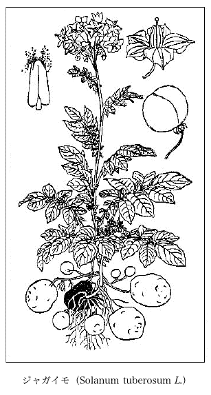
ジャガイモ（Solanum tuberosum L.）
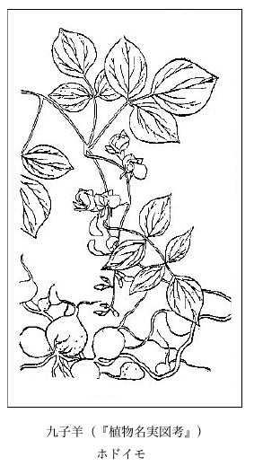
九子羊（『植物名実図考』）
ホドイモ
ホドイモ
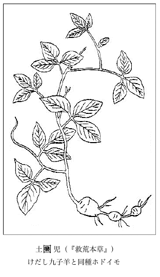
土※［＃「囗＜欒」、U+571E、7-図キャプション］児（『救荒本草』）
けだし九子羊と同種ホドイモ
けだし九子羊と同種ホドイモ
元来百合とは中国の名であるから、これを昔からのように日本のユリに適用することは出来ないはずである。そしてそれを昔の
百合と称するものはユリ属すなわち Lilium
従来日本の学者達は百合を邦産のササユリにあてているが、それは無論誤りであって、ササユリはけっして百合そのものではなく、元来このササユリは中国には産しないから当然中国の名のあるはずはないではないか。
このササユリは関西に多いユリで、関東地方ではいっこうに見ない。一つにサユリともヤマユリ（Lilium auratum Lindl. のヤマユリとは別種で同名）ともいわれる。その学名は従来 Lilium japonicum Thunb. が用いられていたが、この名前づらが他のユリと重複するというので、当時京都帝大の
春旧根ヨリ生ジ円茎高サ三四尺直立ス葉ハ竹葉ノ如クニシテ厚ク光アリ故ニサヽユリト呼ブ五月茎梢ニ花ヲ開クコト一二萼年久シキ者ハ五六萼ニ至ル皆開テ傍ニ向フ六弁長サ四寸許弁ノ本ハ聚テ筒ノ如ク末ハ開テ反巻ス白色ニシテ微紫花後実ヲ結ブ形卵ノ如ク緑色熟スル時ハ内ニ薄片多シ即其子ナリ其根ハ白色ニシテ弁多ク並ビ重リテ蓮花ノ如シ食用ニ入ルユリネト呼ブ
土佐高岡郡佐川町付近の山地にササユリの一変種がある。普通のササユリよりは小形であるが、土地ではやはりササユリと呼んでいる。その花の咲いている時分に山村の人が根を連ね十本くらいを一束として市中に売りに来ていたが、今日はどうだろうか。その根を薬用食にせんがためで、これを食すると痰が取れるといっている。これは私の子供の時分のことであったから今からざっと
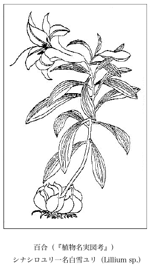
百合（『植物名実図考』）
シナシロユリ一名白雪ユリ（Lillium sp.）
シナシロユリ一名白雪ユリ（Lillium sp.）
キャベツ、すなわちタマナを
いったい甘藍とはどんな蔬菜かといってみると、それは球にならない、すなわち拡がった葉ばかりの Brassica oleracea L. で、その中の var. acephala DC.（無頭すなわち無球の意）がこれにあたる。すなわち前々から
右のキャベツすなわちタマナは Brassica oleracea L. の中のものではあるが、これは葉が層々と密に相包んで大きな球になる品で、学名でいえば Brassica oleracea L. var. capitata L.（この capitata は頭状の意）である。
キャベツはキャベージ（Cabbage）の転化した言葉である。この Cabbage とは大頭の意であって、これは熱帯椰子類の数種の新梢芽が頭状に塊まっているので、本来はそれを Cabbage といったものだ。そしてこの
以上のようなイキサツであるから、このタマナ、すなわちキャベツを甘藍とするのは見当違いであることをよく知っていなければならない。古い学者、技師連などは古い書物に書いてある間違いの影響を受けてその誤りを引き継ぎ、今日でもなお甘藍をキャベツ、すなわちタマナと思っているのはまことにオメデタイ知識の持主であって、憐れ至極な古頭の人々である。総体物は正しくいわなければいかん。知識の奥底を見透かされるのはいっこうにゴ名誉ではござんすまい。
世間一般に昔から藤をフジとしているが、しかし千年あまりも昔に出来た我国で一番古い辞書の『
 としてある。これは中国の書物の『（音ルイ）とはツルすなわちカヅラのことで、それは藤の字の本義である。したがって藤はカヅラである。『ハ藤也」とあり、また「藤ハ也、今草に莚シテノ如キ者ヲ惣テ呼ブ」とある。また『ハ藤也」とあり、また「藤ハ艸木ニ蔓生スル者ノ惣名ナリ」ともある。また右の『大広益会玉篇』の和刻本（日本での刻本）にはの字のところに「ハ藤也」とある右側にフヂカヅラ、左側にクヅフヂの訓が施してある。これは多分今いうフジのカズラ、クズ（葛）のカズラの意でつけたものと想像して可とも思われる。
としてある。これは中国の書物の『（音ルイ）とはツルすなわちカヅラのことで、それは藤の字の本義である。したがって藤はカヅラである。『ハ藤也」とあり、また「藤ハ也、今草に莚シテノ如キ者ヲ惣テ呼ブ」とある。また『ハ藤也」とあり、また「藤ハ艸木ニ蔓生スル者ノ惣名ナリ」ともある。また右の『大広益会玉篇』の和刻本（日本での刻本）にはの字のところに「ハ藤也」とある右側にフヂカヅラ、左側にクヅフヂの訓が施してある。これは多分今いうフジのカズラ、クズ（葛）のカズラの意でつけたものと想像して可とも思われる。本来藤はカズラ、すなわちツルのことであるから、今日花を賞するあのフジは藤の一字を用いたのではそのフジすなわち Wisteria（Wistaria）のフジにはならない。紫藤と書いて藤の上に紫の形容詞を加えてはじめてフジになるのだが、じつはこの紫藤は中国産であるシナフジ（Wistaria sinensis Sweet）の名で、今それを日本産のフジに適用することは出来ない。日本にはフジが二種あって、一つはノダフジ（Wistaria floribunda DC.）、一つはヤマフジ（Wistaria brachybotrys Sieb. et Zucc.）で、この二つの品の総称がフジである。そしてこの二種は日本の特産で中国にはないから、したがって中国の名すなわち漢名はない。ゆえに日本のフジを紫藤と書くのは間違っていることを承知していなければならない。
関西各地に多いササユリ（Lilium Makinoi Koidz.）にも昔からヤマユリの一名があるが、今日普通に世人のいっているヤマユリは関東地方に多いユリであって、Lilium auratum Lindl. の学名を有する。花は七、八月頃にひらき大形で香気多く、白色で花蓋片の中央部に黄を帯び紫褐点のあるのが普通品であるが、また紅色を帯ぶるものもある。そしてその色の濃い品を特に
このユリの鱗茎、すなわち俗にいうユリ根は食用によろしい。ゆえに昔から関西各地では特に料理ユリの名がある。またさらに吉野ユリ、宝来寺ユリ、
徳川時代にはこのユリをヤマユリの名では呼んでいなかったが、後ちこのヤマユリの名が段々東京を中心としてひろがって、普通一般の呼び名になったのは明治以降のことに属する。今日の人々はなにかと言えば直ぐヤマユリを持ち出すけれど、このヤマユリの名は近代において普通に幅を利かすようになったものである。それ以前は前記の通り料理ユリなどの名で呼んでいたのである。また徳川時代に出版になった『
このヤマユリは万葉歌とは全く関係はない。万葉歌と縁のあるものは主としてササユリ、オニユリ、ヒメユリである。多分コオニユリも見逃されないものであろう。
ヤマユリは日本の特産で無論中国にはないから、昔の日本の学者がいうようにこれを天香百合とするのはもとよりあたっていない。
人皇五十九代
大正六年に東京の啓成社で発行した
私の郷里土佐の国高岡郡佐川町では女陰をオカイと称するが、これは御カイであろう。すなわちカイは上古の語の遺っているものと思う。
とにかくアケビとはその熟した実が口を開けた姿を形容したものである。ゆえにこれが縦に割れて口を開けていることを根拠としてアケビの名が生じたと考えられる。それでアケビの語原はこの縦に開口しているのをアケビと形容して、それが語原だとしている人に
旧拙吟
女客あけびの前で横を向き
なるほどゝ眺め入つたるあけび哉
女客あけびの前で横を向き
なるほどゝ眺め入つたるあけび哉
元来アケビは実の名で、これは上に書いたように『新撰字鏡』に出ている。またその蔓の名はアケビカヅラであって、これは古く
日本にはアケビが二つある。植物界では一つをアケビ、一つをミツバアケビといって分けてあるが、アケビはじつのところこの両方の総名である。
かのアケビのバスケットはミツバアケビの株元から延び出て地面へ這った長い蔓を採ってつくられる。普通のアケビにはこの蔓が出ない。
ミツバアケビの実の皮は鮮紫色ですこぶる美しいが、普通のアケビの実の皮はそれほど美しくはない。熟したアケビの実の皮は厚ぼったいものである。中の肉身を採った残りの皮を油でイタメ味を付けて食用にすることがあるが、なかなか風雅なものである。
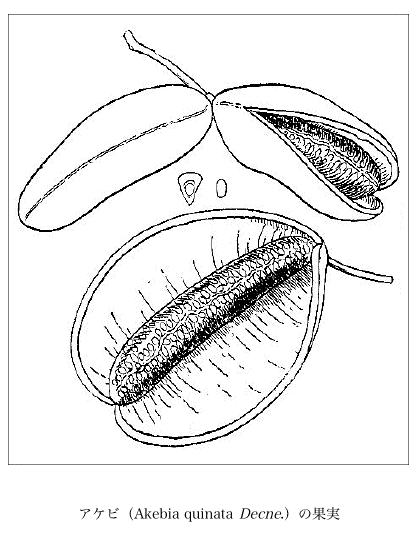
アケビ（Akebia quinata Decne.）の果実
世間の人々、いや学者でさえもアカザとシロザとを区別せずに一つに混同してアカザと呼んでいるが、これはその両方を区別していうのが本当で正しい。しかし元来この二つは共に一つの種すなわち species の内のものであるから両方がよく似ている。シロザが正種で学名を Chenopodium album L. といい、アカザがその変種で Chenopodium album L. var. centrorubrum Makino といわれる。このシロザは原野いたるところに野生しているが、アカザは通常圃中に見られ、あまり野生とはなっていないのが不思議だ。これは昔中国から渡り来ったもので中国の名は

アカザの葉心は鮮紅色の粉粒を布きすこぶる美麗である。そしてその苗が群集して一処にたくさん生え
茎はその育ちによって大小があるが、それが太くて真直ぐに成長したものは杖となる。中国の書物にも「老フル時ハ則チ茎ハ杖ト為スベシ」と書いてある。すなわちこれがいわゆる
アカザはまた一つにアカアカザともオオアカザとも江戸アカザとも、またチョウセンアカザとも称する。そしてアカザの語原は判然とはよく分らないが、そのアカは無論赤だが、ザはどういう意味なのか。書物に
シロザは一つにシロアカザともアオアカザともまたギンザとも称える。その漢名は
 布
布アカザもシロザも共にその葉が軟くて食用になる佳蔬であるから、その嫩葉を摘むことの出来る限り、大いにこれを利用して食料の足しにすればよろしい。
狐ノ
五、六月の侯、竹藪、樹林下あるいは芝地のようなところに生えて吾人に見参し、形円くあるいは多少平円でその大きなものは宛として人の頭ほどになる。初めは小さいが次第に膨らんできて意外に大きくなる。最初は色が白く肉質で中が実しており、脆くて豆腐を切るようだが、後ちには漸次に色が変わり遂に褐色に移り行って軽虚となり、中から煙が吹き出て気中に散漫するようになるが、この煙はすなわちその胞子であるから、今これを胞子煙と名づけてもまんざらではあるまい。今から一〇九〇年も前に出来た
このオニフスベは嫩いとき食用になる。今から二八二年前の正徳五年（1715）に発行の『
 めて賞味したことを親しく私に話された。
めて賞味したことを親しく私に話された。オニフスベは前にも書いたように最も古くから知られた名である。今
オニフスベ（古名）○ヤブダマ○ヤブタマゴ○イシワタ○イシノワタ（予州）○ウマノクソダケ○ウマノホコリダケ○ホコリダチ（『大和本草』）○ホコリダケ○ケムダシ○ケムリタケ○ミヽツブレ○ミヽツブシ（讃州）○ツンボダケ○キツネノハイブクロ（若州）○メツブシ○キツネノチャブクロ（和州）○チトメ○キツネノヒキチャ（勢州）○キツネビ（南部）○キツネノハイダハラ（越前）○カザブクロ（奥州）○ホウホウダケ（備前）○カハソノヘ（江州）○カゼノコ（江州）○ヂホコリ（佐州）（以上）、ほかにケムリタケ、ヤマダマ、キツネノヘダマ、テングノヘダマ、ボウレイシがある。
なおこの他に右に漏れた方言がいずれかの国にあろうと思う。もしかあったら何卒御知らせを願いたい。
オニフスベの漢名は
オニフスベはキツネノチャブクロ科で、その学名は今日では Lasiosphaera nipponica Kobayashi となっているが、もとの学名は Calvatia nipponica Kawamura であって、これを日本の特産菌と認め初めてその新学名を作り発表したのは
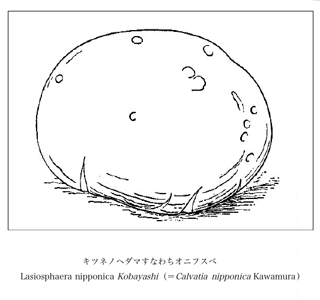
キツネノヘダマすなわちオニフスベ
Lasiosphaera nipponica Kobayashi（＝Calvatia nipponica Kawamura）
Lasiosphaera nipponica Kobayashi（＝Calvatia nipponica Kawamura）
紀州の国は名だたる高野山の寺の境内地に、昔から
理学博士白井光太郎君はかつて我国のヤナギ類について研究したことがあった。その時分高野にこの柳を採集して検討し、その名を該柳にちなんでそのままジャヤナギと定められたので、爾後この名でこの
右の蛇柳について同博士（当時は理学士）は明治二十九年（1896）六月発行『植物学雑誌』第十巻第百十二号に左の通り書かれている。すなわち、
高野山ノ蛇柳
蛇柳ハ高野山上大橋ヨリ奥ノ院ニ至ル右側ノ路傍ヲ去ル十間許ノ処ニアリ高野山独案内ニ「蛇柳の事」「此柳偃低 して蛇の臥せるに似たり依之名くる与猶子細ありと云ふ尋ぬべし云々」トアル者是ナリ廿八年［牧野いう、明治］八月十三日此処ヲ過ギリ此柳ヲ採集セルトキモ枝葉ノミニテ花部ヲ欠キシヲ以テ帰京後同処小林区署山本左一郎氏ニ依頼シ本年五月其花ヲ得タリ花ハ皆雌花ナリ之ヲ検スルニ花穂ニ小柄ヲ具ヘ柄上二乃至四小葉アリ小苞ハ緑色卵円形ニシテ外面絨毛ヲ密布ス子房ハ卵形ニシテ外面絨毛ヲ帯ビ先端ニ短柱ヲ具ヘ柱頭長ク二分ス花穂ノ全長四五分許ニシテ其本ニ倒卵形乃至匙形ノ小葉ヲ対生スルノ状十文字鎗ノ穂ニ似タリ葉ハ細長披針形ニシテ先端尖リ周辺細鋸歯アリ面ハ青ク背ハ淡ニシテ白粉ヲ塗抹セルガ如キ趣アリ長三四寸許新枝ハ浮毛ヲ帯ブレドモ旧枝ニハ毛ナシ予先年此種ヲ大隅佐多付近ニテ採リ昨年四月常州筑波山下ニテモ採レリ筑波山ニアリシ樹ハ直径壱尺余ニシテ直聳シ喬木ヲ成セリ此種ノ形状ハ好ク Salix eriocarpa Fr. et Sav. ニ符号ス此ニ相違ナシト考フ昨年学友某亦筑波山下ニテ之ヲ採集シ此たちしだれやなぎノ新称ヲ命セラレタルヤニ聞キシガたちしだれナル名ハ意義ニ於テモ少シク通ゼザルガ如キ嫌ナキニ非ザレバ予ハ寧ロ蛇柳ヲ以テ此種ノ普通名トナサント欲スルナリ
蛇柳ハ高野山上大橋ヨリ奥ノ院ニ至ル右側ノ路傍ヲ去ル十間許ノ処ニアリ高野山独案内ニ「蛇柳の事」「此柳
である。
『
 柳［牧野いう、は蛇と同字でヘビである］
柳［牧野いう、は蛇と同字でヘビである］息処石の南大河南岸に洲あり古柳蟠低して異風奇態あり夫木集に知家朝臣の歌に咲花に錦おりかく高野山柳の糸をたてぬきにしてといふ此歌にては
柳のことあらわれず扶桑名勝詩集に宕快法印の作とて高野山十二景の中に雪中柳の題のみあり本州旧跡志に柳大塔の東廿八町にあり昔し此所に大ありて妖をなせり時に弘法持呪しければ他所にうつりて其跡に柳生ぜり因て柳といふとあり又此柳偃低大に似たれば柳といひ又大師の加持力にてを変じて柳とならしむといふ説あれどもいぶかし近世雲石堂十八景の中に春日柳の詩あり略す又俗諺に昔し此所に大ありて人を害す大師これを悪み給ひて竹の箒もて大滝へ駈逐し玉ふゆへ大の怨念竹の箒に残れりそがゆへに当山の竹の箒を禁ず又駈逐の時後世若此山にて竹の箒を用ば其時に来り棲めと誓約し玉ふゆへとも云ふ並にとりがたし『
 娜
娜
夫木抄 正嘉二年毎日一首中
咲花に錦おりかく高野山柳の糸をたてぬきにして
民部卿知家
吹たびに水を手向る柳かな 米冠
咲花に錦おりかく高野山柳の糸をたてぬきにして
民部卿知家
吹たびに水を手向る柳かな 米冠
と書いてある。
また同書蛇柳の図の上方に、「
昭和三年（1928）三月発行の『植物研究雑誌』第五巻第三号に「じゃやなぎノ名ノ起リ」と題し、
以前高野山で植物採集会が催された時、その指導者として私も行ったのだが、その折私は同山幹部のある僧に向かってこの蛇柳の由来をたずねてみたら、その答えに「昔高野山の寺の内に一人の僧があって陰謀を回らし、寺主の僧の位置を奪い自らその位に据らんと企てたことが発覚して捕えられ、後来の見せしめのためにその僧を生埋にしたところがあの場所で、そこへあの通り柳を植え、そして右のような事情ゆえその罪悪を示すためその柳の名も蛇柳と名づけたようだ」と語られた。
右の有名なヤナギも今は既に枯死して、ただその名を後世に遺すのみとなった。上のような由来をもったヤナギであったのだから、その後継者として一株の柳樹を植えその跡を標したらどうだろう。
有名な学者の
イチジクの別名として九州地方にはトウガキ（唐柿）の方言がある。これはその形が円くて味が甘いからそう呼んだものだ。またウドンゲという方言があるが、これは無花果の一名を優曇鉢と称えるからであって、それはめったに花の咲かないことを意味した名だ。
無花果は西アジア、ならびに地中海地方の原産で、遠い大昔からその食用果のために栽植せられており、中国へも無論その辺の地方からはいりこんだものであろう。クワ科の落葉樹でその学名を Ficus Carica L. といい、俗にその果を Fig と呼ばれる。種名の Carica は小アジアなる Caria からの名である。
無花果、果たして花はないか。否な花がないのではない。ただ外方より見て見ることが出来ないだけである。実際はその果の内部に小花が填充しているのである。すなわちその花序は閉頭総状花である。言葉を換えていってみれば、これは変形せる一つの総状花穂（raceme）である。そしてその嚢体が裏返って外が内になり、すなわち外にあって咲くべき花がみなそのために内に潜んで天日を仰がずに暗室で咲いているのである。
今ここにそのしかるゆえんを説明するために、私は次の図を創意してみた。すなわちこれでみればその状が一目瞭然であろう。誰でもなるほどと合点が行くであろう。すなわちその花穂の中軸が段々と膨大して頂の方から窪みはじめて陥ちこみ、漸次にその度が増してついにはこれを包んでしまい、花はみなその中へ閉じこめられるのである。そして今想像してみると、その常態の花穂から始まってついに閉在花穂成立までの過程は、どれほど悠久な地質的年代を経過し来ったものかはとても考え及ぶところではない。もしそこにその原始型の化石でもあれば、あるいはおよその年代も多少推測が出来るかも知れない。
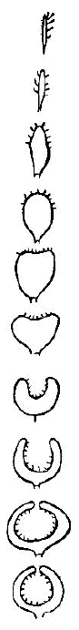
この閉頭果の本には三片の小形苞があり、上頭には相接して多数の小形苞が重って、その口を塞いでいるのが見られる。果体すなわち Fig の内部、すなわちその腹中には、前に書いたように小さい花が無数にあって一杯詰まっている。この花はあるいは長くあるいは短い小梗を具えている有柄花であって、その梗頂に三片の萼と一子房とがある。これは雌花の場合であるが、今我国に栽えてある初渡来以来のイチジクは、みなこのように果中にただ雌花のみを具えていて敢て雄花を見ない。イチジクの種類によってはその入り口の方に雄花があって、他はみな雌花のものもあるが、日本へはまだそんなのは来ていない。雌花に結ぶ小さい核果（Drupe）には各一つの堅い
ところで世界の多くの学者でも、また日本の学者でも、いつも誤っている事実は、この閉頭果すなわちイチジクの実の外壁の部、すなわち中部の花もしくは果実を包んでいる内嚢壁の部を、花托（receptacle）もしくは総花托（common receptacle）だとしていることである。これはじつに思わざるのはなはだしきもので、この部は花托でも何んでもなく、これはそれを正直にいえば単に変形せる花軸である。その花托は内部の小花にこそあれ（上に書いたように）他の場所にある理屈がない。小花にも花托があり、さらにその小梗下の肉壁にも花托があるということになると、畢竟二重に花托が存在している結論となる。そうでないのか、考えてみればすぐ判ることだ。元来花托とは
イチジクは前述の通りクワ科に属する。昔の昔のその昔、大昔のまだ昔、イチジクの果が今日のようにならん前の原始的の花穂は、多分クワの花の花穂のようなものであったろうことが推想し得られる。それがあるテンデンシーをとって進み、幾多地質時代の幾変遷をへつつ、漸次に今日のような形態に到達したのであろう。同じクワ科のドルステニア（Dorstenia）の花は普通の花穂とイチジクとの中間を辿っているとみてよかろう。しかしこの植物の小花は無柄でその肉質壁に坐っているから、その着点を花托とみてもよかろう。
従来日本で栽植せられているイチジクは、葉の分裂の少ない型の種でこれに二つの品種があり、すなわちその一は果皮紫黒色、肉白き黒イチジク、その二は果皮白色で微紫色を帯び、肉淡紅の白イチジクである。その後明治になって渡来したものは葉が深い掌状裂をなした品であるが、今日ではなおその果の優秀な改良種も来ていることと思う。
イチジクと媒介昆虫との相関関係、すなわちカプリフィケーションは複雑を極めているが、それは野生種に起こる現象で、普通に栽植してある食用果のイチジクにはこの事実は見られないように思う。
夢想だもしなかったイチョウ、すなわち公孫樹、
こんな重大な世界的の発見をしたのだから、普通なら無論平瀬氏は易々と博士号ももらえる資格があるといってもよいのであったが、世事魔多く底には底であって、不幸にもその栄冠を
このイチョウの実の中にある精虫を発見したその材料の樹、すなわち眼を傷つけてまでもその実を自分で採集したその樹は、大学付属の小石川植物園内に高く聳立するイチョウの大木であった。その樹はこの由緒ある記念樹として今もなお活きて繁茂し、初冬にはその葉色黄変してすこぶる壮観を呈するのである。
さてこの精虫出生の出来事を譬えれば、これは許嫁の幼い男女二人があって、早くもその男が後ちにお嫁サンになるべき運命を持ったその娘の家に引き取られて養われ、後ちにこの両人が年頃となるに及んで初めて結婚するようなもんだ。
イチョウは雌雄別株の植物で雄木と雌木とがある。この二つの樹がたまたま相接して並んでいることもあるが、たいていは雄木、雌木が相当互に相隔っているものが多い。そして春に新葉の少し出た時分に枝に雄花が咲いて花粉を出すのであって、この花粉は風に吹き送られて遠近に飛散する。けれども極く玄微な花粉ゆえその飛んでいることはとても肉眼では見得べきもないが、そこには飛び来るこの花粉を僥倖に待ち受けているものがある。それは雌木の枝の端に着いている小さい雌花すなわち裸の卵子である。この卵子にはその頂点にじつに針の先きで突いたよりもなお細微な一つの孔があって、その飛び来る花粉を具合よくその孔へキャッチするのである。じつに不思議なのは、遠くから極めて疎らに飛んで来る花粉が、よくもマア卵子頂のこの小さい孔を
さて春に、そこすなわち娘の家に飛びこんだこの花粉すなわち幼い男子はこの娘の家に引き取られて、そこに幾月もの間に段々と生育するのだが、それを養い育てるその娘の家すなわち卵子も、日を経るままに次第にその大きさを増しつつ時日を重ねるのである。そしてそうこうしている内に卵子もズット大きな実となり、初めは緑色であるのが秋風に誘われて、ようやく黄色に色着いて来る。サアこの時だ！ その実の頂に近い内部に液の溜ったところが出来ていて、その液の中へ娘の家で成年に達した男の花粉嚢から精虫が二疋ずつ躍り出て来て、その精虫の体に具えている纎毛を動かしてその液中を泳ぎ回るのである。そして間もなく、これも自分の家で成年に達した娘の雌精器に触接し、握手結婚して一緒になり、ここにめでたく生育の基礎を建てるのである。すなわち許嫁の男子（雄）と女子（雌）とが初めて交会し、四海波静かにめでたく三三九度の御盃をすませる。
それは春から夏を過ぎて秋となり、その間長い月日の間何んの滞りもなく生長を続けてついに成長の期に達し、待たれた本望を遂げて千秋楽とはなったのである。そしてなお樹上にはその実が沢山に残っているから、そこでもここでも同じく華燭の盛典が挙げられめでたいことこの上もなく、許嫁の御夫婦万歳である。そのうちに右の実がいよいよ軟く黄熟し烈臭を帯びて地に落ち、葉もまた鮮やかな黄金色を呈して早くも結婚の終了を告げ欣々然として潔ぎよく散落し、間もなくその年は暮れるのである。そしてこの結婚をすませた実が地に落ちれば、来年はそこに萌出して新苗を作り子孫が繁殖するのである。
イチョウの黄葉は敢てほかの樹には望まれない美観なもので、遠くから眺めればその家、その寺、その村の目標ともなる。もしこの数千本を山に作って一山をイチョウ林にしたらば確かに壮観を呈するであろう。私に○があれば是非実行して世人をアット言わせてみたいもんだが、財布が小さくて手も足も出ないのは残念至極だ。
この木には特にいわゆるイチョウの乳が下がるが、これはこの樹に限った有名な現象である。つまりこれは気根の一種であろう。往々それが地に届きその先が地中に入ったものもある。
この今見るイチョウ樹は昔、日本へは中国から渡り来ったもので、もとより初めから我国に在ったのではない。元来中国の原産であることは疑う余地はないが、今は同国でもその野生は見付からぬとのことである。
自分で大発見などとほざくのは、世間さまを憚らず、分際を弁えぬ大たわけ、僣越至極、沙汰の限りだと叱られるのは必定であるが、今心臓強くこれをがなるのは、そこに「事実」という犯し難い真理があるからである。
私は過去およそ四十年ほど以前から茶の樹についての注意を怠らず、殊に花時にはいつも興深くこれを眺めた。以前東京帝国大学理学部植物学教室の学生で名は今忘れたが相州鎌倉から来ていた方があって、あるとき幾人かで鎌倉の同氏の宅を訪ねたことがあった。そのとき私は偶然同家の裏庭へ行ってみたら、そこに多くの茶の樹があって花が咲いていた。ふと見るとその花の花序すなわち Inflorescence に見慣れないものを見つけた。それは Cyme すなわち
茶の花は十月、十一月に咲くのだが、そのとき茶の樹に眼を注いでみると往々正しく整形せられた聚繖花序に逢着することはなにも珍らしいことではないが、なぜ世の多くの学者が今までこれに気がつかずに見逃がしていたかじつに不思議千万である。日本と西洋とを通じて茶の花の図に一つもそれが描写せられておらず、また茶の記述文にも一向にその事実が書いてない。茶のすべての花は単に葉腋から出るとしてある一本もしくは二本の花梗があって、その花梗末に一輪の花が着いているだけのことになっていて、それがみな単梗花と見なされているのである。しかし今それを精しくかつ正しくいえば、この花梗はじつは今年出た葉腋にあってその頂に一芽を有する今年生の極く短い短枝（学術語）の側面にある苞腋（この苞は逸早く謝し去り花の時にはない）から発出しているのである。
ところが茶の花はその不発育に原因して茶樹上単梗花になっているものが無数にあるが、しかし中にまじって花梗に枝をうち、はっきりした聚繖花序をなしているものに出逢うことはそう珍らしいことではない。誰でも少し注意すれば早速にこれを見出し得ること請け合いである。
この花梗に分枝していないものを見ては誰でもそれが聚繖花序であることには気がつくまいが、花梗をよくよく注意して検してみると、梗の途中に一つの節がある。極く嫩い初期のときにはその節に早落性の苞があるから、推考することに鋭敏な人ならば、その花梗にさらに枝梗が出るはずだと想像することは敢て難事でもあるまいが、今日までそう考えた人は誰もなかったのであろう。
茶にこの聚繖花序の現われるのはまことにこの上もない貴重なかつ大切な事実で、これはこの茶の属、すなわち Thea
茶樹に聚繖花序の出現することは私の発言するまでは誰も知らなかった。かつて私はこの事実を
理学博士
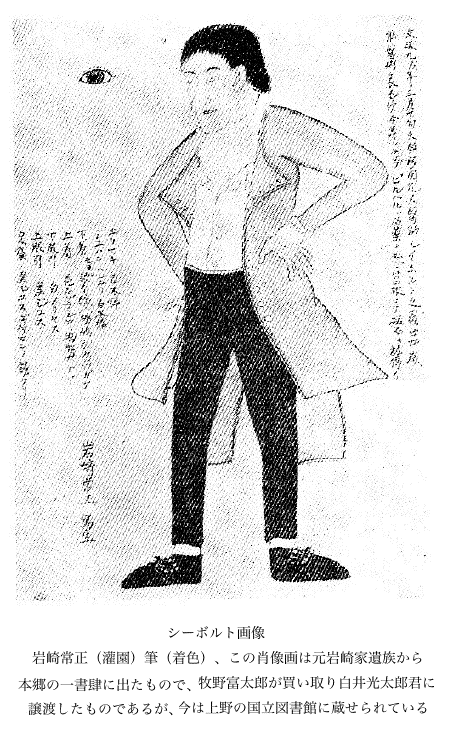
シーボルト画像
岩崎常正（灌園）筆（着色）、この肖像画は元岩崎家遺族から本郷の一書肆に出たもので、牧野富太郎が買い取り白井光太郎君に譲渡したものであるが、今は上野の国立図書館に蔵せられている
岩崎常正（灌園）筆（着色）、この肖像画は元岩崎家遺族から本郷の一書肆に出たもので、牧野富太郎が買い取り白井光太郎君に譲渡したものであるが、今は上野の国立図書館に蔵せられている
白井君はこの肖像の上半身だけを同氏著書、すなわち『増訂日本博物学年表』（明治四十一年発行）に掲げているが、それを私から得た由来はかつて一度も書いたことなく、またいささか謝意を表したこともなかったので、今ここにそれを私から白井氏へ渡った顛末を叙して、その肖像画の由来を明かにしておく。
なおこのほか灌園の筆で美濃半紙へ着色で描いた小金井桜等の景色画二、三枚をも併せて白井君に進呈しておいたが、それらの画は今どこへ行っているのだろう。
また
地衣類植物（Lichenes）に昔からサルオガセと呼ぶものがあって、書物に出ている。すなわちそれはサルオガセ科（Usneaceae）の Usnea plicata Hoffm. var. annulata Muell. である。
このサルオガセは山地の樹木に着いて生じ、長さは六五センチメートルばかり（二尺一寸五分ばかり）に出入りして無数に分枝し、ふさふさとして垂れ下っており、帯黄白色で直径は太いところで二ミリメートルばかりもあり、その外面が短かい管のような環になってひび割れがしているのが特徴である。その変種名の annulata は環状という意味で、この特状に基づいた名である。ふるくからサルオガセと呼んでいた地衣は主としてこの品を指し、それはこの属中で第一等長大な形状をしていて著しいから、人々の目につきやすい。サルオガセは

しかるに我国近代の学者は Usnea longissima Ach. をもってサルオガセと呼んでいるのは、昔からのことを考え合わすとじつは不徹底である。もちろんこれもサルオガセの一種（私はこれをナガサルオガセと呼んでいる）には相違ないが、しかし昔から書物に出ているサルオガセそのものではない。では近代学者が不案内にも強いて妄りにこれをそうした訳はどうかとたずねてみれば、それは初め先ず明治三年（1870）出版の博物館、天産部、植物類の『博物館列品目録』に「サルヲガセ、
サルオガセを Usnea plicata Hoffm. var. annulata Muell. とした初めは私で、私は、これを大正三年（1914）十二月に東京帝室博物館で発行した『東京帝室博物館天産課日本植物

サルオガセの名はこれを松蘿、一名女蘿として源順の『倭名類聚鈔』に出ており、和名をマツノコケともしてある［サルオガセは松蘿でもなければ女蘿でもない、マツノコケは古く深江輔仁の『本草和名』に末都乃古介と出て、これは松蘿を元として製した名であるからこれもサルオガセにはあたっていない。古の松蘿も女蘿もじつはその実物はなんであるのかよくは分らないものである］。小野蘭山の『本草綱目啓蒙』にはサルオガセの一名をサルノオガセ、ヤマウバノオクズ、ヤマウバノオガセ、サルガセ、キリサルガセ、クモノハナ、キヒゲ、ハナゴケ、キツネノモトユイとしてある。そして「木皮ニ生ズル処ハ一筋ニシテフトシ、末ニ枝多ク分レ下垂シテフサノ如シ、白色ニシテ微緑ヲオブ、フトキ処ヲシゴケバ皮細カニ砕テ離レズ、内ニ強キ心アル故数珠ノ形ノ如シ、故ニ弘法ノ数珠ノ変化ト云、和州芳野高野山野州日光山殊ニ多シ、長サ三五尺ニシテ至テフトシ、雨中ニハ自ラ切テ落」と書いてある。この蘭山の文でみても、サルオガセは上に述べた品であることが自から明かである。
岩崎灌園の『本草図譜』にサルオガセの図が出ているが、その品は明かに Usnea plicata Hoffm. var. annulata Muell. である。図上にその環状の模様が表わしてあるのは、これがその種たることを明示している。
毒麦すなわちドクムギ！ 貴い食料品の麦の仲間に毒麦があることを聞けば恐わいことに思われるが、イヤなにも心配無用、その毒麦は本当の麦の仲間ではなく、また本当の麦にはけっして毒はないからご安心のこと、そしてここに毒麦と銘打って出頭したのはそれはホモノ科（禾本科）のものではあるが、全く別属の品で名は毒麦でも麦とはなんの関係もない。しかし小麦粉を度々食料にする今日ただいまでは、この毒麦には
以前我が都民が配給の小麦粉を食って中毒したという風聞が頻々として
ずっと以前、もう
いったいこの毒麦とはどんなものか。先ずこの禾本の学名をたずねると、それは Lolium temulentum L. であって、その種名の temulentum とはぐでんぐでんに酒に酔うたことである。そして本品は欧州、北アフリカ、西シベリアならびにインドの原産である。一年生の草で独生あるいは叢生の
この毒麦がよく小麦畑に生えるので、その収穫のさい毒麦の穀粒が一緒に小麦の穀粒にまじることがある。そしてその毒麦の穀粒は刺激性、麻酔性の毒分を有し、それを食うとよく口に譫語を発し、胃に苦しい痙攣がおこり、心臓が衰弱し、睡気を催し、眩暈がしあるいは昏倒し、悪寒が来、嘔気を催しあるいは嘔吐し瞳孔が散大する。そしてこの有毒アルカロイドをテムリン（Temulin）と称する。
毒麦の俗名には Darnel, Tares, Ivry, Poison rye-grass がある。
この毒麦の属する Lolium
馬の糞や腐った藁に生える菌に馬糞蕈すなわちマグソダケというのがあって、マツタケ科のマツタケ亜科に属し Panaeolus fimicola Fries（＝Coprinarius fimicola Schroet.）の学名を有している。そして、この種名の fimicola は糞上もしくは肥料上に生じている意味である。最古の字書の『
この菌は直立して高さは二寸ないし五寸ばかりもある。茎は痩せ長くて容易に縦に裂ける。
昭和二十一年九月十一日に来訪した小石川植物園の松崎直枝君から、このマグソダケが食用になり、それがまたすこぶるうまいということをきいて私は大いに興味を感じた。
この菌がかく美味である以上は、大いにこれを馬糞、腐った藁に生やして食えばよろしい。春から秋まで絶えず発生するというから、随分と長い間賞味することが出来る訳だ。
これが馬糞へ生えるのはちょうど彼のいわゆるシャンピニオンのハラタケ（田中延次郎命名）一名野原ダケ（拙者命名）すなわち Psalliota campestris Fries（＝Agaricus campestris L.）が連想せられる。このシャンピニオンが培養せられるときには馬糞が使用せられる。それはその生える床に熱を起こさせんがためである。
一茶の句に「余所
今次ぎに私のまずい拙吟を列べてみる。
食う時に名をば忘れよマグソダケ
その名をば忘れて食へよマグソダケ
見てみれば毒ありそうなマグソダケ
恐 は／″＼と食べて見る皿のマグソダケ
食てみれば成るほどうまいマグソダケ
マグソダケ食って皆んなに冷かされ
家内中誰も嫌だとマグソダケ
嫌なればおれ一人食うマグソダケ
勇敢に食っては見たがマグソダケ
その名をば忘れて食へよマグソダケ
見てみれば毒ありそうなマグソダケ
食てみれば成るほどうまいマグソダケ
マグソダケ食って皆んなに冷かされ
家内中誰も嫌だとマグソダケ
嫌なればおれ一人食うマグソダケ
勇敢に食っては見たがマグソダケ
馬勃（オニフスベ）にもウマノクソタケの名があるが、上のマグソダケとは無論別である。
大正十四年八月に、飛騨の高山の町で同町の二木長右衛門氏に聞いた話では、「馬糞ナドニ生エル馬糞菌ヲ喜ンデ食フコトガアル」とのことであった。また「何レノ菌デモ一度煮出シ置キ其後ニ調食セバ無毒トナリ食フ事ガ出来ル」とのことも聞いた。この高山町では漬物の季節に当たって、近在から町へ売りに来る種々な菌を漬物と一緒にそれへ漬け込むのである。同町では定まった漬物日があって年中行事の一つとなっており、その日に各家で漬物をする。その漬物桶が家によってはとても結構なのが用意せられているとのことである。これは他国では見られぬ珍らしい習俗である。そして当時その中へ漬ける蕪は同地普く栽培せられてある赤カブであったが、今はどうなっているだろうか。また右漬物用の菌はどんな種類であるのか調査してみたいものだ。日本の菌学者はこの好季に一度見学に出陣してはどうか、必ず得るところがあるのは請合だ。
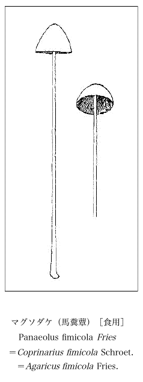
マグソダケ（馬糞蕈）［食用］
Panaeolus fimicola Fries＝Coprinarius fimicola Schroet.＝Agaricus fimicola Fries.
Panaeolus fimicola Fries＝Coprinarius fimicola Schroet.＝Agaricus fimicola Fries.
草餅に昔の草餅と今の草餅とのふた通りがある。昔の草餅は今日はほとんど跡を断って、僅に存する程度である。
昔は草餅をこしらえるには、みなホウコグサ（ホーコグサ）［ハハコグサすなわち母子草の名は実はこの草本来の名ではなく、これは昔『
 ［牧野いう、はモチ］ハアリ其文左ノ如シ。
［牧野いう、はモチ］ハアリ其文左ノ如シ。
三月三日取二嫩艾葉一雑ヘ二米粉ニ一蒸為シテレ謂二之艾一」
とある。謂二之艾一」はモチ、は粳と同じウルチネである。我国春の七草の内に
昔は旧暦三月三日の雛祭すなわち雛の節句には各家で草餅をこしらえたものだ。しかしホウコグサは葉が小さい上に量も少なく、緑色も淡く別に香気もないから、この草を用いることは次第に廃れゆき、さらに野に沢山生えていて緑の色も深くかつよい香いのするヨモギ（
ホウコグサもヨモギも餅にするには元来その葉の綿毛を利用したもので、往時は一つにはこれを餅の繋ぎにしたものだ。今日ヤマボクチ（通常ヤマゴボウと呼び、また所によってはネンネンバと称えている）も葉裏の綿毛を利用して餅に入れ、また所によってはキツネアザミ、ホクチアザミなども用いられる。今日では餅に粘り気の多い糯米を用いるからそんな繋ぎは入用がないようだが、昔は多分
ハナタデとはなぜこれにそんな名を負わせたかというと、その花穂が紅色ですこぶる美観を呈するからである。秋になってそのよく繁茂した株ではその茎枝を分って四方に拡がり、それに多数の花穂が競い出て赤い花が咲いている秋の風情はなかなか捨て難いものである。これにたまたま白花品があって、これがシロバナハナタデと呼ばれる。
今日我が植物学界ではこのハナタデをイヌタデと呼んでいる。これは
今日いう、ハナタデの名も上の『草木図説』に従ったものだが、これも誤りであるから私は新たにこれをヤブタデと名づけた。その花穂は痩せ花は小さくて貧弱、色は淡紅紫で浅く、けっして花タデの名にふさわしくない。私は以前からこんな花のものがどうして花タデの名であるのかと常にこれを怪しんでいたが、果たせるかな本当のハナタデはこれではなかった。
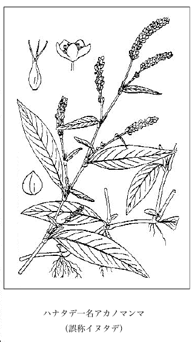
ハナタデ一名アカノマンマ
（誤称イヌタデ）
（誤称イヌタデ）
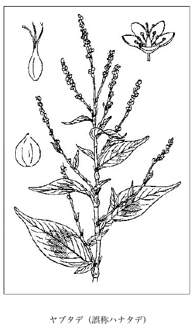
ヤブタデ（誤称ハナタデ）
元来
小野蘭山の『本草綱目啓蒙』馬蓼イヌタデの条下に「品類多シ野生シテ辛味ナク食用ニ堪ザル者ヲ皆イヌタデ或ハ河原タデト呼ミナ馬蓼ナリ」とある。これでみるとイヌタデとは一種の蓼の名ではなく、すなわち辛くない蓼の総称である。ゆえにアカノママの一つを特にイヌタデと限定した名で呼ぶのはよろしくない。
昔にはオオケタデすなわち蓼草をイヌタデといったが、今日は既にこの名は廃絶している。そしてこれは
日本で辛味のある蓼はただ一種ヤナギタデ（アザブタデがじつはヤナギタデで、この蓼は野生はなく圃につくってあって、その葉を料理に用いる）すなわち Polygonum Hydropiper L. があるだけである。その原種は水辺に野生してこれは敢えて食用に利用せられてはいないが（無論利用は出来る）、これから変わって出た上のアザブタデほかのムラサキタデ、アイタデ、ホソバタデ、イトタデなども多く人家に栽えてあって、同じくその葉が食用に供せられる。
ヤナギタデが水中に生活するときは往々冬を越して青々としている。彼のカワタデまたはミゾタデと呼ぶものは流れる水底に生きている。『草木図説』巻之七カハタデ一名ミヅタデ（『新訂草木図説』ではミヅタデとなっている）の条下に図を載せ、「山辺清流ノ中ニ生ジ。流ニ従ツテ長ク水底ニ引キ。節々根ヲ下ス。葉ヤナギタデニ似テ長ジテ尖鋭。鞘葉
早春、水に湿った田に往々低い茎のあるいは立ちあるいは横斜したヤナギタデが越冬して残り、田面をわたる東風に揺れつつ早くも開花結実しているのを見かけるが、これはなんら他の種ではなく、別になんらの名を設ける必要もなく、やはりそれは Polygonum Hydropiper L. にほかならない。私は前々から時々これに出会っているからよくその委細を呑みこんでいる。軽率な人はこれを別種のものとしているが、それはけっして穏健な意見ではない。
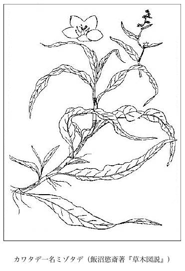
カワタデ一名ミゾタデ（飯沼慾斎著『草木図説』）
ボントクタデ、ちょっと意味の分りかねるおかしな名前の蓼なので、私は久しい間なんとかその訳が知れんもんかと思っていた。
以前備中で植物採集会があって、私は集まった会員を指導しつつ野外の地を歩いた。その時はちょうど秋であって、折りから路傍にあったこの蓼をボントクタデといって会員に教えた。ところが会員がしきりにクスクス笑うので不審に思い、その訳を聴きただしてみたところ、会員の一人が言うには、この辺ではポンツクのことをボントクというのだと答えた。私はははあ成るほどとこれを聴き、初めてボントクの意味が判かり大いに啓発せられたことを悦んだ。すなわちそれは蓼は辛い味のものだと相場が極まっているが、この蓼は一向に辛くないので馬鹿タデすなわちポンツクタデの意で、それでボントクタデだということが初めてこの会のとき明瞭となった訳だ。ただしひとりその実を包む宿存萼には特に辛味があるので、この点は僅かにポンツクを逃れて本当の蓼らしいのが面白い。
しかしこの蓼はその味からいえばポンツクだが、その姿からいえばまことに雅趣掬すべき野蓼で、優に蓼花の秋にふさわしいものである。茎は日に照り赤色を呈して緑葉と相映じ、枝端に垂れ下がる花穂の花は調和よく紅緑相雑わり、それが水辺に穂を垂れている風姿はじつに秋のシンボルであって、他の凡蓼の及ぶところではない。私はこの蓼がこの上もなく好きである。あまり好きなので柄にもなく左の拙吟を試みてみたが、無論落第ものの標本であろう。
紅緑の花咲く蓼や秋の色
水際に蓼の垂り穂や秋の晴れ
我が姿水に映つして蓼の花
一川の岸に穂を垂る蓼の秋
秋深けて冴え残りけり蓼の花
水際に蓼の垂り穂や秋の晴れ
我が姿水に映つして蓼の花
一川の岸に穂を垂る蓼の秋
秋深けて冴え残りけり蓼の花
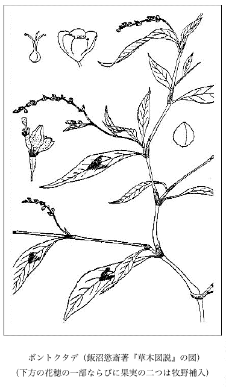
ボントクタデ（飯沼慾斎著『草木図説』の図）
（下方の花穂の一部ならびに果実の二つは牧野補入）
（下方の花穂の一部ならびに果実の二つは牧野補入）
キク科の一植物に、我国植物界で婆羅門参、すなわちバラモンジンと呼んでいる南欧原産の越年草があって Tragopogon porrifolius L. の学名を有する。そしてこれを一つにムギナデシコというのであるが、これはその緑の葉が軟くて長くてあたかも麦の葉のようで、そしてその紫色の花をナデシコのに擬したものである。このムギナデシコの名はふるく徳川時代の嘉永年間頃に出来たものだが、このムギナデシコに対しての名のバラモンジンは新しく明治年間に付けたもののようだ。私の知るところでは明治八年に発行になった
元来この Tragopogon porrifolius L. をバラモンジンと名づけたのは不穏当であった。何んとなれば婆羅門参はヒガンバナ科のキンバイザサすなわち
このムギナデシコは欧州では Salsify, Vegetable-Oyster（植物
属名の Tragopogon は Tragos（
製したお茶の銘の玉露（ギョクロ）は今極く普通に呼ばれている名であることは誰も知らない人はなかろう。ところがこれに反して、その玉露の名の由来に至っては、これを知っている人は世間にすくないのではないかと思う。
明治七年（1874）十一月に当時の
問 玉露と云茶は如何の茶にて何故玉露 と申す訳でござる。
答 玉露は覆 をせし茶の総名でござる今より四十年足らず先より始まりたる茶にて其由来は去る頃大阪の竹商人某と云者折々宇治に来り濃茶薄茶を製するを見てふと心付此葉を以て煎茶に製せん事を木幡村の一ノ瀬と云人に頼み製しめしに元来肥え物の沢山に仕込たる茶なるが故に揉む時分に手の内にねばり付き葉は尽 く丸く玉の様に出来上りたるを其儘急須 に入れ試みしに実に甘露の味ひを含めり是より追々此製世に広まりたり其始め玉の様にて甘味あるを以て誰れ言となくたまのつゆと名付しものを今は音読みして玉露と名付し訳でござる。
しかるに
毎年十月十三日は、弘安五年（1282）に、武州池上の本門寺で入寂した日蓮上人忌日の
さてこのサクラたるや、何も御会式とはなんの関係もなくまたなんの因縁もない。ゆえに御会式があろうがあるまいが、時が来れば
このサクラの本名は
この十月ザクラは絶えて野生はないのだが、国内諸所に植わっており、何も珍種と称するほどのものではない。秋季に一番よく花が咲き、そして冬を越して春になってもまた花が咲くのだが、しかし秋よりは樹上に花の数が少ない。その花は小さくて淡紅色で普通には半八重咲だが、また一重咲のものもある。そして秋の花には往々多少は枝に葉を伴っている。
大和奈良公園二月堂の辺にもこのサクラが一本あった。奈良ではこれを
往々お寺の庭に
このいわゆる菩提樹はもと中国での誤称をその植物渡来と共に日本に伝えたものである。そしてこの樹は中国の原産でシナノキ科に属し Tilia Miqueliana Maxim. の学名を有する。宝永六年（1709）に発行せられた
このいわゆる菩提樹の実が飛び散り人は植えないが、時に山地に野生の姿となっていることがあって、軽率な人はこれを本来の自生だといっているが、それは無論誤解であって本種は断じて我が日本には産しない。
上に書いたものは贋の菩提樹であるが、しからば本当の菩提樹とはどんなものかというと、それはインドに産する
インドボダイジュの実は形が小さくて円いけれど、元来が無花果的軟質の閉頭果であるから、もとより念珠にすべくもない。
菩提樹について『
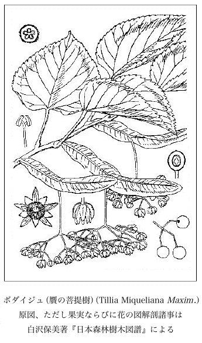
ボダイジュ（贋の菩提樹）（Tillia Miqueliana Maxim.）原図、ただし果実ならびに花の図解剖諸事は白沢保美著『日本森林樹木図譜』による
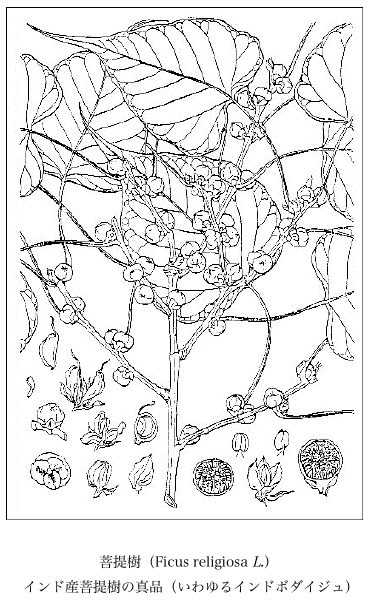
菩提樹（Ficus religiosa L.）インド産
菩提樹の真品（いわゆるインドボダイジュ）
菩提樹の真品（いわゆるインドボダイジュ）
この
蘭山先生はもと京都の人で名を
二十五歳の時代から自邸において弟子を集め本草学を講義していて敢えて官途には就かなかった。先生は若いときから読書が好きで
七十一歳に達したとき幕府に召されて東都（東京）に来り、医官に列して本草学と医学とを医学館で講義した。そして時に触れては諸国へ採薬旅行を試みた。先生の書斎衆芳軒はまるで雑品室のようで、室内には書籍や参考資料や研究材料がイヤというほど一杯に満ちて足のふみ場もなく、先生は僅かにその間に体を容れて坐り机に向かってあるいは書を読みあるいはそれを筆写しまたは抄録しまた実物を研鑚せられた。その間気が向けば笛を吹き興が湧けば詩をも賦せられた。シーボルトは先生を日本のリンネだと称讃した。先生は元来近眼であったが眼鏡は掛けなかった。そして灯下で字を写すにも平気で筆を運ばせ、また草木の写生図もよくした。松岡恕菴の『
先生は享保十四年（1729）八月二十一日に京都の桜木町で生まれたが、前記の如く文化七年（1810）正月二十七日に八十二歳の高齢に達して東都医学館の官舎で病歿し、浅草田島町の誓願寺に葬られて墓碑が建った。
この偉人の
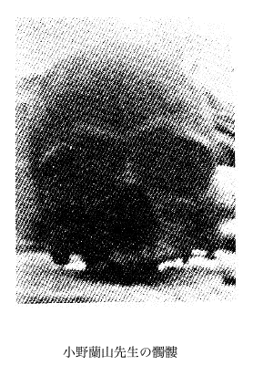
小野蘭山先生の髑髏
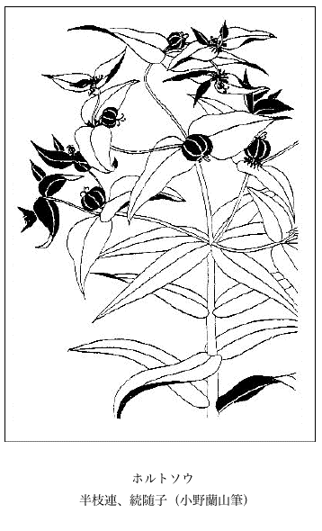
ホルトソウ
半枝連、続随子（小野蘭山筆）
半枝連、続随子（小野蘭山筆）
私はこれまでに秋海棠が日本に自生していると聞かされたことが一再ではなかった。が、しかし秋海棠は断じて我国には自生はない。それがあるように見えるのは、もと栽えてあったものから解放せられて自生の姿を呈しているので、そこで軽忽な人を瞞化しているにすぎない。そしてその自生姿を展開し繁殖している場所がいつも御寺の境内とかまたはその付近とかに限られている。例えば紀州の那智山とか房州の清澄山とかにそれがあるというのもまたこの類にすぎない。野州のある寺の付近の斜面崖地にもまた同じく自由に繁殖しているところがあった。
元来秋海棠は群を成して繁殖しやすい性質をもっている。すなわちそれは主としてその体上に生じている多くの肉芽からである。この肉芽は無論空中を飛ばないからその繁殖は大分限定せられている。花後の果実からも無数の軽い砕小種子が散出するから、この種子からもまた新苗の萌出することがある訳だが、私はまだ右種子からの仔苗を見ない。
秋海棠は中国名すなわち漢名である。これを音読したシュウカイドウが和名となっている。元禄十一年（1698）に出版された貝原
秋海棠は真に美麗な花が咲き何んとなく懐しい姿である。さればこそ
 子
子秋海棠はジャワならびに中国の原産であって Begonia Evansiana Andr. の学名を有し、またさらに Begonia discolor R. Br. ならびに Begonia grandis Dryand. の異名がある。
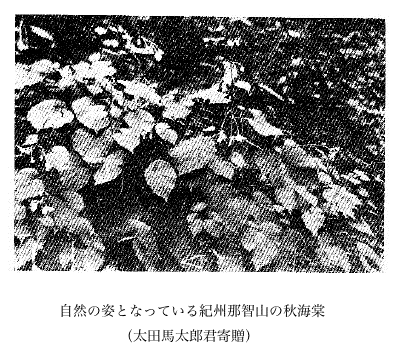
自然の姿となっている紀州那智山の秋海棠（太田馬太郎君寄贈）
各地で寺の門に近づくと、そこによく「不許葷酒入山門」と刻した碑石の建てあることが目につく。この
右の葷菜とは元来五葷といい、また五辛と呼んで口に辛く鼻に臭ある物五つを集めた名で、それは神を昏まし性欲を押さえるために用いたものといわれる。
明の
ヲ以テ五葷ト為シ、道家ハ韭、薤、蒜、芸薹、胡ヲ以テ五葷ト為シ、仏家ハ大蒜、小蒜、興渠、慈葱、茖葱ヲ以テ五葷ト為シ、各同ジカラズト雖ドモ、然カモ皆辛薫ノ物、生食スレバ 薹でウンダイアブラナ（私の命名）の和名を有し、今日本でも搾油用として作っている。そして従来日本でのアブラナへこの薹の漢名が用いてあるが、それは誤りであって、この日本のアブラナには漢名はない。胡はカラカサバナ科のコエンドロ、薤はラッキョウ、興渠は一名薫渠で強臭のある
薹でウンダイアブラナ（私の命名）の和名を有し、今日本でも搾油用として作っている。そして従来日本でのアブラナへこの薹の漢名が用いてあるが、それは誤りであって、この日本のアブラナには漢名はない。胡はカラカサバナ科のコエンドロ、薤はラッキョウ、興渠は一名薫渠で強臭のあるそこで問題解決で筆を馳せ云云せにゃあならんことは、小蒜と大蒜との件である。すなわちこの大蒜とはニンニクで一つに葫と呼ばれているものである。そしてこの小蒜は単に蒜と書いてあるものと同じで、それはニンニクに似た別の品種であるが、じつは私はこれの生品を一度も見たことがないのは残念だ。昔の『本草和名』だの、『本草類編』だの、また『倭名類聚鈔』だのにこれを古比留または古比流すなわちコビルといっているのは、何も実物を親しく見ての名ではなく、これは漢名小蒜の二字に基づいた紙上の名であるといってよい。またこれを米比流というのは女ビルか雌ビルかの意で小蒜から思いついた同じく紙上の名である。そしてこの小蒜はもとは野生のものを栽培して出来たように書いてある。だからそれに沢蒜だの山蒜だのの名があっても、今はこの小蒜は野生の品とは異なったものであると中国の昔の学者は弁じているが、按ずるにこれはいつか中国へはいった外国産であろうと思う。とにかく小蒜は中国で栽培せられている一種のニンニク式の品で葉を連ねてその根を煮て食うものである。李時珍がその著『本草綱目』の蒜の条下でいうには「家蒜ニ二種アリ、根茎倶ニ小ニシテ弁少ナク辣甚ダシキ者ハ蒜ナリ小蒜ナリ、根茎倶ニ大ニシテ辣多ク辛シテ甘ヲ帯ブル者ハ葫ナリ大蒜ナリ」（漢文）と述べている。また宋の

中国では蒜すなわち小蒜は土産品として従来からあったもの、すなわち中国産品であるが、大蒜は漢の時代に西域の胡国から来たもので葫ともまた胡蒜ともいわれている。かく大蒜が外から中国にはいってきたので、そこで中国で従来からの蒜を小蒜と呼ぶようになった訳だ。愚考するにこの小蒜が多分 Allium sativum L. すなわち Garlic そのもので、これは
ニンニクは昔はオオヒルといったが、この称えは今は廃れそのオオヒルは古名となった。日本で昔単にヒル（その鱗茎を食うと口がヒリヒリするのでいう）と呼んだのは、実際はニンニクをいったものだが、書物の上ではこのニンニクのオオビルとコビルすなわちメビルとの二つを指して、かくヒルというとなっている。私は今このコビルをニンニクに対せしむるためにそれを新称してコニンニクともいってみたい。それはニンニクに比べればやや小形だからである。
Allium sativum L. の和名はコビル（コニンニク）であるから、その俗名の Garlic もまた厳格にいえば同じくこれをコビルとせねばならない。普通の英和辞書にあるように単にニンニクでは正解ではない訳だが、先ず先ず通俗にいえばそれでも許しておけるであろう。そして強いてニンニクの俗名を作ればすなわち Large Garlic とでもすべきものだ。
明治三十九年（1906）八月に滋賀県の人々の主催で、近江伊吹山植物講習会が開かれ、四方から雲集した講習員は約三百名もあった。そしてこの会に講師として招かれ東京から赴いた私は、伊吹山下の坂田郡
それより早くも十七年をへた大正十二年（1923）九月一日の関東大震災に先だつこと数年前に、その南天の枯幹が的場家の家屋修繕の際に倒れて枯死した由で、図らずも江州春照村の原地から東京丸ノ内の報知新聞社代理部へ持ちこまれた。当時これを八百円で売却したいと唱えていた。その時はちょうど欧州大戦後であったので成金目当てにこんな値段を吹いたものであろう。私はこの時その写真を撮っておいたが、それが昭和十一年四月発行の『牧野植物学全集』の口絵に出ている。その後この幹が他所へ移され、なんでも東京朝日新聞社の代理部の方へ回ったと聞いたようだが、その後その行き先きがどうなったか私には分らなくなった。そしてそれが東京の誰かの家にあったとしたらあるいは大震災で焼失したかも知れないが、幸いにそれが無事だったとしても、あるいは今回の大戦火で烏有に帰したのであろう。もしまた東京に置いてなかったなら何れかの所にあるのかも知れないが、今日では全くこの南天大木の消息は判らない。もしも万が一どこかに無事に残存していたら極めて珍重すべきものたることを失わない。敗戦で日本は大分狭くはなったが、それでもなおなかなか広いからどこの国にあるいは右に優る巨大なものがないとも断言は出来ない。
上の南天巨幹はその根元から七本に分かれ、その中の最大の主幹は株元から
今日右とは別に私宅にも一本の巨大な南天の材が保存せられてある。長さは上述近江のものには及ばないが、太さは根元から八寸ばかりのところで周囲まさに九寸を算するから、右近江のそれよりも一寸多い（しかし最下の方はやや小さくなっている）。してみると、これは近江のものより少々優越していることになる。私は大正十二年（1923）八月にこれを備後三原町南方の在で得たが、当時一漁民の家の庭に一叢の南天が繁っていて、その叢中にこの一本の巨幹が交っていた。そこで早速その持主に乞うてこれを伐り東京の我が家に携へ帰って、今日なお秘蔵しているものである。これぞすなわち、今私の知り得る範囲では最大な南天の巨材である。
京都の嵯峨に佐野藤右衛門という植木屋の老人があって、植木のことには誠に堪能であった。そして特別にサクラを愛して多くの種類を園中に蒐めていた。あるとき巨大に成長した南天の話をしたら、この老人のいうには、南天の種子を極めて大量に蒔いて沢山にその苗を仕立ててみると、その中には群を抜いて特に大形に育ち来るものが一、二本はある。総じて南天は叢生する天性があるのだが、この大きくなる苗は常に一本立ちになっているとのことであった。
一八とはイチハツの当字で、イチハツとは
このイチハツは日本で名づけた俗名でありながら、今のところその語原が不明である。茎の頂に花が一つずつひらくから、それで一発の意味だとこじつけられないことはない。だがこのズドンと撃った一発は的をはずれ、それは無論勝ち星が得られないこと受け合いだろうが、また世間にはまぐれ当りということもある。
方々を歩いてみると、往々このイチハツを藁屋根の棟に密に列植してあるのを見かけるが、その紫
この学名の Iris tectorum Maxim. の tectorum は「家根ノ」あるいは「家屋ニ成長シテイル」との意味である。この種名はこの学名の命名者マキシモウィチ（Maximowicz）氏が日本で家根のイチハツを望み見て名づけたものである。そしてその研究命名の材料の一つは横浜付近で得たのだから、多分それは程ヶ谷町（保土ヶ谷町）で採ったのであろう。そして同地では今日でもなおイチハツの藁葺屋根が残っている。
中国の書物の『
元禄七年（1694）にできた
昔の東海道筋にあたる武蔵程ヶ谷（保土ヶ谷）の藁葺の家には、その家根の棟にイチハツが栽えてあって、花時にはその花があわれにも咲いてなお昔の面影をとどめている。もしも時の進みでこの藁葺の家がなくなれば、この風景が見られなく、きのうはきょうの物語りになるのであろう。
伊豆の湯が島（温泉場）ではこれを万年グサと呼んでいる。これはそのイチハツを屋上に栽えれば久しく生活して永く残るゆえだといわれる。
甲州ではイワヒバ（方言イワマツ）が藁葺屋根の棟に列植せられてある。東北地方では同じく藁葺の家根草にまじって往々オニユリの花が棟高く赤く咲いていて、すこぶる鄙びた風趣を呈している。
泰西のある学者は横浜付近の野にイチハツが野生しているように書いているが、それは見誤りでイチハツは絶対に我国に野生はない。
ワルナスビとは「悪る茄子」の意である。前にまだこれに和名のなかった時分に初めて私の名づけたもので、時々私の友人知人達にこの珍名を話して笑わしたものだ。がしかし「悪ルナスビ」とは一体どういう理由で、これにそんな名を負わせたのか、一応の説明がないと合点がゆかない。
下総の印旛郡に三里塚というところがある。私は今からおよそ十数年ほど前に植物採集のために、知人達と一緒にそこへ行ったことがある。ここは広い牧場で外国から来たいろいろの草が生えていた。そのとき同地の畑や荒れ地にこのワルナスビが繁殖していた。
私は見逃さずこの草を珍らしいと思って、その生根を採って来て、現住所東京豊島郡大泉村（今は東京都板橋区東大泉町となっている）の我が圃中に植えた。さあ事だ。それは見かけによらず悪草で、それからというものは、年を逐うてその強力な地下茎が土中深く四方に蔓こり始末におえないので、その後はこの草に愛想を尽かして根絶させようとしてその地下茎を引き除いても引き除いても切れて残り、それからまた盛んに芽出って来て今日でもまだ取り切れなく、隣りの農家の畑へも侵入するという有様。イヤハヤ困ったもんである。それでも綺麗な花が咲くとか見事な実がなるとかすればともかくだが、花も実もなんら観るに足らないヤクザものだから仕方ない、こんな草を負い込んだら災難だ。
茎は二尺内外に成長し頑丈でなく撓みやすく、それに葉とともに刺がある。互生せる葉は薄質で細毛があり、卵形あるいは楕円形で波状裂縁をなしている。花は白色微紫でジャガイモの花に似通っている一日花である。実は小さく穂になって着き、あまり冴えない柑黄色を呈してすこぶる下品に感ずる。
この始末の悪い草、何にも利用のない害草に悪るナスビとは打ってつけた佳名であると思っている。そしてその名がすこぶる奇抜だから一度聞いたら忘れっこがない。
この草は元来北米の産でナス科ナス属に属し Solanum carolinense L. の学名を有する。アメリカ本国でも無論耕地の害草で、さぞ農夫が困りぬいているであろうことが想像せられる。そしてこの草の俗名は Horse-Nettle, Sand-Brier, Apple-of-Sodom, Radical-weed, Bull-nettle ならびに Tread softly である。
ついでに、三里塚にはこれも北米原産の Rudbeckia hirta L. が沢山生えている。茎は立ち葉は披針形で毛がある。花季には黄色の菊花が競発する。まだ和名がないようだから、私は先きに
ヨタレソツネはナラムウヰノと続くイロハ四十七字中の字句であるが、このカナメゾツネはちっとも意味の分らん寝言みたいな変な名だ。これぞ明治の初年に東京は山手の四ツ谷辺で土地の人に呼ばれていた称呼で、それはアミガサタケの俗称である。そしてこの菌の学名は Morchella esculenta Fr. であって、その属名の Morchella はドイツ名の Morchel をジレニウスという学者が変更した名、種名の esculenta は食用トナルベキの意である。
この編み笠を冠ぶった姿のアミガサタケはなにも珍らしいほどのものではなく、五月の季節が来れば方々に生える地上菌で、その形が奇抜なものである。そしてその色は生ま黄色い灰白色で、なんだか毒ナバ（毒菌の意）らしく見える。西洋では昔からこの菌の食用になることを知っていた。
しかしこの菌が食えると聞いたら、普通の人はその姿から推してこれを怪訝に思うであろう。そしてよほど物好きな人でないかぎり多分食ってみる気にはならないであろう。が、かつて友人の恩田
アミガサタケは編笠蕈の意で、この名なら造作もなくその意味が分るが、カナメゾツネときたら唐人の寝言で何のことかサッパリ分らぬ。それでこの書へこうして出しておいたなら、世間は広いし識者も多いことだからあるいは解決がつかないもんでもなかろうと、一縷の望みを繋いでかくは物し侍べんぬ。
日本の学者は昔から
子この茱萸すなわちいわゆる
『大言海』のグミの語原は不徹底至極なもので、けっしてその本義が捕捉せられていない。すなわち正鵠を得ていないのだ。一体グミとはグイミの意で、グイミとは杭の実の義でこの杭は刺を意味して、そして刺は備前あたりの方言でグイといわれ、クイ（杭）と同義である。すなわちグイミとは刺の実の意で、それはそれの生る胡頽子すなわち
茱萸をグミだと誤解している人達は、早速に昨非を改めて、人の嗤い笑うを禦ぐべきのみならず、よろしくその真実を把握して知識を刷新すべきだ。
前に書いたように茱萸はすなわち呉茱萸で、その実の味はヒリヒリするものであって、薬にはするが、敢て果のように嘗め啖うべきものではない。中国では毎年天澄み秋気清き九月九日重陽の日に、一家相携えて高処に登り菊花酒を酌み、四方を眺望して気分をはれやかにする。また携えて行った茱萸（呉茱萸）を投入した茱萸酒を飲み、邪気を辟け陰気を払い五体の健康を祈り、一日を楽して山上に過ごして下山して帰宅する習俗がある。
次の詩は中国の詩人が茱萸を詠じたものである。
独リ在テ二異郷ニ一為ル二異客ト一、毎ニレ逢フ二佳節ニ一倍マス思フレ親ヲ、遙ニ知ル兄弟登ルレ高キニ処、 ネク挿ムモ二茱萸ヲ一少クナラン二一人ヲ一、手ヅカラ種ユ二茱萸ヲ一旧井ノ傍ラ、幾回カ春露又秋霜、今来独リ向フテ二秦中ニ一見ル、攀折無シ三時ニ不ザル二断腸セ一、
ネク挿ムモ二茱萸ヲ一少クナラン二一人ヲ一、手ヅカラ種ユ二茱萸ヲ一旧井ノ傍ラ、幾回カ春露又秋霜、今来独リ向フテ二秦中ニ一見ル、攀折無シ三時ニ不ザル二断腸セ一、
ネク挿ムモ二茱萸ヲ一少クナラン二一人ヲ一、手ヅカラ種ユ二茱萸ヲ一旧井ノ傍ラ、幾回カ春露又秋霜、今来独リ向フテ二秦中ニ一見ル、攀折無シ三時ニ不ザル二断腸セ一、昔中国から来た呉茱萸が今日本諸州の農家の庭先きなどに往々植えてあるのを見かけるのは敢て珍らしいことではない。樹が低く、その枝端に群集して着いている実は秋に紅染し、緑葉に反映して人の眼をひく、すなわちこの実には臭気がありそれが薬用となる。ところによっては民間でその実を風呂の湯に入れて入浴する。日本にあるこの樹はみな雌本で雄本はない。ゆえに実の中に種子が出来ない。これは挿木でよく活着するだろう。
千年ほど前に出来た辞書、それは人皇五十九代宇多帝の時、寛平四年すなわち西暦八九二年に僧
秋の
元来ムクゲは昔中国から渡った外来の灌木で、七
いま一つ『万葉集』巻十にアサガオの歌がある。すなわちそれは「朝がほは朝露負ひて咲くといへど、ゆふ陰にこそ咲きまさりけれ」である。この歌もまた桔梗として敢えて不都合はないと信ずるから、それと定めても別に言い分はない。すなわちこれは夕暮に際して特に眼をひいた花の
この『万葉集』のアサガオを
また万葉歌のアサガオをヒルガオだとする人もあったが、この説もけっして穏当ではない。
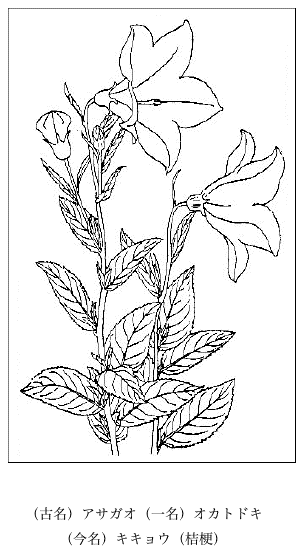
（古名）アサガオ（一名）オカトドキ
（今名）キキョウ（桔梗）
（今名）キキョウ（桔梗）
日本のヒルガオには二つの種類があって、一つはヒルガオ（Calystegia nipponica Makino, nom. nov.＝C. japonica Choisy non Convolvulus japonicus Thunb.）一つはコヒルガオ（Calystegia hederacea Wall.）である。これらは昼間に花が咲いているので、それで昼顔の名があって朝顔（Pharbitis hederacea Choisy var. Nil Makino＝Ph. Nil Choisy）に対している。
また右のヒルガオ、アサガオとは関係ないが、ついでだから記してみると、今日民間で夕顔と呼んでいるものはいわゆる Moon-flower（Calonyction Bona-nox Bojer）で、これは夕顔の名を冐しているが、その正しい称えは夜顔（
古えより我国の学者はコヒルガオをヒルガオとし、ヒルガオをオオヒルガオと呼んでいるが、私の考えはこれと正反対で、右のヒルガオをコヒルガオとし、オオヒルガオをヒルガオと認定している。それはそうするのが実際的であり自然的であり、また鑑賞的であって、したがって先人の見解が間違っているとみるからである。
なぜ昔からの日本の学者達は、その花が爽かで明るく、その大きさが適応で大ならず小ならず、その観た姿がすこぶる眼に快よいヒルガオの花が郊外で薫風にそよぎつつ、そこかしこに咲いているにかかわらず、花が小さくてみすぼらしく色も冴えなく、なんとなく貧相であまり引き立たないコヒルガオを特にヒルガオと称えたかと推測するに、それは古えより我国の学者が、随喜の涙を流して尊重した漢名すなわち中国名が禍をなしてこんな結果を生んだものだと私は確信している。そうでなければ一方に優れた花のヒルガオがあるにもかかわらず、花の美点の淡き貧困なコヒルガオを殊さらに選ぶ理屈はないじゃないか。
中国の本草、園芸などの書物に
ヒルガオには白花品があってこれをシロバナヒルガオと称する。古人の描いた図にも出ているが、私は先年これを紀州高野山で採集した。学名は Calystegia nipponica Makino var. albiflora Makino である。そしてこれを Calystegia subvolubilis Don var. albiflora Makino et Nemoto とするのは非で、この C. subvolubilis Don は全然日本になく、これは大陸の種である。そして日本のヒルガオは日本の特産で大陸にはなく、したがって中国にも産しない。ゆえにヒルガオには漢名はない。上記の如く旋花、一名鼓子花を昔からヒルガオとしてあるこのいわゆるヒルガオは前述の通りにまさにコヒルガオそのものであり、またあらねばならない。
旋花の意味は、その花の花冠（Corolla）が弁裂せずに完全に合体して、環に端がないように、その縁が遶っているからだといわれる。また鼓子花の意味はその形が軍中で吹く鼓子に似ているからだとのことである。そうするとこの鼓子は、鼓のようにポンポン打つもんではなくて、ブーブーと吹き鳴らす器である。
ハマユウはハマオモトともハマバショウともいうもので、漢名は『

葉の本の茎は本当の茎ではなく、これはその筒状をした葉鞘が前述のように幾重にも巻き
『万葉集』巻四に「
貝原益軒の『大和本草』に『
また
みくまのにあり此みくまのは志摩国也大臣の大饗の時はしまの国より献ずなる事旧例也是をもつて雉のあしをつゝむ也抑此はまゆふは芭蕉に似たる草のくきのかはのうすくおほくかさなれる也もゝへとよめるも同儀也又これにけさう文を書て人の方へやるに返事せねば其人わろしと也又云これにこひしき人の名をかきて枕の下にをきてぬればかならず夢みる也此みくまのは伊勢と云説もあり何にも紀州はあらず云々
とある。
浜木綿とは浜に生じているハマオモトの茎の衣を木綿（ユフとは元来は楮すなわちコウゾの皮をもって織った布である。この時代にはまだ綿はなかったから畢竟木綿を織物の名としてその字を借用したものに過ぎないのだということを心に留めておかねばならない。ゆえにユフを木綿と書くのはじつは不穏当である）に擬して、それで浜ユフといったものだ。人によってはその花が白き幣を懸けたようなのでそういうといってるけれど、それは皮相の見で当っていない。
同じく本居氏の同書『玉かつま』木綿の条下に「いにしへ
小笠原島にオオハマユウというものがある。その形状はハマユウすなわちハマオモトと同様でただ大形になっているだけである。この学名は Crinum gigas Nakai である。が、私は今これを Crinum asiaticum L. var. gigas（Nakai）Makino（nov. comb.）とするのがよいと信じている。
中国に
芭蕉は上の甘蕉の一名であるから、この芭蕉もまたバナナの中国名である。芭蕉とはその葉の新陳相続いている意味であるといわれる。明の
 雅
雅また李時珍が
また李時珍が
ひろく我国各地に植えてあって普く人も知っているいわゆるバショウ（Musa Basjoo Sieb.）は昔中国から渡来したものだが、しかしそれがいつの時代であったのか今私には不明である。が、しかし一千余年も前にできた
バショウは元来暖地の産であるから寒い地方には育たないが、日本中部以南の各地には、別に何んの経済的価値もないが、ただ庭園の装飾用として植えてある。大きな花穂を象の花のように垂れてよく花が咲き、花後に子房（下位子房である）が花時よりは太く増大して緑色を呈し、著しい姿で多数相ならび、永く花穂の花軸上に遺っているのを常に見かける。総体 Musa
バショウの高く直立せる円柱状の茎はじつは本当の茎ではなくいわゆる偽茎であって、それは長い葉鞘が重なって出来たものである。かの有名な芭蕉布は琉球に産するイトバショウ（Musa liukiuensis Makino）の葉鞘から製した繊維で織るのであるが、常のバショウのバショウ繊維は何にも利用せられていない。茎は短大でほとんど地下茎の状を呈し横に短かい新芽を分って葉を出すのである。そして三年目に花を咲かせてその年に枯槁し、側に出ている新しい偽茎がこれに代わるのである。
バショウの和名は芭蕉から来たものである。芭蕉はすでに上に述べたようにバナナの名であるから、バショウの和名はじつは不都合を感ずるけれど、昔からそういい習わされて来ているから今さらこれを改めることは不便極まるもので、まずはそれを見合わすよりほかに途はあるまい。
海藻である緑藻部（Chlorophyceae）の中に緑色のやさしい姿をしている石灰質の珍らしいオトヒメカラカサ（乙媛傘、すなわち龍宮の仙女乙媛の傘の意）があって、この和名は私の名づけたものだが、しかし一般の海藻学者はこれをカサノリ（傘海苔）といっている。すなわちこれは初め藻類専門家の理学博士岡村金太郎君（東京人）の名づけたものである。私はこの美麗で優雅でかつ
このオトヒメカラカサは Acetabularia
ついでながら、ここに同目録で私が新和名を下した海藻は次の品々であったことを紹介しておこう。この時分はこれらの海藻に和名がなかった。
Amphiroa aberrans Yendo（フサカニノテ）、Amphiroa declinata Yendo（マガリカニノテ）、Amphiroa ephedracea Lamk.（マワウカニノテ）、Grateloupia imbricata Hoffm.（シデノリ）、Grateloupia ligulata Schmitz（ナガムカデ）、Ceramium circinatum J. Ag.（マキイギス）、Dasya scoparia Harv.（ヒゲモグサ）、Dasyopsis plumosa Schmitz（ヒゲモグサモドキ）、Heterosiphonia pulchra Ekbg.（シマヒゲモグサ）、Laurencia obtusa Lamx.（マルソゾ）、Laurencia tuberculosa J. Ag.（タマソゾ）、Polysiphonia Savatieri Hariot（サバチエグサ）、Polysiphonia urceolata Grev.（アカゲグサ）、Polysiphonia yokosukensis Hariot（ヨコスカイトゴケ）、Champia expansa Yendo（オオヒラワツナギ）、Gymnogongrus divaricatus Holm.（ハタカリサイミ）、Sargassum Kjellmanianum Yendo（コバタワラ）、Colpomenia sinuosa Derb. et Sol. forma deformans Setch. et Gard.（ヒロフクロノリ）、Colpomenia sinuosa Derb. et Sol. forma expansa Saund.（ヒラフクロノリ）、Chaetomorpha moniligera Kjellm.（タマシュズモ）、Cladophora utriculosa Kuetz.（ヒメシホグサ）、Enteromorpha clathrata J. Ag.（カウシアオノリ）。
スイカの中国名は西瓜で、その学名は Citrullus vulgaris Schrad. である。我国でつくられる瓜類の中で特にその葉が細裂しているので、直ぐに他の瓜類とは見分けがつく。熱帯地方ならびに南アフリカ地方の原産で俗に Watermelon と呼ばれる。
スイカは水瓜の意ではなく、西瓜の唐音から来たものであることが
白井光太郎博士の『植物渡来考』に『
今日では淡緑色皮の円いスイカ、楕円形で皮に斑紋のあるスイカが普通品だが、もっと前、私共の若い頃のスイカの普通品のまん円い深緑色皮のものであったが、それがいつとはなしに世間になくなった。そしてこのスイカの種子は大きくて黒色であった。これに比べると今日のスイカの種子は色も違い形も楕円形で小さい。右の深緑色球形のスイカは徳川時代から明治時代へかけての普通品で、
中国人は常に種子を食する習慣がある。すなわち歯でその皮を割りその中身の胚を味わうのである。食べ慣れないとなかなか手際よくゆかない。それにはその種子が大きくないと叶わんので、中国では特に種子食用の西瓜がつくられていると聞いたことがあった。
日本へ昔
 柳
柳このギョリュウの学名は疑いもなく Tamarix chinensis Lour. であるが、学者によっては日本にあるギョリュウは Tamarix juniperina Bunge であるといわれる。そうなると右はいずれが本当か。今これを裁判して判決するのはまことに興味ある問題であるばかりではなく、この判決は疑いもなく世界の学者にその依るところを知らしめる宣言であり、また警鐘である。
さて日本にあるギョリュウは一樹でありながら、その一面は Tamarix chinensis Lour. であり、またその一面は Tamarix juniperina Bunge である。すなわちこのギョリュウは五月頃まず去年の旧枝に花が咲いて、これに Tamarix juniperina Bunge の名が負わされ、次いで夏秋にまたその年の新枝に花が咲いて Tamarix chinensis Lour. の名になるのである。かく同じ一樹で樹上で二回花の咲くことを学者でさえも知っていないのであるのはどうしたもんだ。すなわちこの点では確かに学者は物識りではないことを裏書きする。そしてそれをひとり認識している人は誰あろう、ほかでもないこの私である。この点では天狗よりもっともっと鼻を高くしてもよいのだと自信する。何んとなれば、この事実には日本の学者はもとより世界の学者が
ここに一本のギョリュウがあるとする。元来これは落葉樹である。春風に吹かれて細かい新葉が枝上に芽出つ、五月になるとその去年の旧枝上に花穂が出て淡紅色の細花が咲く、花中には
 果の条下に、「通名御柳寛保年中夾竹桃ト同時ニ始テ渡ル甚活シ易シ其葉扁柏ノ如ニシテ細砕柔嫩々トシテ下垂ス夏月穂ヲ出ス淡紅色
果の条下に、「通名御柳寛保年中夾竹桃ト同時ニ始テ渡ル甚活シ易シ其葉扁柏ノ如ニシテ細砕柔嫩々トシテ下垂ス夏月穂ヲ出ス淡紅色 草花ノ如シ秋ニ至リ再ビ花サク本邦ニ来ルモノ一年両度花サク唐山［牧野いう、中国を指す］ニハ三度花サクモノモアリ故ニ三春柳ノ名アリ云々」と叙してあって、日本へ来ているギョリュウも一年に二度花の咲くことが書いてあるが、しかし夏から秋にかけては、枝によってその花に前後もあれば遅速もあろうから、眺めようによっては二度にも三度にもなるのである。そして二度咲くものと三度咲くものとあってもそれはもとより同種である。要するにギョリュウは少なくも一樹で二度花が出て、初めの花は去年の枝に咲き、次の花は今年の枝に咲く。ギョリュウを見る人、このイキサツを知つくしていなければギョリュウを談ずる資格はない。
草花ノ如シ秋ニ至リ再ビ花サク本邦ニ来ルモノ一年両度花サク唐山［牧野いう、中国を指す］ニハ三度花サクモノモアリ故ニ三春柳ノ名アリ云々」と叙してあって、日本へ来ているギョリュウも一年に二度花の咲くことが書いてあるが、しかし夏から秋にかけては、枝によってその花に前後もあれば遅速もあろうから、眺めようによっては二度にも三度にもなるのである。そして二度咲くものと三度咲くものとあってもそれはもとより同種である。要するにギョリュウは少なくも一樹で二度花が出て、初めの花は去年の枝に咲き、次の花は今年の枝に咲く。ギョリュウを見る人、このイキサツを知つくしていなければギョリュウを談ずる資格はない。このようにギョリュウは一木にして一年に数度花が咲く特質をもっている。そこで中国では一つに三春柳の名がある。さすがに
柳の本国であってギョリュウを見る眼が肥えている、かえって学者が顔負けをしている。中国の書物の『本草綱目』で李時珍が曰うには、「
柳子柳、一名ハ観音柳、一名ハ西河柳、幹甚ダ大ナラズ、赤茎弱枝、葉細クシテ糸縷ノ如ク、婀娜トシテ愛スベシ、一年ニ三次花ヲ作シ、花穂長サ二三寸、其色粉紅、形チ蓼花ノ如シ、故ニ又三春柳ト名ヅク、其花ハ雨ニ遇ヘバ則チ開ク、宜シク之レヲ水辺池畔ニ植ユベシ、若シ天将ニ雨フラントスレバ、先ヅ以テ之レニ応ズ、又雨師ト名ヅク、葉ハ冬ヲ経レバ万葉人の歌、それは『万葉集』巻十一に出ている歌に「みちのべのいちしのはなのいちじろく、ひとみなしりぬあがこひづまは」（路辺壱師花灼然、人皆知我恋※［＃「女＋麗」、U+5B4B、105-10］）というのがある。そしてこの歌の中に詠みこまれている壱師ノ花とあるイチシとは一体全体どんな植物なのか。古来誰もその真物を言い当てたとの証拠もなく、徒らにあれやこれやと想像するばかりである。なぜなれば、現代では最早そのイチシの名が廃たれて疾くにこの世から消え去っているから、今その実物が掴めないのである。ゆえにいろいろの学者が単に想像を逞しくして暗中模索をやっているにすぎない。
甲の人はそれはシであるギシギシ（羊蹄）だといっている。乙の人はそれはメハジキのヤクモソウ（
 蔚
蔚そこで私もこの植物について一考してみた。初めもしやそれは諸方に多いケシ科のタケニグサすなわちチャンパギク（博落廻）ではないだろうかと想像してみた。この草は丈高く大形で、夏に草原、山原、路傍、圃地の囲回り、山路の左右などに多く生えて茂り、その茎の梢に高く抽んでている大形の花穂そのものは密に白色の細花を綴って立っており、その姿は遠目にさえも著しく見えるものである。だが私はそれよりも、もっともっとよいものを見つけて、ハッ！ これだなと手を打った。すなわちそれはマンジュシャゲ（曼珠沙華の意）、一名ヒガンバナ（彼岸花の意）で、学名を Lycoris radiata Herb. と呼び、漢名を
さてこのヒガンバナが花咲く深秋の季節に、野辺、山辺、路の辺、河の畔りの土堤、山畑の縁などを見渡すと、いたるところに群集し、高く茎を立て並びアノ
万葉歌のツチハリ、それは『万葉集』巻七に「わがやどにおふるつちはりこころよも、おもはぬひとのきぬにすらゆな」（吾屋前爾生土針従心毛、不想人之衣爾須良由奈）という歌があって、このツチハリの名が一つの問題をなげかけている。
このツチハリ（土針）は、人がなんと言おうとも、または古書になんとあろうとも、それはけっして古人が王孫（『
このツクバネソウは深山に生じているユリ科の小さい毒草で Paris tetraphylla A. Gray の学名を有し、もとより家の居囲りに見るものでは断じてない。またこの草は絶えて染料になるべきものでもなく、まずは山中の樹下にボツボツと生えているただの一雑草にすぎないのである。
今この歌でみると、そのツチハリは家の近か囲りに生えていて、そしてそれが染料になるものでなければならないはずだ。それでは何であろうか。
私の師友であった碩学の永沼小一郎氏は、ツチハリをゲンゲ（レンゲバナ）だとせられていたが、それにはもとより一理屈はあった。が、しかし私の愚考するところではツチハリに三つの候補者がある。すなわちその一はハギ（萩）の嫩い芽出ちの苗、その二はハンノキ、その三はコブナグサである。そこで私はこのコブナグサこそそのツチハリではなかろうかと信じている。すなわちその禾本科なるこの草は通常家の居囲りの土地に生えていて、その花穂が針のように尖っており、（それで土針というのだと想像する）、そしてその草が染料になるのだから、この万葉歌のツチハリとはシックリと合っているように感ずる。しかしこの事実は古来何人も説破しておらず、この頃私の初めて考えついた新説であるから、これが果たして識者の支持を受け得るか否かは一切自分には判らない。
右のコブナグサであれば、歌の「わがやどに生ふる」にも都合がよく、また「
このコブナグサは Arthraxon hispidus（Thunb.）Makino の学名を有し、ホモノ科（禾本科）の一年生禾本で、各地方の随地に生じ土に接して低く繁茂し、前にも書いたように秋に沢山な針状花穂が出て上を指している。細稈に互生した有鞘葉はその葉片幅広く、基部は稈を抱いている特状があるので、容易に他の禾本と見別けがつく。そしてその葉形を小さい鮒に見立てて、それでこの禾本にコブナグサの名があるのである。
古く
 草草にあててその和名を加木奈（カキナ）［牧野いう、加木奈は蓋し加伊奈の誤ならん］一云阿之井（アシヰ）としてある。コブナグサは京都の名で、江州ではサゝモドキ、播磨、筑前ではカイナグサというとある。貝原益軒の『草の条下に「此茎葉ヲ煎ジ紙帛ヲ染レバ黄色トナル」と出ている。八丈島でもこれをカリヤスと呼んで染料にすると聞いたことがあった。
草草にあててその和名を加木奈（カキナ）［牧野いう、加木奈は蓋し加伊奈の誤ならん］一云阿之井（アシヰ）としてある。コブナグサは京都の名で、江州ではサゝモドキ、播磨、筑前ではカイナグサというとある。貝原益軒の『草の条下に「此茎葉ヲ煎ジ紙帛ヲ染レバ黄色トナル」と出ている。八丈島でもこれをカリヤスと呼んで染料にすると聞いたことがあった。我国の本草学者などは中国でいう
草をコブナグサに充てコブナグサの漢名としてこれを用いているが、これは誤りであって元来草とはチョウセンガリヤス（Diplachne serotina Link. var. chinensis Maxim.）の漢名である。そしてこの草は彼の『詩経』にある「竹猗々タリ」の竹で、中国には普通に生じ一つに黄草とも呼んでいる。『草の条下に李時珍のいうには「此草緑色ニシテ黄ヲ染ムベシ、故ニ黄ト曰ヒ緑ト曰フ也」とある。また梁の草………九月十月ニ採リ以テ染メ黄金ヲ日本の学者は古くから
草をカイナのコブナグサにあて、コブナグサを草だと信じ切っているが、それは大間違いで草は前記の如くけっしてコブナグサではない。学者はそう誤認し、中国では上のように草が黄色を染める染料になるので、そこで日本で草と思いつめていたコブナグサが染め草となったものであろう。すなわち名の誤認から物の誤認が生じた訳で、つまり瓢箪から駒が出たのである。染料植物でないものが染料植物に化けたのである。が、これはそうなっても別にそこに大した不都合はない。なぜなら禾本諸草はたいてい乾かしておいて煮出せば黄色い汁が出て黄色染料になろうからである。前に還っていうが、日本の本草学者は王孫をツクバネソウとしている。しかしこの王孫は断じてツクバネソウそのものではない。そしてこのツクバネソウは日本の特産植物で、中国にはないからもとより漢名はない。
ナワノリ（縄ノリ）と呼ばれる海藻が『万葉集』巻十一と巻十五との歌にある。すなわちその巻十一の歌は「うなばらのおきつなはのりうちなびき、こころもしぬにおもほゆるかも」（海原之奥津縄乗打靡、心裳四怒爾所思鴨）である。そしてその巻十五の歌は「わたつみのおきつなはのりくるときと、いもがまつらむつきはへにつつ」（和多都美能於伎都奈波能里久流等伎登、伊毛我麻都良牟月者倍爾都追）である。
このツルモという海藻は、世界で広く分布しているが、我が日本では南は九州から北は北海道にいたり、太平洋および日本海の両海岸で波の静かな湾内に生じ、その体は単一で痩せ長い円柱形をなし、その表面がぬるついており、砂あるいはやや泥質の海底に立って長さは三尺から一丈二尺ほどもあり、太さはおよそ一分弱から一分半余りもあって、粗大な糸の状を呈し、上部は漸次に細ってついに長く尖っている。地方によってはこれを食用に供している。そして体が極く細長いので、これを縄ノリとすれば最もよく適当している。このように他の海藻にくらべて特に痩せ長い形をしているので、海辺に住んでいた万葉人はよくこれを知っていたのであろう。ゆえに上のような歌にも詠み込まれたものだと察せられる。このように長い海藻でないとこの歌にはしっくりあわない。
ヨモギ（Artemisia vulgaris L. var. indica Maxim.）は
またヨモギは誰もが知っている通り春の
蓬をヨモギとするのは前述の通り誤りだが、またこれをムカシヨモギ一名ヤナギヨモギ一名ウタヨモギと称する
では蓬とは何んだ。蓬とはアガサ科のハハキギ（ホウキギ）すなわち
明の
もしも蓬に和名がほしければ、あるいはこれをトビグルマ（飛ビ車）、あるいはカゼクルマ（風車）、あるいはクルマグサ（車草）とでもいってみるかな。そうすると飛蓬、転蓬の意味にもかなう訳だ。
右にて蓬の蓬たるゆえんを知るべきだ。皆の衆聴けよ、この蓬がヨモギだトヨ、我国の学者はトンデモない見当違いをしたもんだ。眼界狭隘しかたもない。しかし大きなことは言わない、お里が分る、
クルミすなわち胡桃の一種にオタフクグルミと呼ぶ於多福面（スコブル愛嬌のある福相の
オタフクグルミの樹は普通のオニグルミの樹とともに同所にまじって見られる。あるいは所によればオニグルミの樹の多い場合もある。これらの樹は多く流れに沿うた地に好んで生活し、山の脊などには生えていない。
オタフクグルミ一名ヒメグルミ一名メグルミはオニグルミの一変種で、けっして別種のものではない。つまりオニグルミの変わり品である。このオタフクグルミの学名として、初めはマキシモイッチ氏によって名づけられた Juglans cordiformis Maxim. が発表せられたが、これはただその核だけを見てつくった名であった。
私は信ずるところがあって、これをオニグルミの一変種としてその学名を Juglans Sieboldiana Maxim. var. cordiformis（Maxim.）Makino と改訂し変更した。アメリカでヒメグルミ（オタフクグルミ）の苗を沢山つくってみた人があったが、それが少しもオニグルミの苗と変わりなく一向にその区別が出来なかったので、アメリカの学者は私の意見に同意を表している。かの L. H. Bailey 氏の書物でもまた A. Rehder 氏の書物でもみなオタフクグルミすなわちヒメグルミを Juglans Sieboldiana Maxim. var. cordiformis Makino と書いてこれを採用している。
このオタフクグルミ（ヒメグルミ）の核果の核はその形状すなわち姿に種々な変化があって大小、広狭、厚薄はもとよりのこと、一方に大いに張り出したオタフク形のものがあるかと思うと、一方にはもっと痩せ形のものもある。また面に溝のあるもの溝のないものもある。また末端の尖りも低いもの、高いものがあってけっして一様ではない。またまれに縫線が三条あって三稜形（Trigona）のもの、縫線が四条あって四稜形（Tetragona）のものもある。またオニグルミとヒメグルミの間の子と思われるものもある。
オニグルミ（Juglans Sieboldiana Maxim.）にいたってはその大小は無論のこと、その形状もけっして一様でなく、末端の尖りも低いものもあれば、また大いに尖り出て高いものもある。表面の皺もその疎密、浅深が一様でなく、またほとんど皺のないものもあれば多少のものもある。じつに千様万態ほとんど律すべからずで、今その状態によってこれを分類すれば百くらいに区別することはなんでもない。Dode 氏の分類は一向に当てにならなく、またそのしたりに
オニグルミ、ヒメグルミの実の皮は終りまでついに裂けないで樹から落ちるが、テウチグルミ（手打チグルミ）すなわち菓子グルミの果皮は緑色で平滑無毛、頂端から不斉に数片に裂け、その中の裸の核を露出し、この核が果皮を残してまず地に墜ち、しかる後ちにその果皮が枝から離れ落ちるので、オニグルミ、ヒメグルミとは大変にその様子が違っている。このテウチグルミを信州から多く出して来て東京の市中に売っている。
クルミの核は元来二殻片の合成したもので、その縫合線は密着して隆起した縦畦を呈しているが、ヒメグルミではその隆起の度がすこぶる低く弱いのである。このようにそれが二殻片からなっているから、その花時の柱頭は顕著に二つに岐かれている。けれども中の卵子はただ一個しかないので、したがってその核内の種子はやはり一個あるのみである。種子の皮は薄くて胚に密着し、頭部二岐せる胚は幼芽、幼茎を伴える大なる子葉からなって胚乳欠如し、吾らは油を含めるその子葉を食しているが、それはちょうどクリにおけると同じである。
クルミの語原は
以前はこのセイヨウテウチグルミすなわちペルシャテウチグルミの実が食品として輸入せられ、東京の銀座あたりの店で売っていた。その味は今日市場に出ている信州産のテウチグルミからみるとズット優れていた。いま信州に植えてあるものは、無論昔中国から伝えたのもあろうが、しかし明治年間にその実のよい西洋種を植えて改良を図ったと聞いたことがあった。そうすると信州には昔からの樹と西洋からの樹と両方がある訳になる。
右のペルシャテウチグルミがすなわち俗にいう Walnut であって、このウォールナットの語はもとは仏国での Gaul-nut から導かれたものだといわれる。そしてこのゴールは欧州で広い古代の地名である。
今日本にはクルミの類が二種しかないと私は断言する。そしてその種々の品はことごとくみなこの二種からの変わりたるものにほかならない。ここまでちょっと想起することは、日本でのオニグルミ一名チョウセングルミ（Juglans Sieboldiana Maxim.）はもとより日本の原産ではなく、もとは大陸の朝鮮種が伝わったのであろうと推想し得る。クルミの名もじつは
また、右『啓蒙』に「一種カラスグルミハ越後ノ産ナリ核自ラヒラキテ烏ノ口ヲ開クガ如シ故ニ名ヅク」とあるものは珍しいクルミである。私は越後の御方に対して、これを世に著わされんことを学問のために希望する。また同書に「一種奥州会津大塩村ニ権六グルミト云アリ核小ニシテ
「栗は日本になくクリは中国にない」。こう書くと誰でも怪訝な顔して眼をクリクリさせ、クリはどこにもあるじゃないかという。その通りクリは日本のどこにもあるが、しかし栗は日本のどこにもない。けれども漢和字典のようなものを始めとして、いろいろの書物にみな栗をクリとして書いてあるではないかと言い張るだろう。
ところが元来栗というのは中国産のもので、今それを学名でいえば Castanea mollissima Blume であり、西洋での俗名は Chinese Chestnut であって、あの町で売っているいわゆる甘栗がすなわちそれである。この栗は少しは今日本に植えられているようだが、しかしまだ日本でなった実が市場に出ることはなく、そして出るほど多量な実は今日日本では稔らない。それは畢竟その樹を大量に植えないからである。しかしこの栗は通常日本ではなかなかに実の着きが悪いといわれる。
私の庭にこの支那栗の樹が一、二本ばかり成長を続けている。その一本へ今年初めて花が咲いたが、ついに実がならずにすんだ。その樹の本の方は直径は一方のものは五寸、一方のものは六寸五分あって、この太い方へ花が着いた。この支那栗はその幹の様子、葉の様子も無論大体は似ているが、日本のクリとは異なって嫩い幹は滑かであり、葉の広いものはその幅およそ三寸五分もあり、初めは裏面も緑色だが、後にはそれが白色を呈する。つまり非常に細かい白毛が密布するのである。この私の庭の木は前年市中で生の甘栗を買い来って播種したものである。今日でも大きく成長を続けてはいるが、依然として一向に実が生らない。
土佐に
 shi-guri.） と極めた。この一本が今私の庭に健全に成長している。その栗毬は大形で堅果も大きい。
shi-guri.） と極めた。この一本が今私の庭に健全に成長している。その栗毬は大形で堅果も大きい。支那栗すなわちアマグリは実の渋皮がむけやすく味が甘いのが特徴である。日本のクリとこの支那栗とをかけあわせてその間種をつくってみたら利益があることと思うが、もうどこかでその見本樹が出来ているかも知れない。
日本のクリはその学名は Castanea crenata Sieb. et Zucc. で、西洋での俗名は Japanese Chestnut である。そしてクリの語原は黒い意味でその実の色から来たもんだ。これは日本の特産で中国にはない。ゆえに中国名の栗の字をもって日本のクリそのものとすることは出来なく、クリはいつまでもクリで、中国の栗の字をもって日本のクリにあてることは正しくない。しかるに従来の学者はそんなイキサツのあることは知らないから、栗の字を日本のクリへ適応して平気でいるが、それは全く勘違いだから、栗の字を日本のクリから絶縁さすべきだ。そして日本のクリ仮名でクリと書きかつそう呼べばそれでよい。
これに類したことは松の字でも見られる。元来松は中国特産のシナマツを指したもので日本のマツの名ではないから、厳格にいえば日本のマツへ対して書くべき文字ではない。日本のマツには書くべき漢名は一つもないから、マツはマツで押し通すよりほかに途はない。また黒松といい赤松というのもじつはシナマツの一品であって、日本のクロマツ、アカマツへ適用すべき漢名ではない。日本のマツは一切中国にないから従って中国名がないのが当たりまえだ。
アスナロとはアスナロウで
この樹の枝にはアスナロノヒジキと呼んで、一種異様な寄生菌類の一種が着いて生活していて、その学名を Caeoma deformans Tubeuf と称するが、その最初の学名は Uromyces deformans Berk. et Ber. であった。また
さてこの寄生菌そのものが初めて書物に書いてあるのは
明治の年になって東京大学理科大学植物学教室の大久保三郎君（大久保一翁氏の庶子でかつて英国へ遊学し、帰朝して
次で白井光太郎博士が明治二十二年（1889）七月発行の同誌第三巻第二十九号でさらに詳細にこれを図説考証した。その時に同博士はこれを一種の寄生菌だと断定し、それを Caeoma
ここに面白い私の巧名ばなしがある。それはそのアスナロノヒジキを相州箱根で採ったのは、右の大久保三郎君よりは私が一足先きであったことである。すなわちそれは明治十四年（1881）五月に私は東京からの帰途この箱根を通過した。時に私の年は二十歳であった。そしてその峠のところで
このアスナロノヒジキは一種の寄生菌、すなわちアスナロの害菌で、そのもとの学名 Uromyces deformans Berk. et Broom は初めてかのチャレンジャー航海報告書にその図説が発表せられたのである。すなわちその原標品は同船の採集者が、我が日本で採集し持ち帰ったものだ。西暦一八八七年我が明治二十年に発行になった英国の Journal of the Linnean Society 第十六巻に右の図（記事も共に）が載っているので、今これを写真に撮りここに転載した。
この菌はまたアスナロに近縁異属のクロベ一名ネズコすなわち Thuja Standishii Carr.（＝Thuja japonica Maxim.）にも寄生するのだが、この樹のものは瘠小で緑色を呈しすこぶる貧弱な姿を呈している。私はこれをクロベヒジキと新称し、その学名を Caeoma deformans Tubeuf var. gracilis Makino, var. nov.（Body smaller, slender, loosely ramose, green.）と定めたがこれは稀品であって、私はこれを野州日光の湯本で採った。
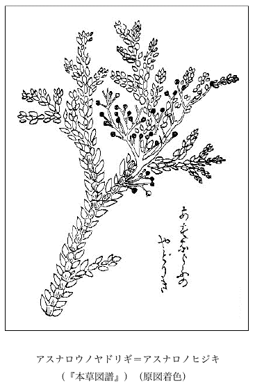
アスナロウノヤドリギ＝アスナロノヒジキ
（『本草図譜』）（原図着色）
（『本草図譜』）（原図着色）
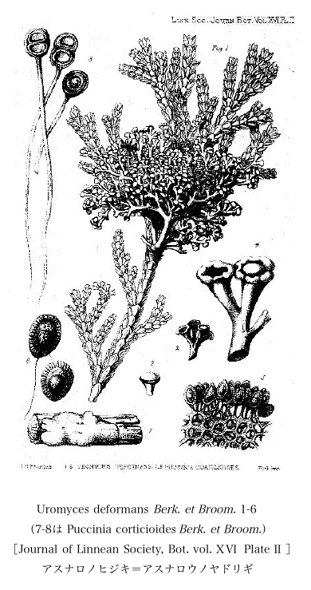
Uromyces deformans Berk. et Broom. 1-6（7-8は Puccinia corticioides Berk. et Broom.）［Journal of Linnean Society, Bot. vol. 
 Plate
Plate  ］
］
アスナロノヒジキ＝アスナロウノヤドリギ
Plate ］アスナロノヒジキ＝アスナロウノヤドリギ
理学博士
君は作州津山の生れで、松平家の臣であった。明治三十九年（1906）七月に東京帝国大学理学部植物科を卒業し、直ちに日本の菌類を研究する途を辿っていた。その間洋行もし、内外多くの文献も集め、また実地に菌類標本も蒐集して研究の基礎を築いた。今はこれらの書籍、標本はみな遺愛品となって遺るに至ったが、遺族の方はこれを日本科学博物館に献納したと聞いた。私は斯学のためまた博士生前の努力のため、ひとえにそれを安全に保存せられんことを切望する次第である。
同君は自ら写生図を描くことが巧みであったので、他の図工を煩わすに及ばす、みな自分で彩筆を振った。書肆が競って中等学校の植物教科書を出版した華やかな時代には、同君に嘱して菌類の着色図を描いてもらいその書中を飾ったものだ。甲の教科書にも乙の教科書にもキノコの着色図版といえば、後にも先きにも川村君の腕を振う独壇場であった。
君には二、三の優秀な菌類図書が既刊せられてはいるが、その多年にわたって自身に写生してためたものをまとめて一書となし、まず同君最後の作として東京本郷の南江堂でこれを印刷に付し、ヤット出来上がった刹那、昭和二十年の戦火で不幸にもそれが灰燼となって烏有に帰した。まことに残念至極なことで、確かに学界の大損失であるといえる。
川村君は燃ゆる心を以て再挙を図っていた。幸いにその原稿の原図が戦火を免かれ、安全に残ったことを同君の書信で知ったので、私はその不幸中の幸運を祝福し、右菌類図説の再発行を祈っていた。
そのうち昭和二十年八月十五日に終戦になったので、程もなく同君は山梨県東八代郡花鳥村竹居の疎開地から無事に都下滝野川区上中里十一番地の自宅へ還った。が、間もなく天、同君に幸いせずついに上に記したように、不幸にして不帰の客となった。
同君は晩年には大いに菌類を研究して新種へ命名し、世に発表するような仕事には手を出さなく、もっぱら従来研究したものを守り、それをまとめて整理し世に公にすることに腐心せられていた。とにかく日本で晨星もただならざるほど少ない菌学者の一人を喪ったことはまことに遺憾の至りである。まだ死ぬほどの老齢でもなかったが、どうも天命は致し方もないものだ。
同君と私とは、同君が大学在学当時以来すこぶる眤懇の間であったので、突如として同君の訃音をきいたときは、殊に哀愁の感を禁じ得なかった。
日本の草や木の名は一切カナで書けばそれでなんら差し支えなく、今日ではそうすることがかえって合理的でかつ便利でかつ時勢にも適している。マツはマツ、スギはスギ、サクラはサクラ、イネはイネ、ムギはムギ、ダイコンはダイコン、カブはカブ、ナスはナス、ネギはネギ、キビはキビ、ジャガイモ［＃「ジャガイモ」は底本では「シャガイモ」］はジャガイモ、キャベツはキャベツ等々でよろしい。なにも松、杉、桜、稲、麦、馬鈴薯、甘藍などと面倒臭くわざわざ漢字を使って書く必要はない。元来漢字で書いたものはいわゆる漢名が多く、漢名は中国の名だから、こんな他国の字を用いて我国の植物を書く必要は認めない。ゆえに従来の習慣のように漢字を用うるのはもはや時世後れである。昔はそれでもよかった時代もあったが、今日はもう世の局面が一転し、旧舞台が回って新舞台になっていることを理解していなければならない。東方日出でてなお灯を燃やす愚を演じては物笑いだ。
東京帝国大学理学部植物学教室では、何十年以来植物の日本名はみなカナで書いているが、世間はズット大学より後れて昔の習慣から脱却し得ず、いわゆる古い殻を脱がないのである。それがどれほど日本文化の進歩を妨げているか、まことに寒心の至りに堪えない。また自分の国での立派な名がありながら、他人の国の字でそれを呼ぶとはまことに見下げはてた見識で、また独立心の欠けている話し、これはまるで自己の良心を冒涜し、自分で自分を辱かしめているといわれてもなんとも弁解の言葉はあるまい。ゆえに一日、否な一刻も早くこの卑屈な旧慣を改め、この不見識な旧習から脱却して、現下の時勢に鑑み今日の進歩に後れぬように努めねばならないが、しかし旧態依然たる
この Yucca という属名は元来トウダイグサ科の Manihot（すなわちその肉根から Tapioca, Cassava, Macaroni が製せられる）に対する Yucca という土名であるのだが、それを昔 Gerarde という学者が今の植物と間違えたのであるといわれる。そしてその種名の gloriosa は noble で崇高すなわち気高い意味で、それはこの植物を賞讃したものである。
本品は強壮な常緑多年生の硬質植物で、茎は粗大で短く、あまり高くならない。深緑色を呈した葉は強質であたかも銃剣の状をなし、多数に叢出して幅がやや広く、その形は披針形で葉末は鋭い刺尖を呈している。そして葉心から太い花軸を立てて大なる花穂を挺出し、六花蓋片の白花を群着する。雄
この男ランが今、日本国会議事堂の前庭に列をなして沢山に栽っていてすこぶる勇壮な装飾となっている。すなわちこれが偶然にも国会の庭前に列植せられているのが幸いで、私はこれは議員諸君が熱意をもって国政を議するとき、我が日本のために男らしく尽すという表徴植物たらしめたいと思っている。私はこの男ランの名を無意義に了らしめぬように議員諸君に懇願してやまない。そして議員諸君が登院のさいには、是非とも右の意味で必ず燃ゆる心の一暼をこの男ランの上に注がれんことを切望する。
ここに別に君ヶ代蘭（私の命名）という同属の一種があって、植物園にはもとより、今諸処の人家の庭にも見られるのが、この種の葉は上の男ランとは違い、その葉叢生していて狭長厚質な緑葉が四方に垂れている。ずっと以前に小石川植物園ではこの品を Yucca gloriosa L. だと思っていた。その時分に本品に対して君ヶ代ランの和名（私の命名）が出来た。しかるにこれはじつは Yucca gloriosa L. ではなくて Yucca recurvifolia Salisb.（＝Yucca gloriosa L. var. recurvifolia Engelm.）の学名のものであることが後に判った。そしてこれもまた北米フロリダ州の原産である。しかしその和名はそのままにしておいた。
ついでに日本へ来ている Yucca
盗賊を防ぐので思い出したのは、ジャケツイバラを塀の背に這わすことだ。これは最も有効な植物利用の防盗策であると信ずる。あの逆に曲がっている無数の鉤刺は強く固く、この鋭い鉤刺には何物も敵し難く煩わしくよく引っかかりけっして脱することが出来ない。そして冬月その葉の小葉は落ち去ってもなお鉤刺を
上に記した土佐高知の今井貞吉君は今は疾くに故人となったが、同君は多識なうえにすこぶる器用でかつ多趣味な人で、よくいろいろのことに通じていた。その中でも特に古銭に精しく斯界での大家であった。『古泉大全』と題する大著があって、その書中の古銭図は、もし間違いがあっては正鵠を失するといって、みな自身で手を下して丁寧正確に彫刻し、その書の印刷もまた活版印刷機を室内に用意し、下女などに手伝わせて自家の座敷、畳の上で印刷したものである。後ち東京の守田宝丹（下谷池ノ端、宝丹本舗の主人）が編した古泉の著書にも大分今井君がその面倒をみたものであった。同君はまた日本全国郵便局の消印ある二銭の郵便切手（赤色）を集めていた。中にはすでに廃局になった郵便局の消印あるものまでもみな洩らさずにことごとく集めていた。これは先ず類をみないなかなか凝った趣味的蒐集である。
私はよく高知付近の植物産地を同君からきいたことがあって、今もそれを書き付けたものが手許に残っている。
その時分同君の庭に龍眼樹の盆栽があって、その実を着けた写真が、これも同君からもらって今も所蔵している。これが土佐高知で実を結んだのは珍らしいことであるが、冬はキット
世間ではよく中国の椿の字と、日本での椿の字とを混同していて明瞭を欠いている場合が少なくない。つまりその椿の字を二つに使い別けすべき根本知識が欠けているから、そんなアヤフヤしたことになるのである。
ツバキによく椿の字が書いてあるのは誰でも知っているが、この場合はけっして中国の椿ではない。ゆえにこの中国の椿と日本のツバキの椿とが同字であると思ったら、それは大きな見当違いである。これはたとえその字体は全く同じでも、もとより同字ではないからである。
中国の椿の場合はその字音は普通チン（丑倫切）で、その植物はかのいわゆるチャンチンを指している。が、椿の字が一朝ツバキとなると、けっしてチンではないのである。そしてこのツバキの場合は和字、すなわち和製（日本製）の文字でそれをツバキと訓ませたものである。それはツバキは春盛んに花が咲くので、それで木扁に春を書いた椿の字を古人がつくったもんだ。
ハギとしてある萩の字も和製字で、これは秋に盛んに花がひらくので、それで艸冠りに秋の字を書いた訳で、中国にある本来の萩の字ではない。この中国の萩は蒿（ヨモギの類）であると字典にあってハギとは何の関係もない。すなわちこれは神前に供えるからサカキに対しての榊をつくったのと同筆法である。
ノイバラ（Rosa multiflora Thunb.）の実は小形で小枝端に簇集して着いていて、秋に赤熟する。採ってこれを薬用とするがその名を
明の時代の学者である
私はこの営星という星が解らなかったので、先きにこれを斬界の権威
頃日友人の理学士（東大理学部、植物学出身）恩田経介君から次の書信を落手し、この営星について同君の披瀝せる見解を知ることが出来たので、ここに君の書信（昭和二十一年八月二十一日発信）の全文を披露し紹介する。
先頃参上いたしました節、ノイバラの実を営実というが、営実とは星の名から由来したものだが、営星とは、何星にあたるか、分らないとのお話を承りました、それを想い出して只今本草綱目を見ましたら
………如営星故謂之営実
とあり、営星の如くとあるから営星は紅色の星だろうと想像し、紅い星は火星だろうと見当をつけ、火星は支那では何というかと調べて見ましたところ、 惑（ケイコク、よくケイワクと誤読するものと言海にも国語大字典にもあります）［牧野いう、惑は元来漢音がコク、呉音がヲクで同音の或という字と同じくもとよりワクという字音はないのだが、我国昔からの習慣音としてこれをワクといっている。ゆえに迷惑、惑溺、惑乱、惑星は実はメイコク、コクデキ、コクラン、コクセイが本当だけれど、今これをメイワク、ワクデキ、ワクラン、ワクセイといわないと世間に通じない。また或問もワクモンとしないとコクモンでは同様通じない。またクキの茎には本来ケイという字音はなく、漢音はカウ、呉音はギヤウだけれど、今世間では日本在来の習慣に従って通常ケイと呼んでいる始末だ］というのだとあります。支那の学生辞典にも「
惑（ケイコク、よくケイワクと誤読するものと言海にも国語大字典にもあります）［牧野いう、惑は元来漢音がコク、呉音がヲクで同音の或という字と同じくもとよりワクという字音はないのだが、我国昔からの習慣音としてこれをワクといっている。ゆえに迷惑、惑溺、惑乱、惑星は実はメイコク、コクデキ、コクラン、コクセイが本当だけれど、今これをメイワク、ワクデキ、ワクラン、ワクセイといわないと世間に通じない。また或問もワクモンとしないとコクモンでは同様通じない。またクキの茎には本来ケイという字音はなく、漢音はカウ、呉音はギヤウだけれど、今世間では日本在来の習慣に従って通常ケイと呼んでいる始末だ］というのだとあります。支那の学生辞典にも「惑 行星名即火星也」とあり、日本の模範英和辞典にも Mars の訳に惑、火星とあります。それでの字を康熙字典 で見ますとのところに、惑、星名………察剛気以処、惑亦作営とあり、営のところには、営与通、惑星名亦作営とありました、それで星と営星とは同じもので何れも火星のことだとわかりました、猶お漢和大辞典（小柳司気多）の惑のところに熟字の例として星、営惑というのがあがっています。
以上のものだけでも私の想像した営星は紅い星だろう、紅いのは火星だろうから営星とは火星のことだろうということが中ったような気がしたします。「営即営星は惑即火星なり」としてはいかがでしょう
………如営星故謂之営実
とあり、営星の如くとあるから営星は紅色の星だろうと想像し、紅い星は火星だろうと見当をつけ、火星は支那では何というかと調べて見ましたところ、
惑（ケイコク、よくケイワクと誤読するものと言海にも国語大字典にもあります）［牧野いう、惑は元来漢音がコク、呉音がヲクで同音の或という字と同じくもとよりワクという字音はないのだが、我国昔からの習慣音としてこれをワクといっている。ゆえに迷惑、惑溺、惑乱、惑星は実はメイコク、コクデキ、コクラン、コクセイが本当だけれど、今これをメイワク、ワクデキ、ワクラン、ワクセイといわないと世間に通じない。また或問もワクモンとしないとコクモンでは同様通じない。またクキの茎には本来ケイという字音はなく、漢音はカウ、呉音はギヤウだけれど、今世間では日本在来の習慣に従って通常ケイと呼んでいる始末だ］というのだとあります。支那の学生辞典にも「惑惑、火星とあります。それでの字をのところに、惑、星名………察剛気以処、惑亦作営とあり、営のところには、営与通、惑星名亦作営とありました、それで星と営星とは同じもので何れも火星のことだとわかりました、猶お漢和大辞典（小柳司気多）の惑のところに熟字の例として星、営惑というのがあがっています。以上のものだけでも私の想像した営星は紅い星だろう、紅いのは火星だろうから営星とは火星のことだろうということが中ったような気がしたします。「営即営星は
惑即火星なり」としてはいかがでしょうこれはまことに啓蒙の文であるのみならず、あまつさえ同君快諾の下にこの拙著のページを飾り得たことを欣幸とする次第だ。
ふるくから人口に膾炙した俚謡に「
私は先きにこの謡を科学的に批評してみた。すなわちそれは昭和八年（1933）十一月に、東京の春陽堂で発行した『本草』第十六号の誌上であった。
全体アヤメにはじつは昔のと今のとの二つの植物があるので、この謡のアヤメがぐらついているところを探偵し、目を光らかした私の筆先きにチョッと来いと捕えられて、初の法廷でその黒白が裁判せられた。その判決によると、この謡は無罪とは行かなかった。しかしこれまで久しい年月の間これを摘発してその欠点を暴露せしめた人はなかったが、それの初任の裁判官は私であった。
この謡の中にあるアヤメは元来何を指しているのかというと、それはこれまで皆の衆が思っているようにアヤメ科なる Iris

君は三夜 の三日月さまよ、宵にちらりと見たばかり
恋にこがれて鳴く蝉よりも、鳴かぬ螢が身を焦がす
恋の痴話文 鼠に引かれ、鼠捕るよな猫欲しや
染めて悔しい藍紫も、元との白ら地がわしや恋ひし
日暮れがたにはたゞ茫然 と、空を眺めて涙ぐむ
行くも帰るも忍ぶの乱だれ、限り知られぬ我が思ひ
余り辛さに出て山見れば、雲の懸からぬ山はない
恋にこがれて鳴く蝉よりも、鳴かぬ螢が身を焦がす
恋の
染めて悔しい藍紫も、元との白ら地がわしや恋ひし
日暮れがたにはたゞ
行くも帰るも忍ぶの乱だれ、限り知られぬ我が思ひ
余り辛さに出て山見れば、雲の懸からぬ山はない
はじめに出した「潮来出島の真菰の中であやめ咲くとはしほらしや」の中にある
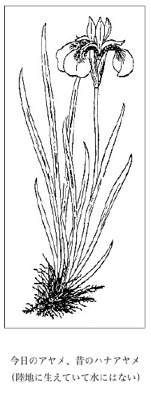
今日のアヤメ、昔のハナアヤメ（陸地に生えていて水にはない）
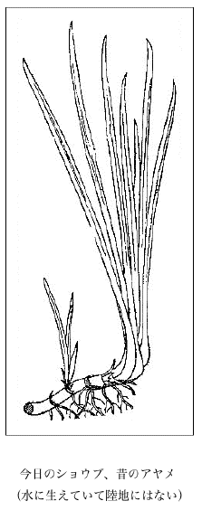
今日のショウブ、昔のアヤメ
（水に生えていて陸地にはない）
（水に生えていて陸地にはない）
マクワウリは真桑瓜と書く。この真桑瓜は美濃本巣郡真桑村の名産で、昔からその名が高く、それでこの瓜をマクワウリと呼ぶようになって今日に及んでいる。またこの瓜は無論諸国につくられるので多少品変わりのものも出来て、中に谷川ウリ、ボンデンウリ（タマゴウリ）、田村ウリ、ヒメウリ、ネズミウリ、アミメマクワ（新称、瓜長楕円形緑色の皮に密に網目がある）などがある。またギンマクワウリすなわちギンマクワというものもあれば、またキンマクワウリと呼ぶものもある。
この時分すなわち徳川時代から明治初年へかけた頃における普通常品のマクワウリはここに掲げた図にあるように枕形をした楕円形のもので、長さ四寸ないし六、七寸内外、径三寸ばかりもあり、初めは緑色であるが熟すると黄色を帯び皮は厚かった。昔は単にウリと称えまたホソジともいった。またアマウリともアジウリとも呼んだ。また土佐ではマウリといっていたが、それはマクワウリの略せられたものである。そしてマクワウリの学名は Cucumis Melo L. var. Makuwa Makino である。
前に書いた古名のホソチは
マクワウリの漢名は
シロウリ（越瓜）、ツケウリはみなマクワウリの変種である。これらは親に似ず甜くないから、菜果の方へ回されている。ここに面白いことはこのシロウリの学名を初め Cucumis Conomon Thunb. といった。この種名の Conomon すなわちコノモンは香ノ物であるが、これは命名者ツューンベリが奈良漬けを香ノ物と思ってそう書いたものだ。今この学名は Cucumis Melo L. var. Conomon Makino と改称せられている。そしてこのシロウリは俗に Oriental Pickling Melon と呼ばれる。
ナシウリ（すなわち梨瓜の意）というものがある。これもマクワウリの変種で Cucumis Melo L. var. albidus Makino の学名を有する。また市場に出ているいわゆるメロンもまた同じく Cucumis Melo L. の変種である。その果皮すなわち膚に網の眼のあるものを網メロン、または網ノ眼メロン、または

「駒の渡りの瓜作り、瓜を人にとられじと、守る夜あまたになりぬれば、瓜を枕につい寝たり」という今様歌がある、瓜を枕に野天の瓜畑で寝た風流はまことに羨ましい。
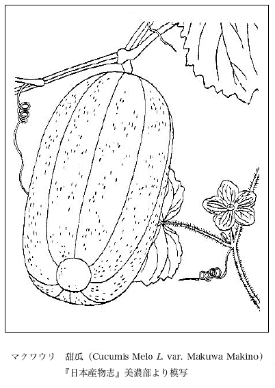
マクワウリ 甜瓜（Cucumis Melo L. var. Makuwa Makino）
『日本産物志』美濃部より模写
『日本産物志』美濃部より模写
昭和二十一年八月十八日友人石井勇義君来訪、一の珍瓜を恵まれた。その瓜は円いものを横に半分に截った形で、まことに座りがよく、つまり瓜の先きの半分がなくその底面が広く浅くなってその縁が低く土堤状を呈して高まっており、底の中央に大きな円形の花の痕があって浅く擂鉢状をなしている。瓜の形は長さより横幅が広く、底の縁は低い十鈍耳をなしている。瓜の色は鮮かな黄色で大小不斉な緑色の斑点が疎らに散布せられており、瓜の膚は固くかつ極めて滑沢である。そして瓜の質はかなり実しておって果実は硬く、むしろ粉質様でその味は甘くなく、種子ははなはだ小形である。
この瓜は俗に Yellow Custard Marrow と呼ぶものでもとより食用にはならなく、畢竟お飾り瓜で観て楽しむものである。そしてこれは多分 Cucurbita Pepo L. 種中の一変種ではないかと思われる。しかしこの最も模範的のものは、冠の縁の分耳がもっと反りくりかえっている。
この瓜の茎は蔓をなさずに叢生してる。葉は割合に大形で深く分裂しその色は鮮緑である。
ナデシコ科のセンノウ属に深山生宿根草本なるセンジュガンピと呼ぶものがある。草全体が緑色で柔かく、茎は痩せ長く高さおよそ一尺ないし一尺半ばかりもあって直立し、葉は披針形で対生し、梢に疎なる
私は鈍臭くてこれまでこれをセンジュガンピというそのセンジュの意味が解せられなかった。ゆえに私の『牧野日本植物図鑑』にも「和名ノせんじゅがんぴハ其意不明ナリ」と書いてある。
昭和二十一年八月十九日に来訪せられた伊藤
右の千手崎 は延暦三年四月に勝道上人 が湖上［中禅寺湖の］で黄金の千光眼 の影向 を拝し玉ひしゆゑ爰に千手大士を創建 し玉ひ補陀楽山千手院 と名付玉ふたといふことである。
前述拙著『牧野日本植物図鑑』せんじがんぴの文末「せんじゅハ其意味不明ナリ」を取り消し、今これを「野州日光山ノ中禅寺湖畔ナル千手崎ニ産スルヨリ云ヘリ」と訂正する。
世に
『
『
宝永四年（1707）出版の『
宝永六年（1709）発行の
『
『
筑波集連歌
物の名も所によりてかわりけり 難波の芦はいせのはま荻 救済法師
又按ずるに芦を荻といふ事至て上古にはいづくにもいひし事也此国にかぎらず詩作などには物の名も所によりてかわりけり 難波の芦はいせのはま荻 救済法師
万葉
神風や伊勢の浜荻折ふせて旅寝やすらん荒き浜辺に 読人不知」
と書いてある。神風や伊勢の浜荻折ふせて旅寝やすらん荒き浜辺に 読人不知」
私は先年この
右地に繁茂しているいわゆる浜荻は、なんら普通のアシすなわちヨシ（Phragmites communis Trin.＝Arundo Phragmites L.）と異なった種類のものではない。その浜荻の生えている場所は今は水田の一部となっているが、昔は無論この辺一帯が広い蘆原であったことが想像に難くない。
浜荻はアシすなわち蘆のふるい別名で、今日ではこの名は既にすたれて、ただ書物の中に残っているだけとなった。
アシはアシが本名であるが、これを悪しに擬し、ヨシを善しに通わせ縁起を担いでそういったもんだ。そしてこのアシの繁茂している原をばアシハラとはいわずに普通ヨシハラと呼んでいる。かの東京で遊廓のあった地を吉原と呼んでいたが、そこはもとヨシの生えていた田圃であった。
アシに対する中国の名にはまず三つある。すなわちアシの初生のもの、すなわち食うべき蘆筍の場合のものを葭といい、なお十分に秀でず嫩い時を蘆といい、十分に成長したものを葦といい、葦はすなわち偉大を意味するといわれる。
『
 水に投じ葉開けば其人無事也
水に投じ葉開けば其人無事也と書いてある。
貝原益軒の『
万年松 一名ハ玉柏本草苔類及衡嶽志 ニノセタリ国俗マンネングサト云鞍馬高野山所々ニアリトリテ後数年カレズ故ニ名ヅク
とある。
万年松（玉柏ノ一名ナリ） 玉柏ハ日光ノ万年グサ一名ビロウドスギト云石松ノ草立ナリ此ニ説ク形状ハ高野ノ万年グサ物理小識ノ千年松ナリ諸山幽谷ニ生ズ高野ヘ至モノ必ラズ釆 帰ル山下ニテモ此草ヲウル其状苔ノ如シ高一寸許葉スギゴケノ如シ数年過タルモ水中ニヒタセバ新ナル如シ
と述べてある。
まんねんぐさ 玉柏 五遂 千年柏 万年松 俗云万年草 按ズルニ衡嶽志ニ謂ユル万年松ノ説亦粗ボ右ト同ジ紀州吉野高野ノ深谷石上多ク之レアリ長サ二寸許枝無クシテ梢ニ葉アリテ松ノ苗ニ似タリ好事 ノ者之レヲ採テ鏡ノ奩 ［牧野いう、奩ハ字音レン、鏡匣 である］ニ蔵メテ云ク霊草ナリ行人ノ消息 ヲ知ラント欲セバ之レヲ水［牧野いう、は字音ワン、鉢、椀、皿である］ニ投ジテ之レヲトフ葉開ケバ即チ其人存シ凋 バ即チ人亡キ也ト此言大ニ笑フベシ性水ヲ澆ゲバ能ク活スルコトヲ知ラザレバナリ
水［牧野いう、は字音ワン、鉢、椀、皿である］ニ投ジテ之レヲトフ葉開ケバ即チ其人存シと書いてある。
次に享保十九年（1734）刊行の
とある。
次に
又別ニ一種高野ノマンネングサト呼者アリ苔ノ類ナリ根ハ蔓ニシテ長ク地上ニ延ク処処ニ茎立テ地衣 ノ如キ細葉簇生ス深緑色ナリ採リ貯ヘ久シクシテ乾キタル者水ニ浸セバ便チ緑ニ反リ生ノ如シ是物理小識ノ千年松ナリ
と述べている。
また『
万年草
古老伝に此草は当山の霊草にて遼遠に在て厥死活弁じがたきをば此草を水盆に浮るに生者なれば青翠の色を含み若没者なれば萎めるまゝなりとぞ今現に検するに御廟の辺及三山の際に蔓生す毎年夏中是を摘みて諸州有信の族に施与の料とせり其長四五寸に過ぎず色青苔の如し按ずるに後成恩寺関白兼良 公の尺素往来 に雑草木を載て石菖蒲、獅子鬚、一夏草、万年草、金徽草、吉祥草といへり爾者此草当山のみ生茂するにもあらず和漢三才図会に本草綱目云玉柏生石上如松高五六寸紫花人皆置盆中養数年不死呼為千年柏万年松即石松之小者也（中略）五雑組 云楚中有万年松長二寸許葉似側栢蔵篋笥中或夾冊子内経歳不枯取置沙土中以水澆之俄頃復活或人云是老苔変成者然苔無茎根衡嶽志所謂万年松之説亦粗与右同紀州高野深谷石上多有之長二寸許無枝而梢有葉似松苗［牧野いう、此辺『倭漢三才図会』の書抜きだ］といひ和語本草にも玉柏石松を載たれども其味のみを弁じて貌姿を論せず良安 本草綱目の万年松を万年草として当山万年草に霊異あることを草性を知らずといへるは嗚呼の論のみ［牧野いう、『紀伊続風土紀』の著者の此言かえって嗚呼の論のみだ且万年草を霊草と云う笑うべきの至りである］彼万年松は紫花あり此万年草花なし爾者雑組衡嶽志にいふ万年松は別の草ならん尺素往来にいふ万年草は当山の霊草ならん又当山にても当時蔓延滋茂せるは彼万年松の類にて右老伝の霊草は御廟瑞籬の内に希に数茎を得といふ説もあれば尚其由を尋ぬべし
古老伝に此草は当山の霊草にて遼遠に在て厥死活弁じがたきをば此草を水盆に浮るに生者なれば青翠の色を含み若没者なれば萎めるまゝなりとぞ今現に検するに御廟の辺及三山の際に蔓生す毎年夏中是を摘みて諸州有信の族に施与の料とせり其長四五寸に過ぎず色青苔の如し按ずるに後成恩寺関白
また同書物産の部は
高野山大師の廟の辺及三山の際に蔓生す乾けるものを水中に投ずれば忽蒼翠に復す故に俗間収め貯へて旅行の安否を占ふ
この高野のマンネンソウは蘚類の一種で Climacium japonicum Lindb. の学名を有するもので、国内諸州の深山樹下の地に群生している。そして高いものは三寸ほどもある。
ズット以前のことであるが、すこぶる頭の働いた人があって、このコウヤノマンネングサを集め、その乾いたものを生きたときのように水で復形させ、これを青緑色の染粉で色を着け、これを一束ねずつ小さい盆栽とし、それを担って諸国を売り歩き大いに金を儲けたことがあった。そのときその行商人の口上はなんといったか今は忘れた。
近代の学者は時とすると、この草をコウヤノマンネンゴケとしてあるが、じつはこれはコウヤノマンネングサが本当である。またコウヤノマンネンソウとしたものもある。
日本では中国の
いま通称している Laminaria のコンブ（non 昆布）の本当の漢名、すなわち本名は海帯であって、今日中国ではこれを
今一般にいっているコンブは既に前にも書いたように、昔はこれをヒロメともエビスメとも名づけていた。もし今日誤称せられているコンブの名を一般人が間違いであると気づいて、その呼び名を改訂し正しきにかえさねばならんという気運が万一にも向い来たことがあったとすれば、これを右ようにヒロメ（幅広い海藻の意）と呼べば古名復活にもなって
今海藻学を専門としている学者でさえも、昆布をコンブと呼んでいるこの間違いを清算することが出来ず、その著わされた海藻の書物には、みな一つとしてこの誤謬を犯していないものはない。どうも病が
声を大にし四方を
近江の国伊吹山下の里人が常に採って食用にしているといわれる右のマアザミの実物を知りかつその形状を見たく、よって当時京都大学に在学中の遠藤善之君を煩わし、実地についてそのマアザミを捜索してもらった。同君は親切にも私のためにわざわざ京都から二回も伊吹山方面へ出掛けて探査し、時にそれが伊吹山で見つからないので更に進んで美濃方面に行きついに伊吹山裏の方の山地においてこれを見出し、地元の人にそのマアザミの方言をも確かめ、そしてそこで採集した材料を遠く東京へ携帯して私に恵まれた。私は嬉しくもその渇望していた生本現物を手にしこれを精査するを得、初めてそのマアザミの形態を詳悉することが出来、大いに満足してこのうえもなく悦び、もってひとえに遠藤君の厚意を深謝している次第である。
マアザミとは
サワアザミに右のようにかつて我が本草学者があてている
文化四年（1807）出版の
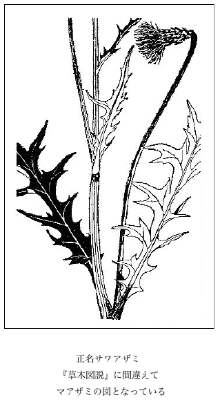
正名サワアザミ
『草木図説』に間違えてマアザミの図となっている
『草木図説』に間違えてマアザミの図となっている
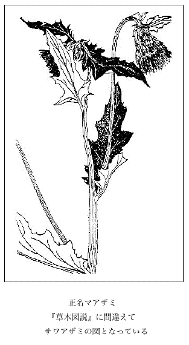
正名マアザミ
『草木図説』に間違えてサワアザミの図となっている
『草木図説』に間違えてサワアザミの図となっている
ムクゲすなわち木槿をアサガオと呼びはじめたのはそもそもいつ頃であって、そしてなぜまたそういったのであろうか。しかしこの名は正しいとはいえないのみならず、それは確かに間違っているのである。
一体ムクゲの花は早朝に開き一日咲き通し、やがて晩に凋んで落ちる一日花で、朝から晩まで開き通しである。この点からみても朝顔の名は不穏当なものであるといえる。槿花一朝の栄とはいうけれど、この花は朝ばかりの栄ではなくて終日の栄である。すなわち槿花一日の栄だといわなければその花の実際とは合致しない。かくムクゲの花は前記の通り一日咲き通しで一日顔だから、これを朝顔というのはすこぶる当を得ていない。
人によっては『万葉集』にある「朝顔は朝露負ひて咲くといへど、
私はここに断案を下してムクゲをアサガオというのは大間違いであると裁決する。不服なれば異議を申し立てよだ。不満があれば控訴でもせよだ。もしも私が敗北したら罰金を出すくらいの雅量はある。もしも金が足りなきゃ七ツ屋へ行き七、八おいて拵える。
このムクゲは落葉灌木で元来日本の固有産ではないが、今はあまねく人家に花木として栽えられ、また
ムクゲは木槿の音転である。なおこれにはモクゲ、モッキ、ハチス、キハチス、キバチ、ボンテンカなどの方言がある。
蕣の字音はシュンである。世間往々よくこの字をかの花を賞する Pharbitis Nil Choisy のアサガオだとして用いる人があるが、それはもとより間違いで、この蕣は木槿すなわちムクゲの一名であり、かの『
万葉の歌にハネズ（唐棣花）という植物が詠みこまれてある。すなわち『万葉集』巻四の「念はじと曰ひてしものを
ムクゲの葉は粘汁質である。私の子供の時分によくこれを小桶の中の水に揉んでその粘汁を水に出し、油屋の真似をして遊んだもんだ。
昔から我国の学者は山野に多い食用品のフキを千余年の前から永い間中国の
 冬だと思い違いしていた。ゆえに種々の書物にもフキを冬と書いてある。ところが明治になって初めて冬はフキではないことが分ったが、それでもまだなお今日フキを冬であるとしている人を見受けることがまれではない。殊に俳人などは旧株を墨守して移ることを知らない迂遠を演じて平気でいるのは世の中の進歩を悟らぬものだ。
冬だと思い違いしていた。ゆえに種々の書物にもフキを冬と書いてある。ところが明治になって初めて冬はフキではないことが分ったが、それでもまだなお今日フキを冬であるとしている人を見受けることがまれではない。殊に俳人などは旧株を墨守して移ることを知らない迂遠を演じて平気でいるのは世の中の進歩を悟らぬものだ。フキは僧
フキはキク科に属していて Petasites japonicus Miq. なる学名を有し、我が日本の特産で中国にはないから、したがって中国の名はない。
冬は同じくキク科で Tussilago Farfara L. の学名を有し、これは中国には見られども絶えて我国には産しない。そして一度もその生本が日本に来たことがない。これは盆栽として最も好適なもので、春早くから数端にタンポポ様の黄花が日を受けて咲くので、私はこの和名をフキタンポポとしてみた。この
冬は宿根生で、早くその株から出た花がおわると次いで葉が出る。葉は葉柄を冬は早春に雪がまだ残っているうちに早くもその氷雪を凌いで花が出る。「ハ至ルナリ、冬ニ至テ花サクユエ冬ト云ウ」と中国の学者はいっている。冬にはなお凍、顆冬、鑚冬などの別名がある。日本のフキを蕗と書くのもまた間違っている。フキには漢名はないから仮名でフキと書くよりほか途はない。フキでよろしい。これがすなわち日本の名なのである。
昔から
我邦従来の習慣を破って薯蕷がヤマノイモではないことを絶叫したのは私であって、以前その委曲を発表したのは昭和二年で、その年の十二月に発行せられた『植物研究雑誌』第四巻第六号の誌上においてであった。題は「やまのいもハ薯蕷デモ山薬デモナイ」であって詳しく、その
このナガイモにはその根に種々な変わり品があって圃につくられている。ヤマトイモ、キネイモ、イチョウイモ、テコイモ、ツクネイモ、トロイモなどがそれである。そしてこのナガイモは中国の産ではあるが、また、我国の産でもあって、我国での野生品は往々河畔の地などにこれが見られる。面白いことは、圃につくられているものはみな雌本で雄本は絶えてないことである。これから推してみると、この作物になっているナガイモはもとあるいは中国からその雌本が移入せられたのかも知れない。しかしこの種の本邦野生のものには雌本もあれば雄本もある。
トロロにするにはヤマノイモ（一名ジネンジョウ）の方がまさっている。ナガイモの方には粘力が比較的少なくて劣っている。そしてこのように生のまま食う根は他にはない。クログワイ、オオクログワイは生でも食えるけれど、これはじつは塊茎で真の根ではない。サツマイモは真の根だけれど、それは子供等がいたずらにかじっているくらいで、一般には誰も生ま薯を賞味することはない。
ヤマノイモが鰻になるとはもちろんじつはウソの皮だが、鰻もヤマノイモも共に精力を増す滋養満点の物だから、その両方の一致した滋養能力から考えて、このように名言を作っていったのではなかろうか。書物によると、ヤマノイモの根が山岸のところで露われ出て、水の流れへ浸り込むと、それがたちまち化して鰻になるとまことしやかに書かれている。
ヤマノイモもナガイモも共に蔓上葉腋にいわゆるムカゴ一名ヌカゴすなわち零余子ができる。今これを採り集めて植えると幾らでも新仔苗がはえて繁殖する。またムカゴは無論食用にもなる。
前記のようにナガイモには薯蕷の漢名があるが、ヤマノイモにはそれがない。
Yam という字がある。ロブスチード氏の『英華字典』には大薯と訳してあるが、これは薯と訳すれば宜しく大の字はいらない。このヤムは Dioscorea（薯蕷ノ属）
ヤマノイモの長い
天井うらヌット突き出たヤマノイモ
閻魔の地獄大さわぎなり
これは娑婆でヤマノイモてふ滋養物
聞いて閻魔もニコツキにけり
閻魔の地獄大さわぎなり
これは娑婆でヤマノイモてふ滋養物
聞いて閻魔もニコツキにけり
ニギリタケは Lepiota procera Quel. なる今日の学名、すなわち Agaricus procerus Scop.（種名の procera は丈け高き義）の旧学名を有し、俗に Parasol Mushroom と呼び、広く欧州にも北米にも産する食用菌の一種である。そしてニギリタケとは握り蕈の意であるが、握るにしてはその茎すなわち蕈柄が小さくてあまり握り栄えがしない。それで私はこの菌を武州
上の大正十四年八月当時、私が高山町西校校長野村宗男君に聞いたところは次の通りであった。
にぎりたけ（方言）飛騨吉城郡国分 辺（高山町ヨリ二三里程）ノ山地芝草ヲ刈リ積ミタル辺、又ハ麦藁ヲ入レ肥料ニセシ畑ニ生ズル、秋時栗ノ実ノ爆ゼル頃最モ盛ンニ出ル、高サ七、八寸ヨリ大ナルモノハ一尺五寸許モアル、出ヅル頃土人にぎりたけヲ採リニ行クト称シテ赴ク、一本一本独立ニ生エル、茎ノ太サ両指ニテ握ル程ニテ、全体白色、水気少ナク、茎頭ワタワタシク成リ居ル、縦ニ裂イテ焼キ醤油ノ付ケ焼キニシテ食フヲ最モ美味トスル、多少ノ香アリ、又汁ノ身トシ又煮付ケトスル
昭和三年の秋、私は陸奥の国恐レ山の麓の林中で大きく傘（蓋）を展げたカラカサダケすなわちニギリタケ数個を見つけ、それを持って踊る姿をカメラに収めた。それは青森県営林局ならびに同県下営林署の人々と同行のときであった。今ここにそのときのことを歌った拙作を再録してみると次の通り。
恐れ山から時雨 りよとまゝよ、両手にかざす菌傘 、用心すれば雨は来で、光りさし込む森の中、やるせないまゝ傘ふって、踊って見せる松のかげ、その腰つきのおかしさに、森よりもるゝ笑い声、道行く人は何事と、のぞいて見れば此の姿。
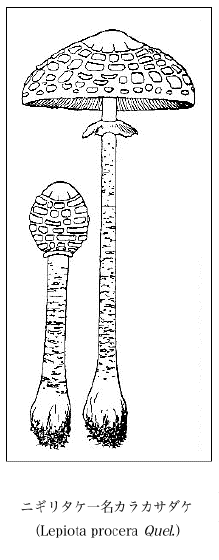
ニギリタケ一名カラカサダケ
（Lepiota procera Quel.）
（Lepiota procera Quel.）
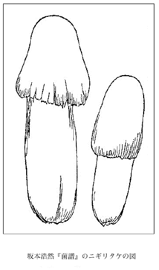
坂本浩然『菌譜』のニギリタケの図
我国従来の学者はインドのパンヤ（Panja）を木棉樹すなわち斑枝花（Bombax Ceiba Burm.＝Bombax malabaricum DC.）だと思い、書物にもそう書いてあるのだが、しかしこのインドのパンヤはそれではなく、これはその近縁樹のインドワタノキ（インド棉ノ木）一名カボック樹（Eriodendron anfractuosum DC.＝Bombax pentandrum L.）のことである。従来我国の学者はインドのこの樹をよく知らず、ただ相類し、棉の出る実も相似ているから、多少斑枝花の知識もあったので、これを間違えたものである。つまり一つを識って二つを識らなかった罪に坐した訳だ。次にさらにこれを判然させてみよう。
○パンヤ
Eriodendron anfractuosum DC.
（＝Ceiba casearia Medic.）
（＝Bombax pentandrum L.）
（＝Ceiba pentandra Gaert.）
（＝Xylon pentandrum O. Kuntze）
（＝Bombax orientale Spreng.）
（＝Eriodendron orientale Steud.）
（＝Eriodendron occidentale Don.）
（＝Bombax guineense Schm. et Thoun.）
Panja; Pania; Panial; Panjabaum.
Kapok; Kapok-tree; Kapokbaum; Ceiba; Pochote.
カボック樹、インド棉ノ木、白木棉
（分布）インド、セイロン、南米、西インド、熱帯アフリカ？
○非パンヤ
（＝Bombax pentandrum L.）
（＝Ceiba pentandra Gaert.）
（＝Xylon pentandrum O. Kuntze）
（＝Bombax orientale Spreng.）
（＝Eriodendron orientale Steud.）
（＝Eriodendron occidentale Don.）
（＝Bombax guineense Schm. et Thoun.）
Panja; Pania; Panial; Panjabaum.
Kapok; Kapok-tree; Kapokbaum; Ceiba; Pochote.
カボック樹、インド棉ノ木、
（分布）インド、セイロン、南米、西インド、熱帯アフリカ？
○非パンヤ
Bombax malabaricum DC.
（＝Salmaria malabarica Schott.）
（＝Bombax ceiba Burm.）
（＝Bombax heptaphylla Cav.）
（＝Gossampinus rubra Ham.）
Cotton tree; Silk cotton tree; Red Silk cotton tree.
木棉、木棉樹、棉、斑枝樹、攀枝花、攀支、斑枝花、海桐皮、吉貝、キワタ、ワタノキ
（分布）インド一般、熱帯東ヒマラヤ、セイロン、ビルマ、ジャワ、スマトラ、琉球（植）
（＝Bombax ceiba Burm.）
（＝Bombax heptaphylla Cav.）
（＝Gossampinus rubra Ham.）
Cotton tree; Silk cotton tree; Red Silk cotton tree.
木棉、木棉樹、棉、斑枝樹、攀枝花、攀支、斑枝花、海桐皮、吉貝、キワタ、ワタノキ
（分布）インド一般、熱帯東ヒマラヤ、セイロン、ビルマ、ジャワ、スマトラ、琉球（植）
右にてインドのパンヤがどの樹にあたっているかが明かによく分るであろう。したがって従来我が学者の誤認もまた一目瞭然であろう。
中国ではこの樹を黄櫨と呼び、北部中国の地には普通に見られる普通の灌木らしい。この黄櫨の黄はその樹の心材が黄色だからである。したがってこれが黄色を染める染料に用いられる。李時珍の『本草綱目』には「木ハ黄ニシテ黄色ヲ染ムベシ」と書いてある。そしてこの材の黄色なのは隣属の Rhus すなわちハゼノキ属のハゼ、ヤマハゼ、ヤマウルシ、ウルシも同様で、いずれも黄色を染めるに足るのである。
日本では昔からこの黄櫨をハゼノキと間違えて、ハゼノキを黄櫨だとしていた。ゆえに
我国ではハゼノキの黄材で染めたものを黄櫨染といっているが、上に述べたように元来黄櫨はハゼノキではないから、本当は黄櫨染の字はあたらない。これはまさにハジ染というべきだ。ハジはハゼの古言であるが、さらにその前の古言はハニシであった。
ついでにいうが、今普通に蝋を採る樹をハゼノキといっているが、本来ハゼノキは別種である。そして右の採蝋樹はよろしくリュウキュウハゼ一名ロウノキ一名トウロウと呼ばねばならないものである。これは昔蝋を採るために琉球から持ち来ったもので、九州に最も多く植えられてある。この種が今往々山に野生しているのは鳥がその種子を分布させたものである。そして琉球へは中国から渡ったもので、畢竟本種は中国の産であって紅包樹と称するが、それは多分この樹が秋になれば最も美麗に紅葉するからであろう。実際この樹の紅葉は見事なもので、これを見ると我庭にも一本欲しいと思う。
雑誌などによくワスレグサ（ヤブカンゾウ）のことを甘草と書いている人があるが、これは全く非で、このカンゾウに対してこの字を使うのはじつは間違いであることを知っていなければならない。これは
萱は元来忘れるという意味の字で、それでその和名がワスレグサすなわち忘レ草となっている。このワスレグサの名は元来日本にはなかったが、萱草の漢名が伝ってから初めて出来た称呼だ。書物によれば中国の風習では何か心配事があって心が憂鬱なとき、この花に対すれば、その憂いを忘れるというので、この草を萱草と呼んだもんだ。そこでまた一つにこれを忘憂草とも称えまた療愁ともいわれる、すなわち療愁とは憂いを癒やす義である。
中国の萱草は一重咲のものが主品である、すなわち学名でいえば Hemerocallis fulva L. である。この種名の fulva は褐黄色の意で、これはその花色に基づいたものである。この品は絶て日本には産しなく、ただ中国のみの特産である。それでこれをシナカンゾウともホンカンゾウともいわれる。上に書いたヤブカンゾウ（一名鬼カンゾウ）はその一変種で八重咲の花を開くが、面白いことにこれは中国ばかりでなく日本にも産する。つまり母種の一重咲のものはひとり中国のみに産し、その変種の八重咲のものが中国と日本とに産する。地質時代の昔の日本がまだアジア大陸に地続きになっていた時分にこの八重咲品のみが日本へ拡がっていて、その後中国と日本との間へ海が出来た後ち今にいたるまでこの八重咲品のみが日本の土地へ遺され、親子生き別れをしたものだ。中国の『
萱草を食用にすることは、日本よりも中国の方が盛んであるようだ。中国の本に「今人多ク採リ二其嫩苗及花ヲ一作シレ※［＃「くさかんむり／俎」、U+8445、179-9］ト食フ」と出て、また「人家園圃ニ多ク種ユ」とも書いてある。また「花、葉芽倶ニ嘉蔬ナリ」ともある。また中国では「京師ノ人食フ二其土中ノ嫩芽ヲ一名ク二扁穿ト一」と述べてあるが、これはすなわち冬中に採る極めて初期の小さい嫩芽である。いつであったか数年前、東京の料理屋でこれを食膳に出したと聞いたことがあったがどこから仕入れたものか。これは通人の口に味う趣味的の珍らしい食品であって、多分少々舌に甘味を感ずるのであろう。おそらく扁穿とは
憂さを忘れるなら何にもワスレグサに限ったことはなく、綺麗な花なら何んでもよい筈だが、中国でたまたま草が乏しい場所であったのか、この大きな萱草の花を撰んで打ち眺めたものであろう。
美しき花を眺むる憂さ晴らし、思い余りし吾れの行く末
美しい花をながめりや憂ひを忘る、それがせめての心やり
忘れぐさ忘れたいもの山々あれど、忘れちゃならない人もある
美しい花をながめりや憂ひを忘る、それがせめての心やり
忘れぐさ忘れたいもの山々あれど、忘れちゃならない人もある
根笹（ネザサ）は何度刈っても幾度刈っても一向に性こりもなく後から後から芽立って来て仕方ないもので、庭でも畑でもじつに困りものの一つである。いったい根笹に限らず竹の類はみな同様である。
なぜそう次ぎから次ぎからと出て来るのか。それは用意された芽が無数にあるからである。すなわちその地下茎（いわゆる鞭根）でも、またそれから岐れた枝でも、さらにまたそれから地上に出た幹枝でも、みなその多くの節には必ず一つずつの芽を持っていて、不断は何年間も眠っているのだが、時いたればたちまち萌出する。だからいくら先きの方、上の方を伐りとっても、すこしもひるまず続々と出で来るので始末におえなく、まことに根強い繁殖の方法をとっているが、つまるところあらかじめ用意された芽が非常に豊富だからである。竹の節には地下部と地上部とを問わず、その節のあらん限りにみな一つずつの芽を用意している、すなわち節が十あれば芽が十、節が百あれば芽が百、また節が千あれば芽が同じく千あるのである。まことにもって力強い竹類笹類ではある。
ほかの竹も同じように、マダケ、ハチク、モウソウチクの地下茎すなわち鞭根には節毎に必ず一つの芽が用意せられてあるが、毎年でる筍は僅かの数しかなく、他の芽はみな眠りこくっている。もしその予備せられてある芽がことごとく萌出したなら無数の筍がノコノコノコノコと出る訳だ。が、しかしその鞭根は年々歳々ほんの少しばかりずつ経済的に筍の小出しをやっているのである。
ヤダケ、メダケなどの稈は、根元からその各節に芽が用意せられてあるが、しかしそれが枝になるのは梢部であって、中途から下には通常枝が出ずにいる。しかるにもし根元の節の芽も一斉にみな芽出って枝となったとすれば、その株元から上枝葉が繁茂してすこぶる欝忽たるものになるに相違ない。
モウソウチクの稈は他と違って中部以下の節には芽の用意がない。
日本にショウブ（Acorus Calamus L. var. asiaticus Pers.）とセキショウ（Acorus gramineus Soland.）との二つがある。これはもとより同属植物ではあるが、無論別種のものであることは誰でも知っているだろう。かく和名でショウブ、セキショウといえば、少しも紛らわしく混雑することもなく、極めて明々瞭々たりであるが、さてそこへ漢名が割りこんで来るとたちまち面倒が起こってきて、是非とも一言を費さねばすまん始末となる。早くこの厄介な漢名を駆逐しないことには、いつまでたっても植物界の騒動は免かれ得ない悩みがある。
ショウブは菖蒲から来た名であるから、それをそのまま菖蒲と書けば問題はなかりそうだが、そうは問屋がゆるさない。普通の人はショウブを菖蒲としているが、これは大変な間違いで菖蒲はけっしてショウブではない。では菖蒲は何か。この菖蒲はセキショウそのものである。そしてショウブは白菖と書かねばそのショウブにはなり得ない。この白菖は一つに泥菖蒲とも水菖蒲ともいわれる。
この白菖であるショウブは昔はアヤメともアヤメグサとも呼んでいてよく歌に詠まれたもんだ。彼の「ほととぎす鳴くや早月のあやめぐさ、あやめも知らぬ恋もするかな」の歌はその代表的なもんだ。今日アヤメというものはアヤメ科の Iris
セキショウはサトイモ科で、それが本当の菖蒲である、すなわち菖蒲はセキショウである。このセキショウの菖蒲を中国人は大いに貴び、書物には縷々とその薬効が述べてある、すなわちその地下茎を服していると骨髄が堅固になり、顔色に光沢が出で、白髪が黒くなり、歯が再び生じ、眼がよく明かになり、音声も朗らかとなり、精神も老いず、そして長生きするとあって、中国人はそう信じているようだ。もし実際こんな効能が菖蒲根にあったとしたら大したもんだが、どうもこれは信用が出来そうもない。
海藻のミルは普通に水松（『本草綱目』水草類）と書いてあるが、果たしてそれがあたっているのかどうかはすこぶる疑わしい。中国の昔の学者の書いた原文ははなはだ簡単で、それが果たしてミルであるのか、じつのところよくは判らないのである。また俗に海松とも書いてあるが、これは中国の昔の学者が「水松、状チ如シレ松ノ釆テ而可シレ食ウ」の文に基づいて製した名であろう。
このミルの学名は前によく Codium mucronatum J. Ag. が使われたが、今日では Codium fragile Hariot（Acanthocodium fragile Sur.）が用いられている。この種名の fragile は「質脆ク破損シ易イ」ことを意味する。本品は純緑色の海藻で、浅い海底の岩に着生し、三寸ないし一尺ばかりの長さがあって両岐的に多数に分枝し、その枝は円柱状で、質は
理学士
理学博士
右遠藤博士の『海産植物学』は明治四十四年（1911）に東京の博文館で発行になった書物だが、今それによると「みるヲ食用ニ供シタルハ本邦ニ在リテハ其由来甚ダ遠キモノノ如ク現今却テ之レヲ用ウルコト少ナシ、箋註倭名類聚抄ニ云フ、海松、見延喜臨時大甞祭図書寮玄番寮民部省主計寮大蔵省宮内省大膳職内膳司主膳監等式、又見賦役令万葉集、云々、之レニテ判ズレバ古ヘハみるヲ朝廷ニ献貢シタリシモノナルベシ、古歌ニモみる、みるぶさ、みるめナド多く詠メリ、又昔ヨリみるめ絞リト称シテ此植物ノ形ヲ衣服ノ模様トナシ、或ハ陶器ノ画等ニモ見ルコト今日ニ至ルモ変ラズ其果シテ孰レノ世ヨリ斯クノ如キコト始マリシヤ明カナラズト雖ドモ少クモ千数百年ノ昔ヨリナルベシ、又此ハ海藻ニシテ美術的紋様ニ用イラルルモノノ唯一ノ例ナリ」、また「みる類ヲ食用ニ供シタルハ往古ヨリ行ハレシモノニシテ弘仁式ニ尾張ノ染海松ヲ正月三日ノ
なお同じく遠藤博士の『日本有用海産植物』（明治三十六年［1903］博文館発行）にはミルの効用として「ミル、ヒラミル等は淡水と日光とに洒すときは白色の羅紗の如くなる之れを調理して食用とすナガミル、タマミル亦此の如くして可なり但し其産額前二者の如く多からざるのみ」と書いてある。
また明治四十三年（1910）博文館発行の妹尾
大正十一年（1922）に東京の書肆内田老鶴圃で発行になった岡村金太郎博士の『趣味から見た海藻と人生』に述べてあるところを抄出してみると、「ミルは今でも少しは食用とし、殊に九州や隠岐の国あたりでは其若いのを喰べる。先年自分は九州の
次に現下我国海藻学のオーソリティー、北海道帝国大学の理学博士山田幸男君からの所報によれば「小生数十年前薩摩の甑島に於てそのスミソアエと致したるものを漁師の家にて馳走になりし事を覚えおり候、又其後これは七八年前かと存候が東京芝、芝園橋付近の銀茶寮とか申す料理屋にて日本料理の献立表に［ミルの吸物］とありしを覚えをり候たゞし此際は惜くも本日は材料が揃わずとの理由とかにて実物を味わずに了い候、これにより少くもスミソあえ及汁のミと致す事はたしかと存じ候尚岡村先生の『海藻と人生』に矢張り九州のスミソアエの事等見えおり候」とあった。
要するにミルの料理としては、三杯酢かあるいは酢味噌和えかが普通一般の食法であることが知られる。
文化元年（1804）出版、
ミルクイという
ミルの語原は不明だといわれているが、私の愚劣な考えでは、それはあるいはビルもしくはビロから転訛したものであろうと思われる。すなわち生鮮なミルを静かに振ってみると弾力があって、ビルビルビロビロとするから、そのビルあるいはビロが音便によってついにミルになったのではなかろうかと想像するが、どんなもんだろうか。
ミル属（Codium）には多くの品種があって、いずれも食用になるのであろう。昭和九年（1934）六月に東京の三省堂で出版した岡田
中国の有名な詩人である
遠ク上レバ二寒山ニ一石径斜ナリ、白雲生ズル処有リ二人家一、
停メテレ車ヲ坐ロニ愛ス楓林ノ晩、霜葉ハ紅ナリレ於ヨリモ二二月ノ花一、
停メテレ車ヲ坐ロニ愛ス楓林ノ晩、霜葉ハ紅ナリレ於ヨリモ二二月ノ花一、
というのがあって、ふるくから普く人口に膾炙している。
諸君御覧の通りこの詩中に楓がある。日本人はこれを Acer すなわち Maple のカエデすなわちモミジであるとして疑わず、日本の詩人はみなそう信じている。しかし
楓はマンサク科に属し Liquidambar formosana Hance の学名を有する落葉喬木である。その葉は枝に互生して三裂し、実は球状で柔刺があり
楓は台湾に多く生じまた中国にも産するが、その他の国には見ない。秋になるとカエデと同様紅葉するが、しかしカエデほど優美ではない。
子楓はその枝条が弱く、よく風に吹かれて揺ぐから楓の字が書いてあるといわれている。そうするとこの樹の和名をカゼカエデとでもしたらどんなもんだろう。いま植物界では楓の字音フウを和名としているが、何んだかフウはフウはして間が抜けたようであまり面白くない。が、もう台湾も中国に還して日本のものではないから、そんな木の和名はどうでもよいワ、イヤそう捨て鉢にいうもんじゃない。小石川植物園には昔御薬園時代かに来た木も今なお現に生きているし、また今日では諸処にあった木も伐られてそれが大いに残り少なにもなっているから、成るべくはその呼び名も好くして愛護してやるべきだ。
この楓は日本には産しないから、これをカエデすなわちモミジとするのは無論非である。日本の詩人はカエデの場合に常にこの楓の字を取り上げるとなるとたちまち詩作の上で支障を生じ大いに困ることだと思う。何んとなれば日本のカエデを表わす一字がないからである。しかるに上に書いたように貝原益軒はカエデに機の一字を用いているが、これはもとより怪しい字面でとても詩作などには用いることは出来ない。
日本の学者は『救荒本草』にある槭樹をカエデにあてているが、これは無論あたっていない。なぜなれば日本のカエデは日本の特産で絶えて中国にはないからである。すなわち中国にないから中国の名がないのが当然だ。そうすると機の字も落第、槭の字も落第、詩人は立往生で死人の如くなるのだ。
また我国の昔の学者はカエデ（蝦手の意）を表わす漢字名として鶏冠木一名鶏頭木の字面を用意したのだが、これは無論漢名すなわち中国名ではない、すなわちそのカエデの葉形が鶏の冠に似ているというので、そこでこの字を書いたものである。
中国の書物にはよく
 蘭蘭と称えるのは今のいわゆる一茎九華と呼ぶ蘭で、子蘭、一名ハ九節蘭、一茎八九花ヲ発ス」（漢文）と書いてあるものである。
蘭蘭と称えるのは今のいわゆる一茎九華と呼ぶ蘭で、子蘭、一名ハ九節蘭、一茎八九花ヲ発ス」（漢文）と書いてあるものである。この一茎九華なる
蘭は中国特産の蘭品である、すなわちいわゆる東洋蘭の一種で Cymbidium scabroserrulatum Makino の学名を有する。我が日本へ中国からその生品が来て愛蘭家はこれを培養している。中国の蘭画の書物にはこの蘭を描いたものが多いところをみると、同国には山地に多く生えている普通な蘭であろう。蘭そのものをかく書くのはどういう意味か。これはその花香にちなんでこのの字を用いたものである。ではそのとは何か。は香草の一種であるから字書にカオリグサと訓ませてはあるが、しかしカオリグサの草名はない。ないのが当り前でこの字書へ訓を付けた人も無論その草を知らなかったからだ。それならその草は何んだ。そのと名づけた草は、クチビルバナ科（唇形科）に属する新称カミメボウキ（神目箒の意）すなわち Ocimum sanctum L. そのもので、古くから中国には栽培せられてあったが日本へは未渡来品である。そしてこの草の原産地は熱帯地で、インド、マレーからオーストラリア、太平洋諸島、西アジアからアラビアへかけて分布していると書物にある。右の
すなわち草は一名ト曰フ」（漢文）とある。薫草すなわち
草は目を明にし涙を止めるといわれるので、それでメボウキすなわち目箒である。目へ埃などが入ったとき、その実を目に入れるとたちまちその実から粘質物を出して目の中の埃を包み出し、目の翳りを医するからである。つまり目の掃除をするのである。雁皮紙をつくる原料植物、すなわちジンチョウゲ科のガンピには明かに二つの種類が厳存する。すなわち一つは単にガンピといい、一つはサクラガンピと称する。しかるに世間に出ている製紙の書物には、大抵このサクラガンピを単にガンピとしてただこの一種だけが挙げられている。しかるに
ガンピ（ナデシコ科の花草であるガンピと同名異物）は元来はこの類の総名で、昔はカニヒと称えたものである。今日ガンピと呼ぶものは関西諸州に産する Wikstroemia sikokiana Franch. et Sav. を指している。この種は山地に生じて高さ二尺内外から一丈ばかりに及ぶ落葉灌木で、その小さい黄色花は小枝頭に攅簇して頭状をなし、花にも葉にも細白毛が多い。そして一つにカミノキ、ヤマカゴ、ヒヨ、シバナワノキ（柴縄ノ木）と呼ばれる。
今一つの種は Wikstroemia pauciflora Franch. et Sav. で関東地方に産し、相模、伊豆方面の山地に生じている。花は淡黄色小形で枝頭に短縮した穂状様の総状花序をなしており、葉には毛がない。これをサクラガンピと称するが、それはその皮質があたかもサクラの樹皮に似ているからである。これにはまた、ヒメガンピ（松村任三）、ミヤマガンピ（同上）、イヌコガンピ（白井光太郎）の名もある。
ガンピにはかくガンピとサクラガンピとの二種類があるのでよくこれを認識しておかねばならない。同属中のキガンピ、コガンピ等の諸種も強いて製紙用の材料とならんとも限らない。このガンピは一つにヤマカゴ、イヌカゴ、イヌガンピ、ノガンピ、ヤマカリヤス、アサヤイト、シラハギ、ヒヨの名がある小灌木だが、茎の繊維は弱い。しかしその根皮の繊維はキガンピと同様割合に強いから共に紙を漉くことが出来るといわれる。学名は Wikstroemia Ganpi Maxim. であるが、この学名がもし前に書いた Wikstroemia sikokiana Franch. et Sav. であるガンピへ付けられてあったら極めて適当であるのだが、惜しいかな製紙用としてほとんど用のないコガンピの名になっているのは情けない。元来 ganpi の種名を用いた Stellera ganpi Sieb. はもともと製紙料となっているガンピの学名としてシーボルトが公にしたもので、それに Ex cortice conficitur charta ob firmitatem laudata（樹皮カラ耐久力アル優秀ナ紙ヲ造ル）の解説が付いている。ところがその後マキシモイッチがこの学名を基として Wikstroemia Ganpi Maxim. の名をつくり、これにコガンピの記載文を付けたもんだから、学名での ganpi の種名がコガンピのもとへ移って、その実際とは合わないことを馴致した結果となっている。
また同科の Daphne
伊豆の
因みに記してみるが有名な南米ジャマイカの土言 Lagetto の植物レース樹、すなわち Lagetta lintearia Lam.（この種名 lintearia はリンネルのようなとの意）は同じくジンチョウゲ科の樹木であるが、その厚さは六センチメートルもある白色の内皮が二十層程な枚数となって同心的にそれを順々に剥がすことが出来、これを拡げるとまるで八重咲の花のようになり、かつその繊維が縦に交錯してその状あたかもレースの状を呈していて、世にも著明なものとなっている。
今日世間でいっているインゲンマメには二通りの品種があって、一つは前に日本に渡ったインゲンマメ、一つはそれより後に渡ったインゲンマメである。元来インゲンマメは昔山城宇治の
隠元禅師がもって来たと称する本当のインゲンマメは Dolichos Lablab L. という学名、Hyacinth Bean または Bonavist または Lablab という俗名のもので、これに白花品と紫花品とがあって共にインゲンマメと総称している。そしてその紫花のものを特にフジマメ、カキマメ（垣豆の意）、ツバクラマメ、ガンマメ、ナンキンマメ、ハッショウマメ、センゴクマメ、サイマメ、インゲンササゲ、トウマメといい、この漢名は鵲豆である。またその白花のものをヒラマメ（扁豆）、アジマメ、トウマメ、カキマメと呼び、その漢名は
関西地方では多くこれを圃につくり、その莢を食用に供していて、普通にインゲンまたはインゲンマメと呼んでいる。
今日一般にいっているインゲンマメ、それは贋のインゲンマメは Phaseolus vulgaris L. の学名を有し、すなわち俗に Kidney Bean（腎臓豆の意でその豆の形状に基づいた名）といわれているものである。従来これに菜豆の漢名が用いられているが、それは誤りで、この菜豆は何か別の豆の名であると断言する理由を私は掴んでいる。これは昔からある漢名で、東洋へこの贋のインゲンマメすなわち Phaseolus vulgaris L. が来たずっと以前からの名であるから、その菜豆はけっしてこの豆の漢名にはなり得ないようだ。そして我国の学者がこれを贋のインゲンマメの名としたのは、満州での書物『
この贋のインゲンマメ（Phaseolus vulgaris L.）は上に書いた隠元禅師将来の本当のインゲンマメ（Dolichos Lablab L.）よりはずっと後に日本へ渡来したものである。そしてその初渡来はおよそ三三五年前で、右の本当のインゲンマメの渡来より後れたことおよそ五十年ほどである。ゆえに隠元禅師が日本に来たときには、まだその贋のインゲンマメは我国に来ていなかったから、この豆はなんら隠元禅師とは関係はない。
今日一般に誰も彼もいっているインゲンマメ（贋の）は海外から初め江戸へ先ずはいって来たものらしい。多分外船がもたらしたものであろう。そしてそれが江戸を中心として漸次に関西ならびにその他の諸地方へ拡まっていったもののように想われる。そして江戸をはじめその後諸方でいろいろの方言が生まれたものであって、次のような多くの称えがある。すなわちそれは江戸ササゲ、トウササゲ、五月ササゲ、三度ササゲ、仙台ササゲ、朝鮮ササゲ、ナタササゲ、カマササゲ、カジワラササゲ、銀ササゲ、銀フロウ、銀ブロウ、フロウ（同名あり、不老の意）、二度フロウ、甲州フロウ、江戸フロウ、二度ナリ、信濃マメ、マゴマメ、八升マメであるが、江戸ではまたこれをインゲンマメと呼んでいた。
この五月ササゲと同属で従来ベニバナインゲンといっていたものがある。私は信州などでの方言によっていまこれをハナササゲという佳名で呼んでいる。この赤花品をつくっておくと往々にしてその白花品が同圃中で赤花の母品に交って生ずるが、これすなわちシロバナササゲ（Phaseolus coccineus L. var. albus Bailey）であって、単にその花が白いばかりでなくその豆もまた白い。この種は寒い地方に適してよく稔るのであるが、暖地につくると不作である。
今日私にとっては、こんな問題はもはやカビが生えて古臭く、なんの興味もありゃしない。が、それでも一言せねばならんことがあるので強いてここにペンを走らせる。ものういことだ。
明治二十四年（1891）十二月に帝国博物館で発行になった
ナガイモ 野山薬 ヲ園圃ニ栽培スル者ニシテ其形状亦相似テ其長サ三四尺ニ至ル其需用亦彼ニ異ルコトナシ
と書き、またジネンジョウに対しては
と書いているが、これは全くの認識不足で、このナガイモもまたツクネイモ（ナガイモの一品）もけっしてジネンジョウ（ヤマノイモ）から出たもんではなく、この両品は全然別種に属するものである。そして今これを学名でいえばジネンジョウすなわちヤマノイモは Dioscorea japonica Thunb. でナガイモ、ツクネイモは Dioscorea Batatas Decne. である。だから、いくらヤマノイモのジネンジョウを培養してみてもけっしてナガイモにもツクネイモにもなりはしない。のみならず日本国中にヤマノイモ（ジネンジョウ）はどこにもつくってはいなく、私はまだそんな実際を見たことがない。そしてこのジネンジョウはやはり「野に置け」の類でその天然自然のものが味が優れているので、これを圃につくってその味を落とすようなオセッカイをする間抜け者は世間にないようだ。やはり山野を捜し回ってジネンジョウ掘りをすることが利口なようである。また
昔からどの学者もどの学者もみなヤマノイモ（ジネンジョウ）を薯蕷だとしていた。が、それを初めて説破してその誤謬を指摘し、薯蕷はけっしてヤマノイモではなくまさにナガイモであることを明かにしその誤りを匡正したのは私であって、私はかつて図入りでその一文を公にしておいたことがあった。それは昭和二年（1927）十二月三十一日発行の『植物研究雑誌』第四巻第六号での「やまのいもハ薯蕷デモ山薬デモナイ」であった。
山薬といい野山薬というと、その字面から推量して軽々にこれを薬食いにもなるヤマノイモのことだと極めているが、しかしこの山薬も野山薬も、家山薬とともに薯蕷すなわちナガイモ（Dioscorea Batatas Decne.）の一名で、この山薬も野山薬もけっしてヤマノイモ（Dioscorea japonica Thunb.）の名ではない。そしてヤマノイモにはなんらの漢名もないのである。それはこの植物が中国には産しないようだからであろう。
全体ナガイモの薯蕷を山薬といった理由はいかん。それは唐の代宗の名が預であるので、当時その諱を避けて薯蕷を薯薬と変更した。ところが後ちまた宋の
薯蕷の野生しているものはみなその根が地中へ直下してその形が長いから、それでナガイモ（長薯の意）といわれ、植物学上ではそれを Dioscorea Batatas Decne. の和名としてナガイモとは呼んでいるが、しかし園圃に栽培せられて同種の中には無論長形（あまり長くはない）の品もあるが、その園芸品には根形が短大になっているものが常形で、それにはツクネイモをはじめとしてヤマトイモ、キネイモ、テコイモ、イチョウイモ、トロイモなど数々がある。
前にも書いたが、昔から山ノイモが鰻になるという諺があって、それが寺島良安の『倭漢三才図会』に書いてある。しかしこれはまじめなこととは誰も信じていないだろうが、中にはまた半信半疑でいる人がないとも限らない。がこれはもとより実際にはあり得べからざることであるのはもちろんだ。しかるにこんな話をつくったのは、多分鰻も精力増進の滋養品、山ノイモもまた同じくヌルヌルとした補強品、そして同様に体が長いから、それで上のようなことを言ったのではなかろうかと想像する。
今は妻のない私に、千葉県の蕨橿堂君から体の滋養になるとて土地で採ったヤマノイモを贈って来た。そこで早速次の歌をつくり答礼の手紙に添えて同君のもとへ送ったことがあった。
精力のやりばに困る独り者、亡き妻恋しけふの我が身は
中国の『
向日葵、一名ハ西番葵、高サ一二丈、葉ハ蜀葵ヨリモ大、尖狭ニシテ刻欠多シ、六月ニ花ヲ開ク、毎幹頂上ニ只一花、黄弁大心、其形盤ノ如シ、太陽ニ随テ回転ス、如 シ日ガ東ニ昇レバ、則チ花ハ東ニ朝 ヒ、日ガ天ニ中スレバ、則チ花ハ直チニ上ニ朝 ヒ、日ガ西ニ沈メバ、則チ花ハ西ニ朝フ（漢文）
とある。ヒマワリすなわち日回の名も向日葵の名も、こんな意味で名づけられたものである。が、しかしこの花はこの文にあるように日に向かって回ることはけっしてなく、東に向かって咲いている花はいつまでも東に向っており、西に向かって咲いている花はいつまでも西向きになっていて、敢て動くことがない。ウソだと思えば花の傍に一日立ちつくして、朝から晩まで花を見つめておれば、成るほどと初めて合点がゆき、古人が吾らを欺いていたことに気がつくであろう。しかし花がまだ咲かず、それがなお極く
西洋ではヒマワリのことを Sun-flower すなわち太陽花とも日輪花とも称えるが、それはその巨大な花を御日イサマになぞらえたものだ。明治五、六年頃に発行せられた『
ヒマワリすなわち向日葵の花が、不動の姿勢を保って、日について回らぬことを確信をもって提言し、世に発表したのは私であった。すなわちそれは昭和七年（1932）一月二十五日発行の『植物研究雑誌』第八巻第一号の誌上で、「ひまはり日ニ回ラズ」の題でこれを詳説しておいた。そしてこの文は『牧野植物学全集』第二巻（昭和十年（1935）三月二十五日、東京、誠文堂発行）の中に転載せられている。
ヒマワリは昔に丈菊といった。すなわちそれが寛文六年（1666）に発行せられた中村
 斎
斎宝永六年（1709）に出版になった
ヒマワリの実、すなわち痩果は一花頭に無数あって羅列し、かつ形が太いからその中の種子を食用にするに都合がよい。また油も搾られる。鍋に油を布いてこの痩果を炒り、その表面へ薄塩汁を引いて食すれば簡単に美味に食べられる。
椶櫚はまた棕櫚と書きまた櫚とも書いてある。すなわち温帯地に生ずるヤシ科すなわち椰樹科の一種で樹に雄木と雌木とがある。
子日本のシュロは古くはスロノキといったことが
日本シュロすなわちいわゆる和ジュロの学名は Trachycarpus excelsa Wendl.（＝Chamaeropus excelsa Thunb.）であるが、中国の椶櫚の学名は Trachycarpus Fortunei Wendl.（＝Chamaeropus Fortunei Hook. fil.）である。私は先きにこの二つを研究した結果、これを同一種すなわち同スペシーズであると鑑定し、この中国の椶櫚を日本シュロの一変種と認め、その学名を改訂しこれを Trachycarpus excelsa Wendl. var. Fortunei Makino として発表したが、これは北米 L. H. Bailey 氏の支持を得て、同氏の Manual of Cultivated Plants（1924）にもそう出ている。そしてこれがいわゆるトウジュロ（唐椶櫚の意）であって、今日本の庭園でも見られるが、それは前に中国から渡来したものである。そして中国には日本のシュロはない。
椶櫚は元来中国産なる右のトウジュロそのものの名であるから、厳格にいえばこれを日本のシュロの名として用いるのはもとより正しくない。そして日本のシュロには漢名はない訳だ。日本のシュロの名はもとは椶櫚の字面から出たものであるが、無論椶櫚そのものではない。
日本のシュロは和ジュロと称え、上に書いたようにこれを唐ジュロと区別する。今これをトウジュロに比べればワジュロは稈の丈け高く、葉は大にしてそのよく成長したものは、その葉面の長さ六七センチメートル、横幅一〇一センチメートル、裂片の広さ四四ミリメートルに達することがある。そしてその裂片は多少ふるくなったものは途中から下方に折れて垂れる特徴があるが、トウジュロの方は一体にワジュロよりは小形で、葉の裂片はいつもツンとしていて折れ垂れることがない。ここに誰も気のつかなかったことで
花の時ミカンの子房を横断して検してみると、それが数室になっており、その各室内には嫩い
ミカンの皮は外果皮、中果皮、内果皮の三層からなっているが、その外果皮には多数の油点がある。中果皮は外果皮に連なり粗鬆質である。内果皮は薄いけれども組織が緊密で、いわゆるミカンの嚢の外膜をなしている。そして互に連続せずに嚢に従って切れている。その質が堅くかつ嚢の外方壁となっているので、ミカンを剥げば融合連着している外果皮、中果皮がいわゆる蜜柑の皮となり、ひとり内果皮を残して剥がれるのである。
バナナ（すなわち Banana これは西インド語の Bonana から出ている）の食う部分はその皮であって、すなわちその中果皮と内果皮とを食っているのである。外果皮は繊維質になっているのでこれを剥げばその内部の細胞質の中果皮と内果皮とから離れる。ゆえに俗にこれはバナナの皮だといっている。この中果皮と内果皮とは互いに一つに融合しておってこの部が食用となるのである。そしてバナナは変形してたとえ種子の痕跡はあっても種子が出来ないから食うには都合がよい。植物学的にいえばバナナは下位子房からなっているから、その食う部分は茎からなっている花托であるといえる。ゆえにバナナはつまるところ茎を食っているとの結論に達する訳だ。
オランダイチゴの食う部分は花托だから、じつをいえば変形せる茎を食っているのである。その粒のような本当の果実は犠牲となりお供して一緒に口へはいるのである。果実の食う部分を注意して見るとなかなか興味がある。上位子房からの果実よりは下位子房からの果実には種々面白味が多い。
ナシ、リンゴ、キュウリ、スイカなどはみな植物学上でいう下位子房（Inferior ovary）を持っていて、その子房が成熟して果実となっている。ゆえにその果実はウメ、モモ、カキ、ミカン、ブドウ、ナスビなどのように純粋な果皮を持った果実とは違って、その子房は他の助けを借りてそれと仲よく合体したものである。つまり瘤付きである。ゆえにその果実の内部の中央の方は本当の子房からなっているが、外側の方はその付属物である。そしてその食える部分はすなわちこの付属物であって、中央の子房はキュウリ、スイカなどは軟くて全部一緒に食えるが、ナシ、リンゴなどは食うにしてもそれが食えないのである。
これらナシ、リンゴ、キュウリ、スイカなどの実は、上述の通り下位子房で成ったもんだからその周囲を花托で取り巻き、それが中の子房に合体している。そしてその花托は茎の先端であるから、ナシ、リンゴなどの食う部分は、つまるところこの茎であると結論せねばならん理屈だ。
学校で植物学を学んだ人達はこんな事柄はすでに承知している筈だろうから、今さら私が上のようなことを喋べると、時世おくれだと笑われるかも知れんが、しかし今世間でナシ、リンゴ、スイカ、カボチャなどを食う大人達、婦人連が果たしてこんな事実を先刻御承知かどうか、どうもそこまで一般が科学的になってはいないような感じがする。
グミの類の花を見ると、花の下に子房のように見えるものがあるので、チョットそこに下位子房があると感ずるのだが、じつはそれは子房ではないのである。すなわちその子房らしいところは花の顔すなわち花被になっている
植物分類学を学んだ人は、その真相がチャント分っているから問題はないが、今素人やお子さん達のために一応それを説明してみよう。
グミの花は筒をなした萼から出来ていて、それに一花柱ある子房と四つの
花がすむとその筒をなせる萼の方は凋むが下の花托の方は生き残り、この残った花托が日を経て次第に大きさを増すのだが、また同時に段々とその外部が肉ぼったくなり、初めは緑色なのがついには熟して赤色多汁となり食用に供せられる。しかしその内壁は硬変して緊密にその内部の果実を包擁している。グミの実を食うとき、
右の多汁甘味の熟実は、これを鳥類の御馳走に供して食って貰い、前日花粉を媒介し実の生るようにしてくれた恩返しを今実行しているのである。すなわち実さえ出来ればグミ家の我が子孫が継げるので、その生存にとってはこの実の出来るのはじつに重大事件である。
その甘い実を食って御馳走にあずかった鳥は、その花托壁に包まれた果実種子を糞と共にヒリ出して地に落し、そこにグミの仔苗が生えるのである。私の庭にナツグミとアキグミとの二つが偶然に生えたが、これは全く鳥のお蔭である。今にその樹が生長して実が生りだすと鳥君に対して有難うと御礼を言上せねばならないことになる。今また私の庭に二本のヤマブドウが生長しつつあるが、これも鳥君がどこかの深山からその種子を腹中へ入れて遠くここまで空中輸送をなし、我庭へ放下したものである。多分二、三年のうちには花が咲いて実が生るかもしれんと楽しんでいる。
グミの樹の体上には枝でも葉でも花でも実でも、すべてに放射紋の鱗甲がこれを被覆して特徴を呈しており、この鱗甲は顕微鏡下での奇観である。
グミの名は国によりグイミと呼ばれる。グイミは
『大和本草』にはまた紅
右紅黄草について『大和本草批正』には「紅黄草 今誤テホウホウソウト云マンジュギクト葉同シテ小サシ茎弱シテツルノ如ク直立スルコトアタワズ花五弁ニシテ厚シ内黄ニシテ外赤シ故ニ紅黄草ト云紅黄草二種アル故ト云ハ誤ナリ花鏡ノ藤菊又棚菊是ナリ」とある。
上の『大和本草批正』に引用してある万寿菊について『
さて右の三波丁子はなんの植物であるのかというと、それは上の『大和本草批正』にあるようにセンジュギクというキク科の一年生植物で、一つにテンリンカとも称しその学名は Tagetes erecta L. である。すなわちこれはメキシコ原産の花草で、早くから我国に渡来し、ひいて今日でも国内諸所の花園ならびに人家の庭で見られるが、その葉にも花にも茎にも厭うべき一種の臭気がある。園芸的に改良せられた種類にはその頭状花が大きくかつ八重咲で、多くは黄色あるいは柑色を呈し見事である。そしてこの花草は俗にアフリカン・マリゴールドと呼ばれる。
上の紅黄草すなわちコウオウソウも同属の花草で、草体センジュギクよりは小さく、花が通常一重咲きで多く着き可憐な姿である。これも諸所で見られるがよく公園の花壇に栽えられてある。一つにクジャクソウ（孔雀草の意）と呼ばれ、その学名は Tagetes patula L. である。本品もまたメキシコの原産で俗にフレンチ・マリゴールドと呼ばれる。
この二つの草は
 豆ノ一」と書いてある。近代の書物では石井勇義君の『原色園芸植物図譜』第一巻（1930）に美麗に著われた原色写真が出ている。
豆ノ一」と書いてある。近代の書物では石井勇義君の『原色園芸植物図譜』第一巻（1930）に美麗に著われた原色写真が出ている。安永五年（1776）に刊行せられた松平君山の『
『後撰集』の中の恋歌に三条右大臣の詠んだ「名にしおはゞあふ坂山のさねかづら人に知られで来るよしもがな」というのがあって人口に膾炙している。そしてこの逢坂山（昔は
さて上の歌に詠みこまれてあるサネカズラとは一体どんなものか。すなわちこのサネカズラは
この実は雌花中の雌蕊の花托軸が膨らんで球形となり、その球面に多数の子房の成熟して赤色をなせる球形多汁の漿果が付着しているのである。そしてこの蔓の枝に雄花と雌花とが出てその花は黄色を呈している。蔓は右巻きの褐色藤本で、そのよく成長したものは根元の太さ周囲九寸、根元から一尺五寸許り上の所で周囲五寸六分のものがあった。その外皮は軟質のコルク層がよく発達し手障りが柔らかく、かつ蔓面は縦に溝が出来て溝と溝との間が畦となっている。
このサネカズラは昔それをサナカズラといったとある。そしてその語原は
サネカズラには
上のサネカズラの和名のほかに、この植物には上に書いたビナンカズラとビンツケカズラ、トロロカズラ、フノリ、フノリカズラ、ビナンセキ、ビジンソウなどの称えがある。江州ではこの実の球をサルノコシカケと呼ぶとのことだ。それはブラブラと下がっているその球へ猿が来て腰を掛けるとの意であろうが、それはすこぶる滑稽味を帯びてその着想が面白い。
このサネカズラの属名を Kadsura と称するが、これは西暦一七一三年に刊行せられたケンフェル（Kaempfer）氏の著『海外奇聞』（Amoenitatum Exoticarum）に Sane Kadsura（サネカズラ）とあるのから採ったもので、これへズナル（Dunal）氏が japonica なる種名をつけて Kadsura japonica Dunal の学名をつくったものだ。
従来我国の学者はサネカズラを南五味子といっているが適中していなく、これは Kadsura chinensis Hance を指しているのである。また古くはこのサネカズラを五味子とも称えているが、これも無論誤りである。そしてこの五味子はチョウセンゴミシ（朝鮮五味子の意）で Schizandra chinensis Baill. の学名を有するものである。これはただ朝鮮ばかりではなく我国にも自生がある。例えば富士山の北麓の裾野には殊に多い場所がある。
桜桃は中国の特産で日本にはない（栽植品は別として）一つの果樹であって花木ではない。ゆえにこれを我国のサクラにあてるのは誤りであるにかかわらず、往時の学者はそうしていた。サクラは果樹ではないからこの点でもこれがサクラでないことが分かるではないか。そしてこの中国の桜桃はその花は大して観るには足りないが、しかしその実が赤く熟して食用になる。ゆえに『本草綱目』などではそれを果部へ入れてある。日本ではこれを
桜桃の実は円くて
右によれば、桜桃はすなわち桜である。桜桃は支那実ザクラであるから、したがって桜もまた支那実ザクラであらねばならない理屈だのに、これを我国人が日本のサクラの名だとしているのは大変な間違いである。そして元来日本のサクラは日本の特産であるからもとより漢名すなわち中国名はないはずだ。ゆえに日本のサクラは仮名でサクラと書くよりほかに書きようはなく、またサクラを桜と書くのは反則だ。
桜桃は小樹であるが、しかし相当大きくなるものもあるようだけれども、もとより我国のサクラのように大木にはならない。それでも中国人はその花下で花を観ることもあるらしく、詩にも出ている。それはちょうど木の大きさの似ている京都
西洋、特に欧州産の Sweet Cherry（学名は Prunus avium L.）の樹が近来山形県下などで大変によく成長して、その実がその季節にはおびただしく枝になって、東京の市場へも沢山出て来てこれをオウトウと呼んでいる。この名は疑いもなく桜桃から出たものであるから、じつはこのサクラン坊をオウトウと呼ぶのは無論間違っている。にもかかわらず今はそれが通名のようになっていて訂正しようもないのは残念だけれど、この滔々たる勢いにはまことに致し方もなく、この訂正をようしない園芸界の人々に科学的の頭のないのを憐れに思っている。畢竟これは以前にオウトウといえと指導した業者、園芸家ならびに学者の罪である。すなわちこれらの人々が集まって会議しその名をかく呼ぶように仕向けたのは、全く自分達の無学無識ぶりを遺憾なく発揮していて、そして名称を間違えるのは文化の恥だということを悟らないのだ。今日植物学界では支那実ザクラの桜桃に対して、この西洋の Sweet Cherry を
世間の英和辞書ではよく Cherry をサクラと訳してあるがこれはあたっていなく、これは宜しく西洋実ザクラとすべきである。そして日本のサクラを表わさんとすれば、これを Japanese Flowering Cherry とせねばならない。
種子からはえたモウソウチク（Phyllostachys edulis Carr.）の竹藪すなわち竹林があったら極めて珍らしいが、現にそれがあるのだからやっぱりそれは珍らしい。見たかったら見せてもらいに行けば喜んで見せてくれるだろう。すなわちそれは武蔵の国都筑郡新治村字中山（今は横浜市港北区新治町中山となっている）の斎藤
この記念すべき実生モウソウチク林は大正元年（1912）に
このように実生から出足して明かにその年数のわかっている竹林は恐らく日本国中この中山の斎藤君宅地よりほかにはない珍らしいものであるから、私の切に希望するところはその持主の斎藤君がこれまで通り今後も永くこれを愛護せられて、このめでたい竹林とともに同家の益々繁栄せんことを切に祈るのである。
去る大正十五年（1926）五月三十日発行の『植物研究雑誌』第三巻第五号の口絵には、実生から十五年をへた上のモウソウ藪の写真図が出ていてその時の状況が窺われる。そして該写真は同年五月四日に横浜市の薬舗平安堂主人の清水藤太郎君が老練な手腕で撮影したもので、その竹林中に威勢のよい筍が数本直立している。
モウソウチクは元来中国の原産であるが、それが昔同国から琉球へ渡り、琉球からさらに日本の薩摩に伝わった、すなわち薩州藩主の
モウソウチクは孟宗竹と書く。これはもとより漢名ではなく初め薩摩での俗称であったのだが、今日ではこれが我国の通名となっている。元来孟宗は中国での二十四孝中の孝子の名で雪中に筍を掘って母に進めたといわれる故事から、この竹の筍が早く出て美味であるところから、この故事に付会し、さてこそこれを孟宗竹と名づけたものである。カンチク（寒竹の意）と呼ぶ小竹も冬に筍が生ずるので、これもまた同じく孟宗竹の俗名がある。しかるに中華民国二十六年（1937）に刊行せられた

日本では従来中国の江南竹をモウソウチクだとしているが、これは全く適中していなく、この江南竹はけっしてモウソウチクそのものではない。それはその稈の節から出る枝が毎節明かに三本ずつになっているのでも判かる。しかしこのモウソウチクは元来中国の原産で最も顕著な竹であるのだから、何か中国名すなわち漢名があるに相違ないと考え、そこで
 彈竹彈竹の名は既に明治十九年（1886）に出版せられた片山直人氏の『日本竹譜』にモウソウチクの漢名として引用してあるが、それはモウソウチクにあてた江南竹の異名として挙げてあるにすぎず、敢えて正面の名とはなっていない。今次に右『竹譜詳録』の文章とその図とを抄出してみると
彈竹彈竹の名は既に明治十九年（1886）に出版せられた片山直人氏の『日本竹譜』にモウソウチクの漢名として引用してあるが、それはモウソウチクにあてた江南竹の異名として挙げてあるにすぎず、敢えて正面の名とはなっていない。今次に右『竹譜詳録』の文章とその図とを抄出してみると
狸頭竹、一名彈竹、処処ニ之レアリ、江淮ノ間生ズル者高サ一二丈径五六寸、衡湘ノ間ノ者径二尺許、其節ハ下極メテ密ニシテ上漸ク稀ナリ、枝葉繁細、筍ハ庖饌ニ充テ、絶佳ナリ、此筍ノ出ヅル時、若シ近地堅硬或ハ礙磚石ナレバ則チ間ニ遠近ナシ、但シ出ヅベキ処ニ遇ヘバ、即チ土ヲ穿テ出ヅルコト猶ホ狸首ガ隙ヲ鑽 チ通透セザル無キガゴトシ、故ニ此名ヲ寓ス、亦高サ一丈許ニ止マル者アリテ下半特ニ枝葉ナク、人家庭院ニ栽植ス、枝葉扶疎、清陰地ニ満チテ殊ニ愛悦スベシ、然レドモ竹身ニ下※［＃「扮」のつくり／鹿」、U+9E84、224-11］ニシテ上細ク、竿大ニシテ葉小ク、図画ニ宜シカラズ、広中ニ出ヅル者ハ筍味佳カラズ、江西及ビ衡湘ノ間、人冬ニ入リ其下、地縫裂スル処ヲ視テ掘リ之レヲ食フ、之レヲ冬筍ト謂ヒ甚ダ美ナリ、留メテ取ラザレバ春ニ至テ亦腐朽シ、別ニ春筍ヲ生ジテ竹ト為ル、福州ノ人謂ツテ麻頭竹ト為ス（漢文）
彈竹、処処ニ之レアリ、江淮ノ間生ズル者高サ一二丈径五六寸、衡湘ノ間ノ者径二尺許、其節ハ下極メテ密ニシテ上漸ク稀ナリ、枝葉繁細、筍ハ庖饌ニ充テ、絶佳ナリ、此筍ノ出ヅル時、若シ近地堅硬或ハ礙磚石ナレバ則チ間ニ遠近ナシ、但シ出ヅベキ処ニ遇ヘバ、即チ土ヲ穿テ出ヅルコト猶ホ狸首ガ隙ヲである。またこれは猫頭竹とも
頭竹とも猫児竹とも猫竹とも毛竹とも茅竹とも南竹とも称えるが、子
猫竹一ニ毛竹ニ作ル、浙
と書いてある。そしてこの毛竹の名はあるいは猫竹の音便で毛竹となったのかも知れないが、しかしモウソウチクにあってはその嫩稈の膚面に短細毛が密布（後に脱落する）しているので、あるいはそれで毛竹というのかとも思われるが、果たして然るか否かはっきりしない。
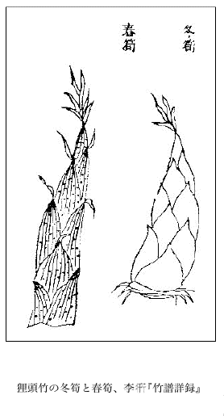
狸頭竹の冬筍と春筍、李※［＃「衙」の「吾」に代えて「干」、U+884E、225-図のキャプション］『竹譜詳録』
今モウソウチクの漢名としては猫頭竹を用いることとし、その他の
彈竹、猫頭竹、頭竹、猫児竹、猫竹、毛竹、茅竹、南竹をその一名とすればよろしい。すなわちこれでモウソウチクの漢名がきまり、従来久しく慣用し来った江南竹の漢名は今はモウソウチクとは絶縁となった、これでなんだか清々した気分だ。私はこのモウソウチクをハチク、マダケの属と分立せしめて一つの新属を建ててみるつもりで Moosoobambusa の新属名と Moosoobambusa edulis（Riv.）Makino の新学名とを用意した。近くその委曲を発表することにしている。
日本では竹籔の場合によく竹冠りを書いた籔の字を用いているが、元来この籔の字にヤブの意味は全然なく、これはすなわち桝目などに使う字だ。竹ヤブだから藪の字の艸冠りを竹冠りの籔の字にしてみたのは日本人の細工だ、細工は流々だがその仕上げはあまりご立派ではなかった。
私はこれまで数度にわたって、アジサイが紫陽花ではないこと、また燕子花がカキツバタでないことについて世人に教えてきた。けれども
全体紫陽花という名の出典は如何。それは中国の白楽天の詩が元である。そしてその詩は「何年植向仙壇上、早晩移植到梵家、雖在人間人不識、与君名作紫陽花」（何ンノ年カ植エテ向フ仙壇ノ
次はカキツバタの燕子花だが、そもそもこの燕子花の出典は如何。これは『
カキツバタはアヤメ科 Iris
昔からまたカキツバタと誤っている杜若の真物は、ショウガ科のアオノクマタケランである。人に笑われるのが嫌ならカキツバタを杜若と書かぬようにせねばならない。
日本の学者は中国の楡を日本のニレだとしているが、元来楡は日本にはない樹であるから日本のニレではあり得ない。それはニレ属（Ulmus）には相違がないが、けっしてニレその樹ではない。つまり従来からの日本の学者は本物の楡を知らなかった。しかしそれは無理もない。すなわち楡は絶えて日本に産しないから、その実物の捕捉が我が学者には出来なく、ついに楡をニレとする誤りに陥ったのである。
元来楡は大陸の産でシベリアから中国ならびに満州にかけて広く生じている大木である。木の大きい割合に葉の極めて小さいものである。そして春早く葉の出ない前に小さい花が枝上に咲き、直ちに実を結び、それから葉が茂るのである。すなわち花、実、葉という順序である。
楡は中国には沢山ある普通樹で、それが食物と関係があるから極く著明である。食物としてはどこを利用するのかというと、その嫩かい実とその嫩かい葉とその嫩かい皮とである。
実は花に次いでその枝上にあたかも串に刺したように無数になる。円形の翅果で、中央にある小さい堅果の周囲に薄い翅翼がある。初めは緑色で軟かく、それを採って煮て食する。私も昭和十六年（1941）に八十歳で満州へ行った時、五月にこれを大連市壱岐町三番地福本順三郎君（大連税関長）の邸で味ってみたが、あまり美味しいものではなかった。楡はこのように円い銭形をしたいわゆる
この実は熟すると早くも枝から落ちてしまう。そして新芽の葉もゆでれば食べられる。またこの樹の白色で軟かい生まの内皮を掻き取り食用にするのだが、それは粘滑質で餅などに入れて食する、いわゆる楡皮である。またこの内皮を取って乾燥して磨して白い粉となし
この楡はニレ科で俗に Siberian Elm と呼ばれ、その学名は Ulmus pumila L. である。この種名の pumila とは矮小ナあるいは細小ナ意味の語であるが、しかし元来この樹は高大なものであるにかかわらず、こんな学名がついたのは、それがシベリアからの灌木状のものであったので、その命名者がこんな種名を用いたゆえんであったのであろう。
楡の和名はノニレといわれる。すなわち野楡の意味である。満州ではこの樹は平地に生じ人家の辺に茂っていて普通に見られるところから、またこれを
日本の学者は昔、楡が我国にもあるとして、それに対しヤニレまたはイエニレという和名をつけていたが、これは楡が人家近くにあって一つに家楡とも呼ばれるという中国の書物の記述を見て、名づけたものであることが推想せられる。しかしこれは日本産のニレすなわちハルニレ（Ulmus japonica Sarg.＝Ulmus campestris Sm. var. japonica Rehd.＝Japanese Elm）を楡であると誤認して名づけたものである。そして楡の本物は、もとより日本には産しないこと上述の通りである。
上の和名のヤニレならびにイエニレは古名だが、またニレともネレともネリともさらにハルニレとも呼ばれる。ニレとは元来
楡と同属の樹に
シソ（紫蘇、または蘇）のタネ、エゴマ（荏）のタネと俗に呼んでいるものはじつは純然たる種子ではなく、純種子を含んだ果実である。植物学者はそんなことは朝飯前に知っているが、普通の人々には、それが分かるまい。あの小さい種子らしい粒を見て種子であると思うのは無理もない。
このシソあるいはエゴマの種子だと見えるものは、じつはその果実の四つに割れた一部分で、初めそれが宿存萼の奥底に鎮座しているのだが、熟するとばらばらの四粒となって萼内からこぼれ落ちるのである。そしてその円い球形の粒の表面には皺がある。この粒の中に本当の種子が一個ずつ入っている。そしてその粒は割れないから、その中の種子は外から見えない。
このシソならびにエゴマの子房は、元来合体した二心皮から出来ており、それが縊れて二つになり、両方の各心皮の中に二個の卵子があるから、つまり一子房には四つの卵子がある訳だ。そしてこの一子房を形成せる二心皮が再び二つに縊れていて、その両方に各一個ずつの卵子がある。今これを上から見ると、そこに四つの
右の子房が熟すると、元来は果実分類上の
となる。そしてその四分体、その内部に各一個の種子を含んだ四分体がばらばらになって宿存萼の底から出て来て地面に落ちる。すなわちこの四分体がいわゆるシソのタネ、エゴマのタネである。植物学者はこの種子様のものを小痩果（Nucule）あるいは小堅果（Nutlet）といっている。シソもエゴマも元来は同種異品のものであるが、その用途は違っている。すなわち紫蘇は西洋ではその葉の紫色を愛でて観葉植物となっているが、日本ではよい香のあるその葉がアオジソとともに香味料食品となっている。エゴマ（荏）はそのタネから搾った油を荏の油と称し、合羽、傘などに使用し、また食料とすることもある。しかし胡麻のタネは本当の純種子である、そしてゴマには通常黒ゴマ、白ゴマ、金ゴマがある。
諸地の山中にはジャコウソウと称する宿根草があって、クチビルバナ科に属し、夏に淡紅紫色の大形の唇形花を茎梢葉腋の短き聚繖梗にひらき、茎は叢生直立し方形で高さ三尺内外もあり、葉は
小野蘭山の口授した『
余程大ナル鈴ノ形也夢溪筆談ニモ鈴子香鈴々香ノ一名アリ花ノ形ニヨリテ名ヅクル也鈴子ノアルヲ択ムベシトアリ風ニツレテ麝香ノ匂ヒアリ、チギリテハ却テ臭気アリ時珍ノ説ノ如ク土零陵香ニ当ルヨシ」と述べ、また蘭山の『本草綱目啓蒙』巻之十、芳草類の薫草零陵香の条下には「又山海経ノ薫草ヲジヤカウサウニ充ル古説ハ穏カナラズ、ジヤカウサウハ生ノ時苗葉ヲ撼動スレバ其気麝香ノ如シ葉ヲ揉或ハ乾セバ香気ナシ漢名彙宛詳註ノ麝草ニ近シ」と書いてある。同じく小野蘭山口授の『本草
実際この草は麝香の香いがすると誇りやかに言い得るほどのものではない。それが多数生えている所に行きその苗葉を揺さぶり動かすと、じつに微々彷彿としてただ僅かに麝香の香いの気がするかのように感ずる程度にすぎなく、ジャコウソウという名を堂々とその草に負わすだけの資質はない。『
この植物について研究したミケル（Miquel）氏は、これを新属のものとして Chelonopsis（Chelone
右ジャコウソウ属すなわちミケル氏のつけた Chelonopsis の名称を誘致した北米産 Chelone
上の『
草ともいわれる、すなわちクチビルバナ科のカミメボウキ（神眼箒の意）で Ocimum sanctum L. の学名を有し、メボウキすなわち Ocimum Bacilicum L. と姉妹品である。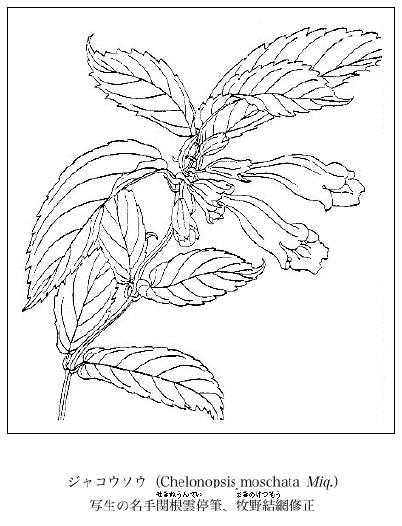
ジャコウソウ（Chelonopsis moschata Miq.）
写生の名手関根雲停 筆、牧野結網 修正
写生の名手
キツネノカミソリ、それは面白い名である。狐も時には鬚でも剃っておめかしをするとみえる。それからこのコンコンサマが口から火を吹き出すこともあれば、また美女に化けて人を誑かすという段取りになるのだが舞台が違うからここでは省略だ。
このキツネノカミソリはヒガンバナ科（マンジュシャゲ科、石蒜科）のいわゆる球根草で、日本国中諸所の林下に生じ、秋八月から九月にかけて柑赤色の花が二、三輪独茎の頂に咲く。誰もこれを庭に植える人はないが、しかしそう見限ったもんでもない。学名を Lycoris sanguinea Maxim. というのだが、この種名の Sanguinea は血赤色の意で、その花色に基づいたものである。
この属すなわち Lycoris
さて狐の剃刀とはその狭長な葉の形に基づいた名だ。時とするとヒガンバナに対してもキツネノカミソリの名を呼んでいるところがある。
これらの地中の球は俗に球根といっているが、じつは根ではなくて、其の根は鬚状をなして球の底部から発出しているいわゆる鬚根である。そしてこの球は極く短かい地下茎と地中の葉鞘からなっており、その大部はこの変形した葉鞘からなっており、その大部はこの変形した葉鞘で、それは嚢のように膨らんだ筒を成し層々と重なり、そこに養分が貯えられているから厚ぼったい。この部からは澱粉がとれる。元来この球には毒分（リコリンというアルカロイド）があるが、澱粉には無論この毒はない。またこの球を潰して流水に晒せばその毒分が流れ出て、その残ったものは餅に入れて食べられる。そしてこの球根を植物学上では襲重鱗茎（tunicated bulb）と称するが、しかしこの茎と指すところは前述の通りの極めて短かい茎で球の底部にあり、この茎から地下葉が重りつつ生じている。ユリ類の鱗茎はバラバラになった地下葉が出ているが、ヒガンバナ、キツネノカミソリなどは前記の通り地下茎が嚢様の筒となって重なっている。これは水仙も同じことだ。
これらは花の咲くときは葉がなく、葉は花がすんだあとで出て春に枯れる。その後秋になるとまた忽然と花が出る。ゆえにヒガンバナに「葉見ず花見ず」の名がある。これはヒガンバナに限らず、キツネノカミソリでもナツズイセンなどでもこの属の植物はみな同じである。今これを星に喩えれば参商の二星が天空で相会わぬと同趣だ。
私はこの属に今一種あることを知っている。そうすると日本にこの属のものが六種となる。それはオオキツネノカミソリ（新称）であって、今その学名を Lycoris kiusiana Makino（sp. nov.）と定めた。そしてその概説は An allied species to Lycoris sanguinea Maxim., but the leaves broader, and the flower larger than, and its colour similar to those of the latter. Perianth lobes larger and broader. Stamens much exserted（＝Lycoris sanguinea Maxim. var. kiusiana Makino, in herb.）であるが、なおその詳説は拙著『牧野植物混混録』に掲載する。
この襲重鱗茎球の外面は他のヒガンバナなどと同様に黒色となっているが、これはその球を包んでいる地中の葉鞘が老いて、その内容物を失い、黒い薄膜となって球の外面を被覆しているのである。
ハマカンゾウ（浜萱草の意）というワスレグサ（萱草）属の一種があって、広く日本
果を結び開裂すれば黒色の種子が出る、無論宿根草である。葉はノカンゾウと区別し難く、狭長で叢生し、葉色は敢えてナンバンカンゾウ（南蛮萱草の意）のように白らけてはいなく、またその葉質もナンバンカンゾウのように強靱ではなく、またその葉形もナンバンカンゾウのように広闊ではなく、またその花蓋片もナンバンカンゾウのように幅闊からずで、それとは自ら径庭があり、かつまたナンバンカンゾウの葉はその葉の下部が多少冬月に生き残って緑色を保っている殊態があるが、これに反してハマカンゾウの葉は冬には全然地上に枯尽してしまうことがノカンゾウまたはヤブカンゾウなどにおけると全く同様である。根もまたノカンゾウ、ヤブカンゾウと同じく粗なる黄色の鬚根で、その中にまじって塊根をなしているものがある。そして株からは地下枝を発出して繁殖するから、植えておくと大分拡がり、花時には多くの
を出して盛んに開花するが、その花径はおよそ三寸ばかりもある。花がすんだ後なおその緑色の
が枯れず、その梢部に緑葉ある芽を生ずる特性があるが、初めこの現象あるに気がついたので写真入りで、昭和四年（1929）四月十五日発行の『植物研究雑誌』第六巻第四号誌上にその事実を発表したのは久内清孝君で、同君はそれを相州葉山長者ヶ崎のこのハマカンゾウは一つの good species であり、また littoral plant である。広く太平洋、日本海の沿岸に分布して生じているから、中国でも四国でもまた九州でも常に瀕海の崖地で見られる。薩州
琉球ではハマカンゾウは自生していないが、しかしこれを圃隅に植えてその花を食用に供している。そして、これを塩漬にもし泡盛漬にもし、また汁の実にもするが、内地では一向それを利用していない。
昭和十九年二月に、東京の桜井書店で発行になった
終りに、上のナンバンカンゾウそのものについて述べてみると、
右の※［＃「くさかんむり／（糸＋爰）」、U+85E7、241-12］の字は
 の字の誤り、これは萱と同字で、その漢音はケン、呉音はクヮン、共に忘れる意である。
の字の誤り、これは萱と同字で、その漢音はケン、呉音はクヮン、共に忘れる意である。日本産のカエデ類（Acer）にイタヤカエデという名のカエデがあるが、今日の人々はみなその実物を間違えている。つまり本当のイタヤカエデがイタヤカエデとなっていなく、イタヤカエデでないものがイタヤカエデとなっている。そしてそれが林学の方面でもまた植物学の方面でも通り名となって誰も疑わずにこの名を用いているから、これは科学上どうしても是正しておかねばならんのである。猴は人ではなく、犬は猫でなく、牛は馬ではない。
元来イタヤカエデとはどういう意味から割り出して来た名であるのかとたずねてみると、これは宝永七年（1710）に出版になった、東武蔵、江戸の北なる染井の植木屋の主人
この
右によると、イタヤの名もメイゲツの名と同じく、Acer mono Maxim. の品類の名ではないから、この類からイタヤカエデの名を取り消さねば名称学上正しいものとはなりえない。ゆえにこの Acer mono Maxim. 一類の品はこれをツタモミジとかトキワカエデ（これは常磐すなわち常緑の意味ではなく、赤く紅葉しない意味だ、すなわちこの品は黄葉して赤色とはならない）とかの従来からある名にすればそれでよろしい。
従来山人が実地に呼んでいるものに、シロビイタヤ（白皮イタヤ）、アカビイタヤ（赤皮イタヤ）、クロビイタヤ（黒皮イタヤ）の三つがあるが、これはみな Acer mono Maxim. 中の品である。この mono 種にはいろいろの品があるので、その品によって樹皮の色が違うのであろう。ゆえにこれはどれがどれ、どれがどれと突きとめる必要があるのだが、林学の方で果たしてそれが判っているだろうかどうだろう、林学関係の学者に聴きたいものだ。
今日植物学界では北海道に産する（本州にもある）Acer Miyabei Maxim.（この種名 Miyabei
諸国に往々三度グリと呼んでいるクリがあって、その土地の名高い名物となっていることがある。すなわちそれは一年に三度実が生るというのである。実際そんなクリがあるにはあるが、じつをいうと何も一度、二度、三度と区切って実が生るのではなく、夏から秋まで連続してその実が着くのである。
かく呼ばれている三度グリについては、私の生国土佐にもその例があって『
土佐に三度グリというクリがあって『土佐国産往来』にも出ている。明治十四年（1881）私が二十歳の時の九月に、植物採集のため同国
伊予の国の某村にも右の土佐の三度栗と同様なものがあって、昭和六年の秋私が同国へ赴いたとき土地の人がそこを天然記念物保護地にしたいとの希望で、私の意見を求められたことがあったが、私は言下にそれは無駄だからヨセといって止めさせた。なぜなれば、もしそこを保護してそのクリを伐らなかったならば、たちまちその三度グリたる現状態が見られなくなるからであった。そしてこんなクリはやはり野に置けでないとその天真を失ってしまうことになる。
右のような小木のクリを
上のいわゆる三度グリと同様のものは、春に山を焼く場所にはどこにも見られ、敢えて珍らしいものではない。私は先年肥後葦北郡水俣の山地でもこれを見たのだが、同地にも普通に多く生長して多数な
三度グリについて小野
貝原
ク生ズ貧民ハ其実ヲ多トリテ粮トス筑紫ニ多シおよそ二百五十年前の嘉永三年（1850）に上梓せられた『
右の『桃洞遺筆』に引用されている『
元来栗は中国の産である、クリこそは日本にあるが栗は日本にはない。学名でいえば中国の栗は Castanea mollissima Blume＝Castanea Bungeana Blume）であって Chinese Chestnut の俗名を有し、和名はシナグリ（支那グリ）一名アマクリ（甘クリ）であり、日本のクリは Castanea crenata Sieb. et Zucc. であって Japanese Chestnut の俗名をもっている。そして中国の栗は同国の特産で日本には産せず、日本のクリは日本の特産で中国には産しない。だから中国の書物にある栗または杭子を我がサヽグリにあて、茅栗を我がシバグリにあて、板栗を我がタンバグリにあて、山栗を我が
 シテ軟キヲ待テ食シ以テ乾果ノ珍ト作ス、山栗ノ微小ナル者ヲ用テ之レヲ造ルモ亦佳ナリ、或ハ断肉蔬
シテ軟キヲ待テ食シ以テ乾果ノ珍ト作ス、山栗ノ微小ナル者ヲ用テ之レヲ造ルモ亦佳ナリ、或ハ断肉蔬 ノ時搗栗ヲ以テ鰹節ニ代フレバ能ク甜味ヲ生ズ、今正月元日及ビ冠婚規祝ノ具之レヲ用テ以テ物ニ克ツノ義ニ取ル、古ヘハ丹波但馬ヨリ主計寮ニ献ズ、近代ハ江東ニ多ク之レヲ造ル、京師海西ニ伝送シ最モ美ト称ス、今丹但ノ産甚ダ少クシテ好カラザル也、一種打栗ト云フ者アリ、好搗栗ヲ用テ蒸熟シ布ニ裹ミ鉄杵ヲ以テ徐徐ニ之レヲ打テ平団ナラシメ、而シテ青栢葉ニ盛テ以テ珍ト為ス、此レ本朝式ニ所謂平栗子耶或ハ曰ク搗栗ハ脾胃ヲ厚クシ腎気ヲ滋スノ功最モ生栗ニ勝レリ、好デ食スベシト、此モ亦理アルニ似タリ」
ノ時搗栗ヲ以テ鰹節ニ代フレバ能ク甜味ヲ生ズ、今正月元日及ビ冠婚規祝ノ具之レヲ用テ以テ物ニ克ツノ義ニ取ル、古ヘハ丹波但馬ヨリ主計寮ニ献ズ、近代ハ江東ニ多ク之レヲ造ル、京師海西ニ伝送シ最モ美ト称ス、今丹但ノ産甚ダ少クシテ好カラザル也、一種打栗ト云フ者アリ、好搗栗ヲ用テ蒸熟シ布ニ裹ミ鉄杵ヲ以テ徐徐ニ之レヲ打テ平団ナラシメ、而シテ青栢葉ニ盛テ以テ珍ト為ス、此レ本朝式ニ所謂平栗子耶或ハ曰ク搗栗ハ脾胃ヲ厚クシ腎気ヲ滋スノ功最モ生栗ニ勝レリ、好デ食スベシト、此モ亦理アルニ似タリ」右『本朝食鑑』よりずっと後に出版せられた『倭漢三才図会』によれば、「
シテ軟キヲ待テ食フモ亦佳シ或ハ食フ時一二顆ヲ用テ掌ニ握リ稍温ムレバ則チ柔ク乾果ノ珍物ト為ス也以テ嘉祝ノ果ト為スハ蓋シここに珍らしいクリにハコグリ（箱グリの意）というのがあって、まれに見受けられる。『本草綱目啓蒙』栗の条下に「江州ニ一毬ニ七顆アルアリ、ハコグリト云毬ノ形四稜ニシテ闊シ」と書いてある。
このハコグリが今東京都練馬区東大泉町五百五十七番地なる私宅の庭に育っている。これは藪を切り開いてこの宅地を設けるとき、偶然その樹を藪中に発見したので、これは珍らしいと保存したものである。その
カヤツリグサ科の中にカンエンガヤツリ（灌園蚊屋釣の意）という緑色一年生の大きなカヤツリグサ一種があって Cyperus Iwasakii Makino の学名を有する。これは岩崎灌園の著『本草図譜』巻之七にその図が出て、灌園はそれを「
このカンエンガヤツリは元来日本の植物ではなく、それは南鮮方面の原産である。同国ではこれを
日本、殊に東京付近では、折りにふれて時々このカンエンガヤツリが臨時に繁殖する面白い現象があることに留意すべきだ。すなわちそれは或るしばしの年間は繁殖していても、間もなくそこにそれが絶え、さらにまた突然と生えて繁茂している。そしてその繁殖場所はこれが水生植物であるがゆえに、いつも水の区で、すなわち池、濠あるいは河沿いの溜水池である。東京上野公園下の不忍池では往時から幾度もその繁殖の消長を繰り返している。上の灌園の文にも不忍池に生じていたことがあり、私も明治二十何年かに大いにそれが繁殖してヌマガヤツリ（Cyperus glomeratus L.）と共に生えていて松田定久君と共に心ゆくまで採集したことがあったが、その時たまたまこれらの莎草科品の大当り年であった。その後同池ではあるいは生えあるいは消えその消長は常なかったが、大正十五年（1926）の秋にもまた大いに繁殖した。それを今は故人となった緒方
また明治二十何年頃、東京麹町区三番町沿いの御濠にも
右のように本品はその生育場所に永続性がなく、そこに生えていたかと思うとその翌年は見られなくなるまぼろしガヤツリである。元来は一年生植物（annual）だが、それがあたかも多年生本（perennial）の如く意外に大形にかつ強壮に成長する。したがって果穂も大きく繁く、その小穂（spiculae）もじつに無数に出来ているから非常におびただしい実が稔る訳である。それゆえそれが豊産の翌年にはその場所の辺には大繁殖を見ねばならん理屈だ。が、しかしそううまくゆくこともあるにはあるが、また何かの原因でそうゆかないこともあるらしい。とにかくこのカヤツリ草は日本の土地に腰が据らないのが事実で、どうも縁がない。つまり居心地が悪く、ゆえにチョット一時寄留するに過ぎない草のようである。
私の考えるところでは、何がその実を日本へ持って来るのかというと、風か、否な、それは疑いもなく
以上書いた事実は、従来まだ誰もが説破しなかったものであった。
ついでに書いてみるが、上の岩崎灌園の『本草図譜』巻之七にはカヤツリグサ科植物が十一種載っている。先に大沼宏平君がその学名を校訂して刊行の『図譜』に書いているが、誤謬があるから今ここに右大沼君の校訂をさらに校訂してみよう。
おほかやつり ←（大沼是）
一種 水莎草（救荒本草 磚子苗注） ←（大沼非、これはカンエンガヤツリだ）
一種 かやつりぐさ ←（大沼是）
一種 陸生云々 ←（大沼非、これはヒナガヤツリだ）
一種 苗葉云々 ←（大沼非、これはヌマガヤツリだ）
一種 水辺に生じ云々 ←（大沼非、これはタマガヤツリだ）
一種 苗小云々 ←（大沼非、これはアオガヤツリだ）
一種 かうげん ←（大沼是）
一種 苗小くして云々 ←（大沼是）
本書の植物につき大沼君の学名校訂には随分と間違いがある。この書をひもとく人は心すべきだ。
無憂花と呼ぶ植物がある。この無憂花の名は無論仏教関係の方々には先刻御承知のはずだが、一般の人々には不慣な名であるので、したがってそれが何物であるのか、よく分らないでいることが多いと思う。しかしかの九条武子さんの著書の『無憂華』で世人は大分その無憂華の名を記憶したのだろう。
この無憂花は無憂華とも
『
このアソカすなわち無憂花はカイトラ月の十三日（九月二十七日）ウラパジにおいて仏を礼拝するヒンヅー人にとって真に神聖なる樹である。この樹の花は四月五月の季間極めて美麗に咲き誇りかつその佳香が夜中でも薫じているので諸処の寺院ではそれを装飾花として仏前に供える。またその花は恋の象徴すなわちシムボルで、それを恋愛の神であるカーマ（Kama）に捧げられる。
梵歌によれば、この樹の性質はなはだ敏感で、美人の手がそれに触れば、たちまち花がひらいてあたかも羞じらうように赤い色を呈するといわれている。前文にある「無憂樹ハ女人之レニ触レバ花始テ開ク」も蓋しこの意であろう。
薬用方面ではその樹皮に多くタンニン酸が含まれ、種々に用いられるが、その中で土地の医者は子宮病の中で殊に月経過多を療するに用うることがある。また花は搗き砕いて水に交ぜ、出血赤痢を治すのに使用せられる。
この樹は小木で直立し、枝は非常に多くて四方に拡がり常緑の繁葉婆娑として蔭をなしすこぶる美観を呈している。葉は短柄を有して枝に互生し、偶数羽状複葉で長さおよそ一尺ばかり、小葉は三ないし対をなし披針形で全辺、葉質硬く平滑で光沢がある。嫩葉は軟薄で紅色を呈し、葉緑を欠いでいて下垂しその観すこぶる面白味があり、ちょうど Amherstia nobilis Wall.（マメ科、カザリバナ）Mesua ferrea L.（オトギリソウ科、タガヤサン、鉄刀木？）Mangifera india L.（ハゼノキ科、マンゴー、芒果）Polyalthia（バンレイシ科）等諸樹の嫩葉と同様である。花は一月から五月の間に開き佳香がある。多数の花が球形の繖房花を形成し、腋生しならびに枝頭に密集してひらき、初めは橙黄色だが次第に紅を潮しついに赤色に変じ一花叢のうち両色交ごも相雑わり、これが暗褐色の枝条ならびに深緑色な葉に映じて美麗な色采を見せている。その状チョット
花は小梗を具え、その梗頂、花に接して二片の葉状有色の苞があって心臓状円形を呈している。
花には花冠がない、萼が花冠様を呈し、その下部は肉質で実せる筒をなし、その喉部に環状の密槽花盤があり、雄蕊も雌蕊もそこから出ている。舷部は漏斗状を呈して四深裂し、各片は広楕円形をなして平開している。
雄蕊は通常七本で長く超出し小形の葯を着けている、雌蕊は一本でその長さ雄蕊と等しく、長い花柱の本に有柄の子房がある。
莢果は長さ六寸ないし一尺ぐらいで少しく膨れ、長刀形で四ないし八顆の種子を容れている。そしてこの莢の未熟なときは肉質で赤色を呈している、種子は長楕円形で平扁、長さ一寸五分ばかりもある。
この植物はインドの各地で種々な土言があるが、なかんずくベンガルではアソク、アソカといい、ボンベイではアショク、アソク、アソカ、ヤスンジと呼ばれる。梵語ではアショカ、カンカリ、カンケリ、ヴハンジュウ、ヴハンジュルドルマ、ヴィショカ、ヴィタショカと称えられる。
私は今植物学界の人々ならびにその他の人々に向かってアオツヅラフジの名を口にすることを止めよ！ と絶叫するばかりでなく、それを止めるのが正道で、止めぬのは邪道であると公言することを憚らない。何んとなればツヅラフジ科の Cocculus trilobus DC.（＝Cocclus Thunbergii DC.）は断じてアオツヅラフジではないからである。
しからばそのアオツヅラフジとは一体どんな植物か、すなわちそれはアオカヅラ（『本草和名』、『本草類編』、『倭名類聚鈔』）、一名アオツヅラ、一名アオツヅラフジ、一名ツヅラカヅラ、一名ツヅラフジ、一名ツヅラ、一名ツタノハカヅラであって普通にはツヅラフジと称える。すなわちこれを学名でいえば Sinomenium diversifolium Diels で、もとは Cocculus diversifolius Miq. と名づけられたものだ。Menispermum acutum Thunb. が多分この植物だろうと私も疾く独自に考えて Sinomenium acutum Makino として大正三年（1914）十二月東京帝室博物館刊行の『東京帝室博物館天産課日本植物
今日植物界で Cocculus trilobus DC. をアオツヅラフジと呼んでいる誤謬を世人に強いたのはかの小野蘭山であって、彼の著『本草綱目啓蒙』でそうした。全く蘭山が悪いので、どうも蘭山ともあろう大学者がツヅラフジの認識を誤っているとは盛名ある同先生にも似合わないことだ。そしてその当時から幾多の学者があってもその目は節穴同然で、誰もその非を唱えたものはなかったが、しかし一人紀州の
蘭山は上に書いたように Cocculus trilobus DC. の名を間違えてアオカヅラすなわちツヅラフジとしたので、蘭山はツヅラフジへ別に名をこしらえ新たにこれをオオツヅラフジといわねばならなかった。これはじつは屋上さらに屋を設くの愚を敢えてしたもので、畢竟このオオツヅラフジの名は全く不要な贅名である。何となればこのオオツヅラフジは取りも直さずツヅラフジそのものであるからである。世人はこのイキサツを知らないから蘭山の説に盲従してオオツヅラフジの名を呼んでいるが、このオオツヅラフジはツヅラフジでよいのである。つまり蘭山はツヅラフジを間違えそれをよく正解しておらず、その名を Cocculus trilobus DC. のものだと思違いしていたのである。そして世人はその思違いの名を有難く頂戴していた、イヤいる訳だ。
今これを分りやすくハッキリと書き分けてみれば次の通りとなる。
○アオカヅラ、アオツヅラ、ツヅラカヅラ、ツヅラフジ、ツヅラ、ツタノハカヅラ、メクラブドウ、フソナ
Sinomenium diversifolium Diels（＝Sinomenium acutum Rehd. et Wils.）＝Cocculus diversifolius Miq.
これを漢防已 にあてているが中 らない。
○カミエビ、チンチンカヅラ、ピンピンカヅラ、メツブシカヅラ、ヤブカラシ（同名がある）、ハクサカヅラ、ウマノメ、ヤマカシ
Cocculus trilobus DC.（＝Cocculus Thunbergii DC.）
これを木防已にあてているが中らない。
ついでに記してみるが、『本草綱目啓蒙』防已の条下に「今花戸ニ一種唐種漢防已ト呼ブ者アリ葉形オホツヅラフヂニ似テ薄ク色浅シ蒂モ微シク葉中ニヨル根ハ細ク色黄ニシテ内ニ白穰アリテ車輻解ヲナサズコノ草ハ諸州深山ニモアリ勢州ニテ、コウモリヅタト呼ビ越前ニテ、コツラフヂト云」との文があって、唐種漢防已とコウモリヅタ［牧野いう、コウモリカヅラのこと］とを同種だとしているのは誤りで、この二つは全然別種である。漢防已はけっして我が日本には産しないから右の『啓蒙』の記すところは全く間違っている。この『啓蒙』にはこんな誤謬が書中いたるところに見出さるるのは遺憾である。櫛をつくる材をモチノキ属のイヌツゲだとしているなどは中にもその誤りの大きなものであって、黄楊のツゲすなわちホンツゲが泣いていることが聞えんだろうか。Sinomenium diversifolium Diels（＝Sinomenium acutum Rehd. et Wils.）＝Cocculus diversifolius Miq.
これを
○カミエビ、チンチンカヅラ、ピンピンカヅラ、メツブシカヅラ、ヤブカラシ（同名がある）、ハクサカヅラ、ウマノメ、ヤマカシ
Cocculus trilobus DC.（＝Cocculus Thunbergii DC.）
これを木防已にあてているが中らない。
ミツバウツギ科の落葉小喬木にゴンズイという雑木があって山地の林樹にまじって生じ、枝に奇数羽状複葉を対生し一種の臭気を感ずる。秋にその
果我国の本草学者はかつてこのゴンズイを中国の樗にあてていたが、それはもとより誤りであって、この樹の本当の漢名は野鴉椿である。しかし以前からこの樹をゴンズイと呼んでいる訳は別にどの書物にも書いてないようだが、それは私の考えるところではそうでないかと思われる。すなわちそれは前にこのゴンズイを樗にあててあって、その樗はいわゆる「
それでは役立たぬこの樹がどういう意味合いでゴンズイであると唱えられるのかというと、元来このゴンズイとは食料として余り役立たない魚であるので、その役立たぬ魚の名すなわちゴンズイを、役立たぬと思惟せられたこの樹に対して利用したのではないかと考える。そのゴンズイというのはどんな魚かと詮議してみると、それはゴンズイ科に属する小さい海魚で、細長い体は長さ数寸、口に八本の長い髭を具え、体の色は青黒くその両面に各二条の黄色縦線が頭から尾まで通っており、背鰭と胸鰭とに尖き刺があって、もしさされるとひどく疼むから人に嫌われるが、それでも浜の漁民は時に強いて食することがある。こんなに小さくてかつ無用な魚であるから昔から江戸の魚市場へは出さないので、この魚を一つに江戸見ずゴンズイと呼んだもんだ。国によってはまたクグあるいはググの方言もある。しかしゴンズイの語原は全く不明でその意味は判っていない。
古来どの学者でも
辛夷は中国特産植物専用の中国名すなわち漢名であって、一つに木筆とも称せられる。コブシ（Magnolia Kobus DC.）は日本の特産で全然中国にはない。中国にない植物に中国名のあろうはずがない。単にこの一事をもってみても我が日本産のコブシが中国植物の辛夷ではあり得ない理屈だ。そして右のように結論するのが理の当然で、これで古来永くズルズルと来ていたこの問題は潔よく解決した。そしてコブシはコブシであってけっしてこれを辛夷とは書くべからずだ。
モクレン（Magnolia liliflora Desr.）は昔中国から渡り来った落葉灌木性の庭園花木である。そしてこのモクレンの和名がもとは木蘭かあるいはその一名の木蓮から来たものであるとしても、それは無論名実を誤ったもので、中国の本当の木蘭そのものはけっしてこんな落葉灌木ではなく、この落葉灌木のモクレンこそこれが真の辛夷である。故にモクレンの漢名はまさに辛夷と書くべきであって、断じて木蘭と書くべきではないのである。繰り返していえばモクレンは辛夷、辛夷はモクレンであると心得るべきだ。
従来日本の諸学者が辛夷をモクレンだと気づかなかった迂濶さにはじつに驚くのほかはない。例えば『秘伝花鏡』『八種画譜』の図を見ただけでもそれが直ぐに判かるのではないか。
それでは木蘭とはどんなものか。それは中国の湖北省西方からいわゆる
今上の説を一括して解りやすくその要領を述べてみれば次の通り。
コブシ（Magnolia Kobus DC.）は日本の特産で、中国にはない落葉喬木である。そして全然漢名はないから、これを辛夷というのは絶対に間違っている。
モクレン（Magnolia liliflora Desr.）は中国の特産で、辛夷がまさにその名である。落葉灌木で庭園の鑑賞植物である。そしてこれはけっして木蘭ではない。
木蘭（Magnolia sp.）はこれまた中国の特産で、高さ数仭に達する常緑の大喬木である。そしてもとより和名はない。
今日はかつて昭和九年（1934）六月発行の雑誌『本草』第二十二号に発表せる左の拙文「万年芝の一瞥」を図とともに転載するために筆をとった。
万年芝の一瞥
マンネンタケはいわゆる芝すなわち
マンネンタケには別にサイハイタケ、カドイデダケ、カドデダケ、キッショウダケ、レイシなどの芽出度い名もあれば、またマゴジャクシ、ネコジャクシ、ヤマノカミノシャクシなどの形から来た名もある。
中国の説では芝には五色の品があるということだ。この五色芝は小野蘭山は「仙薬ニシテ尋常ノ品ニ非ズ其説ク所尤モ怪シク信ズベカラズ」と書いているが、それはまさにその通りであろうと思う。
我国の学者は上のマンネンタケを霊芝の中の紫芝にあてている。これは『本草綱目』に芝に五品あるとしてこれを青芝、赤芝、黄芝（金芝）、白芝（一名玉芝、素芝）、紫芝（一名木芝）に別っており、その紫芝をマンネンタケにあてたものである。
中国の書物の『
霊芝、一名ハ三秀、王者ノ徳仁ナレバ則チ生ズ、市食ノ菌ニ非ラズシテ、乃チ瑞草ナリ、種類同ジカラズ、惟黄紫二色ノ者、山中常ニアリ、其形チ鹿角ノ如ク或ハ繖蓋ノ如シ、皆堅実芳香、之レヲ叩ケバ声アリ、服食家多ク採テ帰リ、 ヲ以テ盛リ飯甑ノ上ニ置キ、蒸シ熟シ晒シ乾セバ、蔵スルコト久フシテ壊レズ、備テ道糧ト作ス、又芝草ハ一年ニ三タビ花サク、之レヲ食ヘバ人ヲシテ長生セシム、然レドモ芝ハ山川ノ霊異ヲ稟テ生ズト雖ドモ、亦種植スベシ、道家之レヲ植ル法、毎ニ糯米飯ヲ以テ搗爛シ、雄黄鹿頭血ヲ加ヘ、曝乾ノ冬笋ヲ包ミ、冬至ノ日ヲ候テ、土中ニ埋メバ自ラ出ヅ、或ハ薬ヲ灌イデ老樹腐爛ノ処ニ入レバ、来年雷雨ノ後、即チ各色ノ霊芝ヲ得ベシ、雅人取テ盆松ノ下、蘭薫ノ中ニ置ケバ、甚ダ逸致アリ、且能ク久シキニ耐テ壊レズ、（漢文）
ヲ以テ盛リ飯甑ノ上ニ置キ、蒸シ熟シ晒シ乾セバ、蔵スルコト久フシテ壊レズ、備テ道糧ト作ス、又芝草ハ一年ニ三タビ花サク、之レヲ食ヘバ人ヲシテ長生セシム、然レドモ芝ハ山川ノ霊異ヲ稟テ生ズト雖ドモ、亦種植スベシ、道家之レヲ植ル法、毎ニ糯米飯ヲ以テ搗爛シ、雄黄鹿頭血ヲ加ヘ、曝乾ノ冬笋ヲ包ミ、冬至ノ日ヲ候テ、土中ニ埋メバ自ラ出ヅ、或ハ薬ヲ灌イデ老樹腐爛ノ処ニ入レバ、来年雷雨ノ後、即チ各色ノ霊芝ヲ得ベシ、雅人取テ盆松ノ下、蘭薫ノ中ニ置ケバ、甚ダ逸致アリ、且能ク久シキニ耐テ壊レズ、（漢文）
ヲ以テ盛リ飯甑ノ上ニ置キ、蒸シ熟シ晒シ乾セバ、蔵スルコト久フシテ壊レズ、備テ道糧ト作ス、又芝草ハ一年ニ三タビ花サク、之レヲ食ヘバ人ヲシテ長生セシム、然レドモ芝ハ山川ノ霊異ヲ稟テ生ズト雖ドモ、亦種植スベシ、道家之レヲ植ル法、毎ニ糯米飯ヲ以テ搗爛シ、雄黄鹿頭血ヲ加ヘ、曝乾ノ冬笋ヲ包ミ、冬至ノ日ヲ候テ、土中ニ埋メバ自ラ出ヅ、或ハ薬ヲ灌イデ老樹腐爛ノ処ニ入レバ、来年雷雨ノ後、即チ各色ノ霊芝ヲ得ベシ、雅人取テ盆松ノ下、蘭薫ノ中ニ置ケバ、甚ダ逸致アリ、且能ク久シキニ耐テ壊レズ、（漢文）であって、これに付けて五色芝、木芝、草芝、石芝、肉芝の諸品が挙げられ、そのあとに下の文章がある。
芝ハ原ト仙品、其形色変幻、端倪スベキナシ、故ニ霊芝ノ称アリ、惟有縁ノ者之レニ遇フコトヲ得ルノミ、採芝図所載ノ名目ニ拠ルニ、数百種アリ、茲ニ止ダ其十分ノ三ヲ録シ、以テ山林高隠ノ士、服食ヲ為ス参巧ノ一助ニ備フルナリ、（漢文）
唐画中によく霊芝が描いてあるが、いつもその菌蓋上面に太い鬚線が描き足してあるのを見る。これは多分その蓋面へ松の葉が墜ちているに擬したものであろうか。これは画工であればよくそのワケを知っているであろう。
芝の字はもとは之の字であって、これは
芝について李時珍はその著『本草綱目』の芝の「
按ずるに中国で芝と唱えるものはその範囲がすこぶる広く、中には無論マンネンタケのような菌類もあるが、なお他の異形の菌類もある。また海にある珊瑚礁の一種であるキクメイ石の如きものも含まれているようである。また
雑誌『本草』誌上の文は右で終っているが、今いささかそれへ書き足してみれば、上の楯形をしたマンネンタケへ対し私は forma peltatus（これは楯形の意）の新品名を設け、これを Fomes dimidiatus（Thunb.）Makino, nov. comb. （＝Boletus dimidiata Thunb. Fl. Jap. p.348, tab.
 . 1784）forma peltatus Makino（Stipe inserted to pileus centrally or excentrically.）と定め、そしてそれをカラカサマンネンタケと新称する。川村清一博士の『食菌と毒菌』ならびに『日本菌類図説』、朝比奈
. 1784）forma peltatus Makino（Stipe inserted to pileus centrally or excentrically.）と定め、そしてそれをカラカサマンネンタケと新称する。川村清一博士の『食菌と毒菌』ならびに『日本菌類図説』、朝比奈右 Thunberg 氏の著 Flora Japonica（1784我が天明四年刊行）の書に出ている記載文を伴ったマンネンタケの図を同書から写して左に掲げてみる。これは西洋の書物に載っている本菌最初の写生図である。
先年私は広島県安芸の国の三段峡入口で銀白色を呈していたマンネンタケ一個、その菌蓋の直径およそ十センチメートルばかりのものを得て東京に持ち帰った。その菌体の色から私はこれをシロマンネンタケと号けたが、その学名は未詳である。多分一つの新種に属するものであろうと想像するが、そのうち菌学専門家に聴いてみたいと思っている。
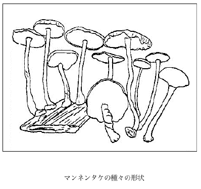
マンネンタケの種々の形状
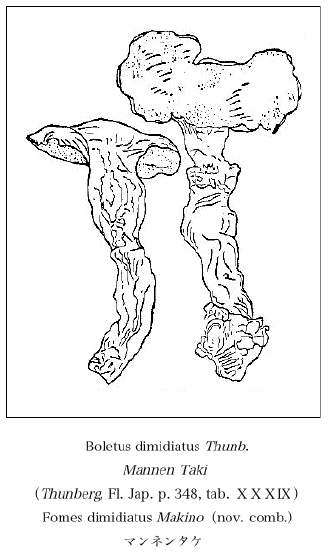
Boletus dimidiatus Thunb.Mannen Taki（Thunberg, Fl. Jap. p. 348, tab. ）Fomes dimidiatus Makino（nov. comb.）
マンネンタケ
）Fomes dimidiatus Makino（nov. comb.）マンネンタケ
昔蘭学時代にはオリーブ（Olive）すなわちオレイフ・ボーム（Olive-baum）のことをホルトガルといった。寛政十一年（1799）出版の
我国の徳川時代における本草学者達はヅクノキ一名ハボソを間違えて軽率にもそれをオリーブだと思ったので、今日でもこの樹をホルトノキ（ホルトガルノ木の略）と濫称しているが、それは大変な誤りだ。そしてこのヅクノキをオリーブと間違えるなんて当時の学者の頭はこの上もなく疎漫で鑑定眼の低かったことが窺われる。ヅクノキの葉は互生で鋸歯があり裏面が淡緑色であるから、オリーブの葉の対生で全辺で裏面が白色であることと比較すれば直ぐその違いが判るのではないか。無論オリーブとヅクノキとは科も異なりオリーブは合弁花を開くヒイラギ科に属し、ヅクノキは離弁花のヅクノキ科に
ユズリハはその葉片にも無論美点はあるが、冬に至るとその太き長き葉柄が殊のほか紅色を呈して美わしくなる。葉片と枝とは緑色であるからこれに反映しての葉柄美は特に目立ち、ユズリハは全く冬の植物であることを想わせる。葉柄の前側には狭長な縦溝路があり、葉は質が鈍厚で表面は緑色を呈するが、裏面は淡緑色で常に或る菌類が寄生し、諦視すると細微な黒点を散布している。またある白色黴の菌糸が模様的に平布して
ユズリハは譲り葉で、その時季に際すれば旧葉が枝から謝すれば、早速その上方に新葉が萌出して旧葉に代わるからそういわれる。タブノキなどの葉でも矢張り同じく新陳代謝はするが、その中にもユズリハが最も目立って著明である。
正月にユズリハを飾るのは譲るの意である、すなわち親は身代を子に譲り、子はまた身代を孫に譲り、もって子々孫々相襲いで一家を絶させんようにと祈ったものだ。
ユズリハの葉は大形常緑で、その中脈は葉の上面にも隆起するが、しかし殊に下面に著しい、支脈は多数で羽状に並んでいる。
ユズリハの枝を取りそれを上方より望み見ればその葉が車輪状に四方に拡がり出で、したがってその赤き葉柄も四方に射出して見え、外方は緑葉、内方は赤葉柄で特に美しく眺められ棄てたものではないと感ずる。
ユズリハは諸州の山地に自生があるが、また庭樹としても植えられてある。また葉柄は時に淡紅色のものもあればまた淡緑色のものもある。この淡緑色の品をアオユズリハと称する。
正月にユズリハを飾るのは、譲るの意で、親は子に譲り、子は孫に譲り、子々孫々相襲いで一家を絶えさせんようにと祈ったものである。この点からみるとユズリハは芽出度い木である。松竹梅に伴わさしてもよかろう。
私の庭には今二本のユズリハの木があるが、その葉が美わしく茂って、万歳を寿ほぎしているかのように見える。
［＃改丁］
［＃ページの左右中央］
昭和二十一年八月十七日より稿し初め、一日に必ず一題を草し、これを百日欠かさず連綿として続け、終に百日目に百題を了えた。
昭和二十八年二月
結網学人
牧野富太郎識るす
昭和二十八年二月
結網学人
牧野富太郎識るす